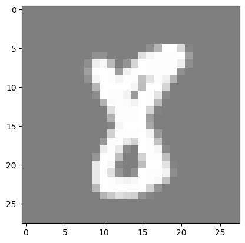
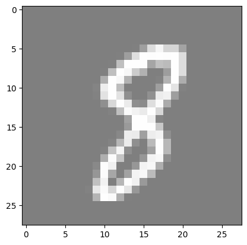
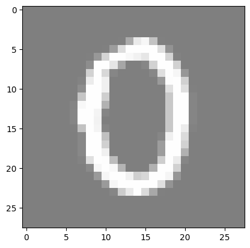

Lesson 1: MNIST Classification using Fully Connected Neural Networks#
Introduction#
MNIST is a simple computer vision dataset. It consists of 28x28 pixel images of handwritten digits. The dataset also includes labels for each image, telling us which digit it is (0, 1, 2, …, 9).
In this notebook, we will use the MNIST dataset to train a simple neural network to classify the images. We will use the PyTorch library to build a simple fully connected neural network and train it on the dataset.
The notebook is divided into the following sections:
Importing the libraries
Loading the dataset
Preparing the dataset
Building the neural network
Training the model
Evaluating the model
Reloading the model and making predictions
Throughout the notebook, you will see ‘#TODO’ comments. These are placeholders for you to write your own code. You should write the code to complete the functionality of the neural network.
Imports#
import torch
import torch.nn as nn
import torchvision
import torchvision.transforms as transforms
import matplotlib.pyplot as plt
import numpy as np
from tqdm import tqdm
import os
Hyperparameters#
# Determine if a GPU is available, and use it if so
# we will use it to train our model, if not we will use the CPU
device = torch.device("cuda" if torch.cuda.is_available() else "cpu")
input_size = 784 # MNIST data is 28x28 pixels
hidden_size = 500 # number of nodes in the hidden layer
num_classes = 10 # number of output classes (0-9)
num_epochs = 5 # number of times we will loop through the entire dataset
batch_size = 100 # number of images to process at once
learning_rate = 0.001 # how much we update our weights each iteration
MNIST#
Load MNIST#
The first step is to load the MNIST dataset. We will use the tensorflow_datasets library to load the dataset.
# create datasets folder
os.makedirs("../datasets", exist_ok=True)
# MNIST dataset
train_dataset = torchvision.datasets.MNIST(
root="../datasets", train=True, transform=transforms.ToTensor(), download=True
)
test_dataset = torchvision.datasets.MNIST(
root="../datasets", train=False, transform=transforms.ToTensor()
)
Downloading http://yann.lecun.com/exdb/mnist/train-images-idx3-ubyte.gz
Failed to download (trying next):
HTTP Error 404: Not Found
Downloading https://ossci-datasets.s3.amazonaws.com/mnist/train-images-idx3-ubyte.gz
Downloading https://ossci-datasets.s3.amazonaws.com/mnist/train-images-idx3-ubyte.gz to ../datasets/MNIST/raw/train-images-idx3-ubyte.gz
0%| | 0/9912422 [00:00<?, ?it/s]
100%|██████████| 9912422/9912422 [00:00<00:00, 117046100.44it/s]
Extracting ../datasets/MNIST/raw/train-images-idx3-ubyte.gz to ../datasets/MNIST/raw
Downloading http://yann.lecun.com/exdb/mnist/train-labels-idx1-ubyte.gz
Failed to download (trying next):
HTTP Error 404: Not Found
Downloading https://ossci-datasets.s3.amazonaws.com/mnist/train-labels-idx1-ubyte.gz
Downloading https://ossci-datasets.s3.amazonaws.com/mnist/train-labels-idx1-ubyte.gz to ../datasets/MNIST/raw/train-labels-idx1-ubyte.gz
0%| | 0/28881 [00:00<?, ?it/s]
100%|██████████| 28881/28881 [00:00<00:00, 90467284.41it/s]
Extracting ../datasets/MNIST/raw/train-labels-idx1-ubyte.gz to ../datasets/MNIST/raw
Downloading http://yann.lecun.com/exdb/mnist/t10k-images-idx3-ubyte.gz
Failed to download (trying next):
HTTP Error 404: Not Found
Downloading https://ossci-datasets.s3.amazonaws.com/mnist/t10k-images-idx3-ubyte.gz
Downloading https://ossci-datasets.s3.amazonaws.com/mnist/t10k-images-idx3-ubyte.gz to ../datasets/MNIST/raw/t10k-images-idx3-ubyte.gz
0%| | 0/1648877 [00:00<?, ?it/s]
100%|██████████| 1648877/1648877 [00:00<00:00, 95131797.25it/s]
Extracting ../datasets/MNIST/raw/t10k-images-idx3-ubyte.gz to ../datasets/MNIST/raw
Downloading http://yann.lecun.com/exdb/mnist/t10k-labels-idx1-ubyte.gz
Failed to download (trying next):
HTTP Error 404: Not Found
Downloading https://ossci-datasets.s3.amazonaws.com/mnist/t10k-labels-idx1-ubyte.gz
Downloading https://ossci-datasets.s3.amazonaws.com/mnist/t10k-labels-idx1-ubyte.gz to ../datasets/MNIST/raw/t10k-labels-idx1-ubyte.gz
0%| | 0/4542 [00:00<?, ?it/s]
100%|██████████| 4542/4542 [00:00<00:00, 26096614.75it/s]
Extracting ../datasets/MNIST/raw/t10k-labels-idx1-ubyte.gz to ../datasets/MNIST/raw
After downloading the dataset, we will use torch dataloaders to load the data. Dataloader is a utility that helps us to load the data in batches and also shuffle the data.
# Data loader
train_loader = torch.utils.data.DataLoader(
dataset=train_dataset, batch_size=batch_size, shuffle=True
)
test_loader = torch.utils.data.DataLoader(
dataset=test_dataset, batch_size=batch_size, shuffle=False
)
Visualize MNIST#
## Visualize MNIST
# functions to show an image
def imshow(img):
img = img / 2 + 0.5 # unnormalize
npimg = img.numpy()
plt.imshow(np.transpose(npimg, (1, 2, 0)))
plt.show()
for _ in range(3):
image, _ = train_dataset[np.random.randint(0, len(train_dataset))]
imshow(torchvision.utils.make_grid(image))



Data Augmentation#
# TODO:
# Watch this very short (it's literally a YouTube Short) video about data augmentation: https://www.youtube.com/shorts/S-7LpWzUaOg
# Read about data augmentation for images in PyTorch: https://www.kaggle.com/code/mohamedmustafa/7-data-augmentation-on-images-using-pytorch
# Add data augmentation to the MNIST dataset
Neural Network#
class Net(nn.Module): # inherit from nn.Module
def __init__(self, input_size, hidden_size, num_classes):
super(Net, self).__init__() # call the constructor of the parent class
self.fc1 = nn.Linear(input_size, hidden_size) # first fully connected layer
self.relu = nn.ReLU() # activation function
# TODO:
# 1. Add a second fully connected layer (don't forget to add an activation function).
# 2. (Optional) Experiment with different activation functions,
# such as sigmoid, tanh, leaky relu and parametric relu.
self.fc2 = nn.Linear(hidden_size, num_classes) # second fully connected layer
# softmax is used for multi-class classification problems
# it converts the output to a probability distribution over the classes
# the class with the highest probability is the predicted class
# logsoftmax is used to improve numerical stability
self.logsoftmax = nn.LogSoftmax(dim=1)
def forward(self, x: torch.Tensor) -> torch.Tensor:
"""
:param x: input tensor (batch_size, input_size)
"""
x = self.fc1(x)
x = self.relu(x)
x = self.fc2(x)
x = self.logsoftmax(x)
return x
Initialization#
# create the model and move it to the GPU if available
model = Net(input_size, hidden_size, num_classes).to(device)
# loss function
# we usually use cross-entropy loss for classification problems
# it applies log softmax to the output and then applies negative log likelihood loss
# in our model, we apply logsoftmax in the forward method, so we don't
# the loss function to do it.
# Thence, instead of using nn.CrossEntropyLoss, we use nn.NLLLoss
# simply,
# * If we apply logsoftmax in the forward method, we use nn.NLLLoss
# * If we don't apply logsoftmax in the forward method, we use nn.CrossEntropyLoss
criterion = nn.NLLLoss() # negative log likelihood loss
# optimizer
# we use the Adam optimizer, it is a popular optimizer
# it is an extension to stochastic gradient descent
# it computes adaptive learning rates for each parameter
optimizer = torch.optim.Adam(model.parameters(), lr=learning_rate)
Training the Model#
# Training loop
total_step = len(train_loader)
for epoch in range(num_epochs):
# Initialize progress bar
progress_bar = tqdm(enumerate(train_loader), total=total_step, leave=True)
for i, (images, labels) in progress_bar:
# Move tensors to the configured device
images = images.reshape(-1, 28 * 28).to(device) # flatten the images
# flatten the images to be (batch_size, 28*28)
# this is important because FCNNs take a 1D tensor as input
labels = labels.to(device)
# Forward pass
outputs = model(images)
loss = criterion(outputs, labels)
# Backpropagation and optimization
optimizer.zero_grad()
loss.backward()
optimizer.step()
# Update progress bar description
progress_bar.set_description(
f"Epoch [{epoch+1}/{num_epochs}], Step [{i+1}/{total_step}], Loss: {loss.item():.4f}"
)
0%| | 0/600 [00:00<?, ?it/s]
Epoch [1/5], Step [1/600], Loss: 2.3068: 0%| | 0/600 [00:00<?, ?it/s]
Epoch [1/5], Step [2/600], Loss: 2.2210: 0%| | 0/600 [00:00<?, ?it/s]
Epoch [1/5], Step [3/600], Loss: 2.1305: 0%| | 0/600 [00:00<?, ?it/s]
Epoch [1/5], Step [4/600], Loss: 2.0492: 0%| | 0/600 [00:00<?, ?it/s]
Epoch [1/5], Step [5/600], Loss: 1.9423: 0%| | 0/600 [00:00<?, ?it/s]
Epoch [1/5], Step [6/600], Loss: 1.8518: 0%| | 0/600 [00:00<?, ?it/s]
Epoch [1/5], Step [7/600], Loss: 1.7996: 0%| | 0/600 [00:00<?, ?it/s]
Epoch [1/5], Step [7/600], Loss: 1.7996: 1%| | 7/600 [00:00<00:08, 67.72it/s]
Epoch [1/5], Step [8/600], Loss: 1.6953: 1%| | 7/600 [00:00<00:08, 67.72it/s]
Epoch [1/5], Step [9/600], Loss: 1.5730: 1%| | 7/600 [00:00<00:08, 67.72it/s]
Epoch [1/5], Step [10/600], Loss: 1.4871: 1%| | 7/600 [00:00<00:08, 67.72it/s]
Epoch [1/5], Step [11/600], Loss: 1.4311: 1%| | 7/600 [00:00<00:08, 67.72it/s]
Epoch [1/5], Step [12/600], Loss: 1.3032: 1%| | 7/600 [00:00<00:08, 67.72it/s]
Epoch [1/5], Step [13/600], Loss: 1.1271: 1%| | 7/600 [00:00<00:08, 67.72it/s]
Epoch [1/5], Step [14/600], Loss: 1.1074: 1%| | 7/600 [00:00<00:08, 67.72it/s]
Epoch [1/5], Step [15/600], Loss: 1.0189: 1%| | 7/600 [00:00<00:08, 67.72it/s]
Epoch [1/5], Step [15/600], Loss: 1.0189: 2%|▎ | 15/600 [00:00<00:08, 71.98it/s]
Epoch [1/5], Step [16/600], Loss: 1.0076: 2%|▎ | 15/600 [00:00<00:08, 71.98it/s]
Epoch [1/5], Step [17/600], Loss: 1.0406: 2%|▎ | 15/600 [00:00<00:08, 71.98it/s]
Epoch [1/5], Step [18/600], Loss: 0.9489: 2%|▎ | 15/600 [00:00<00:08, 71.98it/s]
Epoch [1/5], Step [19/600], Loss: 0.7919: 2%|▎ | 15/600 [00:00<00:08, 71.98it/s]
Epoch [1/5], Step [20/600], Loss: 0.8946: 2%|▎ | 15/600 [00:00<00:08, 71.98it/s]
Epoch [1/5], Step [21/600], Loss: 0.6206: 2%|▎ | 15/600 [00:00<00:08, 71.98it/s]
Epoch [1/5], Step [22/600], Loss: 0.7727: 2%|▎ | 15/600 [00:00<00:08, 71.98it/s]
Epoch [1/5], Step [23/600], Loss: 0.7365: 2%|▎ | 15/600 [00:00<00:08, 71.98it/s]
Epoch [1/5], Step [23/600], Loss: 0.7365: 4%|▍ | 23/600 [00:00<00:07, 74.33it/s]
Epoch [1/5], Step [24/600], Loss: 0.5625: 4%|▍ | 23/600 [00:00<00:07, 74.33it/s]
Epoch [1/5], Step [25/600], Loss: 0.6493: 4%|▍ | 23/600 [00:00<00:07, 74.33it/s]
Epoch [1/5], Step [26/600], Loss: 0.7081: 4%|▍ | 23/600 [00:00<00:07, 74.33it/s]
Epoch [1/5], Step [27/600], Loss: 0.4812: 4%|▍ | 23/600 [00:00<00:07, 74.33it/s]
Epoch [1/5], Step [28/600], Loss: 0.4897: 4%|▍ | 23/600 [00:00<00:07, 74.33it/s]
Epoch [1/5], Step [29/600], Loss: 0.5018: 4%|▍ | 23/600 [00:00<00:07, 74.33it/s]
Epoch [1/5], Step [30/600], Loss: 0.5566: 4%|▍ | 23/600 [00:00<00:07, 74.33it/s]
Epoch [1/5], Step [31/600], Loss: 0.5092: 4%|▍ | 23/600 [00:00<00:07, 74.33it/s]
Epoch [1/5], Step [31/600], Loss: 0.5092: 5%|▌ | 31/600 [00:00<00:07, 75.22it/s]
Epoch [1/5], Step [32/600], Loss: 0.5444: 5%|▌ | 31/600 [00:00<00:07, 75.22it/s]
Epoch [1/5], Step [33/600], Loss: 0.5198: 5%|▌ | 31/600 [00:00<00:07, 75.22it/s]
Epoch [1/5], Step [34/600], Loss: 0.5457: 5%|▌ | 31/600 [00:00<00:07, 75.22it/s]
Epoch [1/5], Step [35/600], Loss: 0.3417: 5%|▌ | 31/600 [00:00<00:07, 75.22it/s]
Epoch [1/5], Step [36/600], Loss: 0.3970: 5%|▌ | 31/600 [00:00<00:07, 75.22it/s]
Epoch [1/5], Step [37/600], Loss: 0.4018: 5%|▌ | 31/600 [00:00<00:07, 75.22it/s]
Epoch [1/5], Step [38/600], Loss: 0.4702: 5%|▌ | 31/600 [00:00<00:07, 75.22it/s]
Epoch [1/5], Step [39/600], Loss: 0.4904: 5%|▌ | 31/600 [00:00<00:07, 75.22it/s]
Epoch [1/5], Step [39/600], Loss: 0.4904: 6%|▋ | 39/600 [00:00<00:07, 74.82it/s]
Epoch [1/5], Step [40/600], Loss: 0.5071: 6%|▋ | 39/600 [00:00<00:07, 74.82it/s]
Epoch [1/5], Step [41/600], Loss: 0.5587: 6%|▋ | 39/600 [00:00<00:07, 74.82it/s]
Epoch [1/5], Step [42/600], Loss: 0.4789: 6%|▋ | 39/600 [00:00<00:07, 74.82it/s]
Epoch [1/5], Step [43/600], Loss: 0.5017: 6%|▋ | 39/600 [00:00<00:07, 74.82it/s]
Epoch [1/5], Step [44/600], Loss: 0.3672: 6%|▋ | 39/600 [00:00<00:07, 74.82it/s]
Epoch [1/5], Step [45/600], Loss: 0.4297: 6%|▋ | 39/600 [00:00<00:07, 74.82it/s]
Epoch [1/5], Step [46/600], Loss: 0.4487: 6%|▋ | 39/600 [00:00<00:07, 74.82it/s]
Epoch [1/5], Step [47/600], Loss: 0.3822: 6%|▋ | 39/600 [00:00<00:07, 74.82it/s]
Epoch [1/5], Step [47/600], Loss: 0.3822: 8%|▊ | 47/600 [00:00<00:07, 73.64it/s]
Epoch [1/5], Step [48/600], Loss: 0.7710: 8%|▊ | 47/600 [00:00<00:07, 73.64it/s]
Epoch [1/5], Step [49/600], Loss: 0.6157: 8%|▊ | 47/600 [00:00<00:07, 73.64it/s]
Epoch [1/5], Step [50/600], Loss: 0.4564: 8%|▊ | 47/600 [00:00<00:07, 73.64it/s]
Epoch [1/5], Step [51/600], Loss: 0.3993: 8%|▊ | 47/600 [00:00<00:07, 73.64it/s]
Epoch [1/5], Step [52/600], Loss: 0.4293: 8%|▊ | 47/600 [00:00<00:07, 73.64it/s]
Epoch [1/5], Step [53/600], Loss: 0.3671: 8%|▊ | 47/600 [00:00<00:07, 73.64it/s]
Epoch [1/5], Step [54/600], Loss: 0.3698: 8%|▊ | 47/600 [00:00<00:07, 73.64it/s]
Epoch [1/5], Step [55/600], Loss: 0.3995: 8%|▊ | 47/600 [00:00<00:07, 73.64it/s]
Epoch [1/5], Step [55/600], Loss: 0.3995: 9%|▉ | 55/600 [00:00<00:07, 74.82it/s]
Epoch [1/5], Step [56/600], Loss: 0.4117: 9%|▉ | 55/600 [00:00<00:07, 74.82it/s]
Epoch [1/5], Step [57/600], Loss: 0.5086: 9%|▉ | 55/600 [00:00<00:07, 74.82it/s]
Epoch [1/5], Step [58/600], Loss: 0.3970: 9%|▉ | 55/600 [00:00<00:07, 74.82it/s]
Epoch [1/5], Step [59/600], Loss: 0.4191: 9%|▉ | 55/600 [00:00<00:07, 74.82it/s]
Epoch [1/5], Step [60/600], Loss: 0.4577: 9%|▉ | 55/600 [00:00<00:07, 74.82it/s]
Epoch [1/5], Step [61/600], Loss: 0.5321: 9%|▉ | 55/600 [00:00<00:07, 74.82it/s]
Epoch [1/5], Step [62/600], Loss: 0.3659: 9%|▉ | 55/600 [00:00<00:07, 74.82it/s]
Epoch [1/5], Step [63/600], Loss: 0.4023: 9%|▉ | 55/600 [00:00<00:07, 74.82it/s]
Epoch [1/5], Step [63/600], Loss: 0.4023: 10%|█ | 63/600 [00:00<00:07, 75.68it/s]
Epoch [1/5], Step [64/600], Loss: 0.4119: 10%|█ | 63/600 [00:00<00:07, 75.68it/s]
Epoch [1/5], Step [65/600], Loss: 0.4624: 10%|█ | 63/600 [00:00<00:07, 75.68it/s]
Epoch [1/5], Step [66/600], Loss: 0.3447: 10%|█ | 63/600 [00:00<00:07, 75.68it/s]
Epoch [1/5], Step [67/600], Loss: 0.3453: 10%|█ | 63/600 [00:00<00:07, 75.68it/s]
Epoch [1/5], Step [68/600], Loss: 0.4785: 10%|█ | 63/600 [00:00<00:07, 75.68it/s]
Epoch [1/5], Step [69/600], Loss: 0.3673: 10%|█ | 63/600 [00:00<00:07, 75.68it/s]
Epoch [1/5], Step [70/600], Loss: 0.2764: 10%|█ | 63/600 [00:00<00:07, 75.68it/s]
Epoch [1/5], Step [71/600], Loss: 0.2653: 10%|█ | 63/600 [00:00<00:07, 75.68it/s]
Epoch [1/5], Step [71/600], Loss: 0.2653: 12%|█▏ | 71/600 [00:00<00:06, 75.98it/s]
Epoch [1/5], Step [72/600], Loss: 0.3494: 12%|█▏ | 71/600 [00:00<00:06, 75.98it/s]
Epoch [1/5], Step [73/600], Loss: 0.2759: 12%|█▏ | 71/600 [00:00<00:06, 75.98it/s]
Epoch [1/5], Step [74/600], Loss: 0.4694: 12%|█▏ | 71/600 [00:00<00:06, 75.98it/s]
Epoch [1/5], Step [75/600], Loss: 0.4093: 12%|█▏ | 71/600 [00:01<00:06, 75.98it/s]
Epoch [1/5], Step [76/600], Loss: 0.3069: 12%|█▏ | 71/600 [00:01<00:06, 75.98it/s]
Epoch [1/5], Step [77/600], Loss: 0.3757: 12%|█▏ | 71/600 [00:01<00:06, 75.98it/s]
Epoch [1/5], Step [78/600], Loss: 0.3115: 12%|█▏ | 71/600 [00:01<00:06, 75.98it/s]
Epoch [1/5], Step [79/600], Loss: 0.4711: 12%|█▏ | 71/600 [00:01<00:06, 75.98it/s]
Epoch [1/5], Step [79/600], Loss: 0.4711: 13%|█▎ | 79/600 [00:01<00:06, 75.73it/s]
Epoch [1/5], Step [80/600], Loss: 0.4602: 13%|█▎ | 79/600 [00:01<00:06, 75.73it/s]
Epoch [1/5], Step [81/600], Loss: 0.2990: 13%|█▎ | 79/600 [00:01<00:06, 75.73it/s]
Epoch [1/5], Step [82/600], Loss: 0.3602: 13%|█▎ | 79/600 [00:01<00:06, 75.73it/s]
Epoch [1/5], Step [83/600], Loss: 0.4400: 13%|█▎ | 79/600 [00:01<00:06, 75.73it/s]
Epoch [1/5], Step [84/600], Loss: 0.6359: 13%|█▎ | 79/600 [00:01<00:06, 75.73it/s]
Epoch [1/5], Step [85/600], Loss: 0.3376: 13%|█▎ | 79/600 [00:01<00:06, 75.73it/s]
Epoch [1/5], Step [86/600], Loss: 0.3496: 13%|█▎ | 79/600 [00:01<00:06, 75.73it/s]
Epoch [1/5], Step [87/600], Loss: 0.3361: 13%|█▎ | 79/600 [00:01<00:06, 75.73it/s]
Epoch [1/5], Step [87/600], Loss: 0.3361: 14%|█▍ | 87/600 [00:01<00:06, 76.21it/s]
Epoch [1/5], Step [88/600], Loss: 0.2955: 14%|█▍ | 87/600 [00:01<00:06, 76.21it/s]
Epoch [1/5], Step [89/600], Loss: 0.4184: 14%|█▍ | 87/600 [00:01<00:06, 76.21it/s]
Epoch [1/5], Step [90/600], Loss: 0.3902: 14%|█▍ | 87/600 [00:01<00:06, 76.21it/s]
Epoch [1/5], Step [91/600], Loss: 0.3822: 14%|█▍ | 87/600 [00:01<00:06, 76.21it/s]
Epoch [1/5], Step [92/600], Loss: 0.3848: 14%|█▍ | 87/600 [00:01<00:06, 76.21it/s]
Epoch [1/5], Step [93/600], Loss: 0.2943: 14%|█▍ | 87/600 [00:01<00:06, 76.21it/s]
Epoch [1/5], Step [94/600], Loss: 0.5472: 14%|█▍ | 87/600 [00:01<00:06, 76.21it/s]
Epoch [1/5], Step [95/600], Loss: 0.3717: 14%|█▍ | 87/600 [00:01<00:06, 76.21it/s]
Epoch [1/5], Step [95/600], Loss: 0.3717: 16%|█▌ | 95/600 [00:01<00:06, 75.76it/s]
Epoch [1/5], Step [96/600], Loss: 0.4173: 16%|█▌ | 95/600 [00:01<00:06, 75.76it/s]
Epoch [1/5], Step [97/600], Loss: 0.4378: 16%|█▌ | 95/600 [00:01<00:06, 75.76it/s]
Epoch [1/5], Step [98/600], Loss: 0.3298: 16%|█▌ | 95/600 [00:01<00:06, 75.76it/s]
Epoch [1/5], Step [99/600], Loss: 0.3215: 16%|█▌ | 95/600 [00:01<00:06, 75.76it/s]
Epoch [1/5], Step [100/600], Loss: 0.3506: 16%|█▌ | 95/600 [00:01<00:06, 75.76it/s]
Epoch [1/5], Step [101/600], Loss: 0.4495: 16%|█▌ | 95/600 [00:01<00:06, 75.76it/s]
Epoch [1/5], Step [102/600], Loss: 0.4680: 16%|█▌ | 95/600 [00:01<00:06, 75.76it/s]
Epoch [1/5], Step [103/600], Loss: 0.4310: 16%|█▌ | 95/600 [00:01<00:06, 75.76it/s]
Epoch [1/5], Step [103/600], Loss: 0.4310: 17%|█▋ | 103/600 [00:01<00:06, 75.59it/s]
Epoch [1/5], Step [104/600], Loss: 0.3255: 17%|█▋ | 103/600 [00:01<00:06, 75.59it/s]
Epoch [1/5], Step [105/600], Loss: 0.2922: 17%|█▋ | 103/600 [00:01<00:06, 75.59it/s]
Epoch [1/5], Step [106/600], Loss: 0.2063: 17%|█▋ | 103/600 [00:01<00:06, 75.59it/s]
Epoch [1/5], Step [107/600], Loss: 0.3305: 17%|█▋ | 103/600 [00:01<00:06, 75.59it/s]
Epoch [1/5], Step [108/600], Loss: 0.3217: 17%|█▋ | 103/600 [00:01<00:06, 75.59it/s]
Epoch [1/5], Step [109/600], Loss: 0.3067: 17%|█▋ | 103/600 [00:01<00:06, 75.59it/s]
Epoch [1/5], Step [110/600], Loss: 0.2760: 17%|█▋ | 103/600 [00:01<00:06, 75.59it/s]
Epoch [1/5], Step [111/600], Loss: 0.2849: 17%|█▋ | 103/600 [00:01<00:06, 75.59it/s]
Epoch [1/5], Step [111/600], Loss: 0.2849: 18%|█▊ | 111/600 [00:01<00:06, 73.84it/s]
Epoch [1/5], Step [112/600], Loss: 0.2815: 18%|█▊ | 111/600 [00:01<00:06, 73.84it/s]
Epoch [1/5], Step [113/600], Loss: 0.2673: 18%|█▊ | 111/600 [00:01<00:06, 73.84it/s]
Epoch [1/5], Step [114/600], Loss: 0.4747: 18%|█▊ | 111/600 [00:01<00:06, 73.84it/s]
Epoch [1/5], Step [115/600], Loss: 0.2641: 18%|█▊ | 111/600 [00:01<00:06, 73.84it/s]
Epoch [1/5], Step [116/600], Loss: 0.3461: 18%|█▊ | 111/600 [00:01<00:06, 73.84it/s]
Epoch [1/5], Step [117/600], Loss: 0.3140: 18%|█▊ | 111/600 [00:01<00:06, 73.84it/s]
Epoch [1/5], Step [118/600], Loss: 0.3163: 18%|█▊ | 111/600 [00:01<00:06, 73.84it/s]
Epoch [1/5], Step [119/600], Loss: 0.2939: 18%|█▊ | 111/600 [00:01<00:06, 73.84it/s]
Epoch [1/5], Step [119/600], Loss: 0.2939: 20%|█▉ | 119/600 [00:01<00:06, 74.79it/s]
Epoch [1/5], Step [120/600], Loss: 0.3882: 20%|█▉ | 119/600 [00:01<00:06, 74.79it/s]
Epoch [1/5], Step [121/600], Loss: 0.3032: 20%|█▉ | 119/600 [00:01<00:06, 74.79it/s]
Epoch [1/5], Step [122/600], Loss: 0.3098: 20%|█▉ | 119/600 [00:01<00:06, 74.79it/s]
Epoch [1/5], Step [123/600], Loss: 0.3939: 20%|█▉ | 119/600 [00:01<00:06, 74.79it/s]
Epoch [1/5], Step [124/600], Loss: 0.3232: 20%|█▉ | 119/600 [00:01<00:06, 74.79it/s]
Epoch [1/5], Step [125/600], Loss: 0.4103: 20%|█▉ | 119/600 [00:01<00:06, 74.79it/s]
Epoch [1/5], Step [126/600], Loss: 0.3749: 20%|█▉ | 119/600 [00:01<00:06, 74.79it/s]
Epoch [1/5], Step [127/600], Loss: 0.2218: 20%|█▉ | 119/600 [00:01<00:06, 74.79it/s]
Epoch [1/5], Step [127/600], Loss: 0.2218: 21%|██ | 127/600 [00:01<00:06, 75.34it/s]
Epoch [1/5], Step [128/600], Loss: 0.2885: 21%|██ | 127/600 [00:01<00:06, 75.34it/s]
Epoch [1/5], Step [129/600], Loss: 0.2936: 21%|██ | 127/600 [00:01<00:06, 75.34it/s]
Epoch [1/5], Step [130/600], Loss: 0.3165: 21%|██ | 127/600 [00:01<00:06, 75.34it/s]
Epoch [1/5], Step [131/600], Loss: 0.2453: 21%|██ | 127/600 [00:01<00:06, 75.34it/s]
Epoch [1/5], Step [132/600], Loss: 0.2654: 21%|██ | 127/600 [00:01<00:06, 75.34it/s]
Epoch [1/5], Step [133/600], Loss: 0.2297: 21%|██ | 127/600 [00:01<00:06, 75.34it/s]
Epoch [1/5], Step [134/600], Loss: 0.3080: 21%|██ | 127/600 [00:01<00:06, 75.34it/s]
Epoch [1/5], Step [135/600], Loss: 0.3298: 21%|██ | 127/600 [00:01<00:06, 75.34it/s]
Epoch [1/5], Step [135/600], Loss: 0.3298: 22%|██▎ | 135/600 [00:01<00:06, 74.69it/s]
Epoch [1/5], Step [136/600], Loss: 0.3487: 22%|██▎ | 135/600 [00:01<00:06, 74.69it/s]
Epoch [1/5], Step [137/600], Loss: 0.3176: 22%|██▎ | 135/600 [00:01<00:06, 74.69it/s]
Epoch [1/5], Step [138/600], Loss: 0.1534: 22%|██▎ | 135/600 [00:01<00:06, 74.69it/s]
Epoch [1/5], Step [139/600], Loss: 0.2285: 22%|██▎ | 135/600 [00:01<00:06, 74.69it/s]
Epoch [1/5], Step [140/600], Loss: 0.4496: 22%|██▎ | 135/600 [00:01<00:06, 74.69it/s]
Epoch [1/5], Step [141/600], Loss: 0.3449: 22%|██▎ | 135/600 [00:01<00:06, 74.69it/s]
Epoch [1/5], Step [142/600], Loss: 0.5012: 22%|██▎ | 135/600 [00:01<00:06, 74.69it/s]
Epoch [1/5], Step [143/600], Loss: 0.2515: 22%|██▎ | 135/600 [00:01<00:06, 74.69it/s]
Epoch [1/5], Step [143/600], Loss: 0.2515: 24%|██▍ | 143/600 [00:01<00:06, 74.96it/s]
Epoch [1/5], Step [144/600], Loss: 0.2674: 24%|██▍ | 143/600 [00:01<00:06, 74.96it/s]
Epoch [1/5], Step [145/600], Loss: 0.3000: 24%|██▍ | 143/600 [00:01<00:06, 74.96it/s]
Epoch [1/5], Step [146/600], Loss: 0.4220: 24%|██▍ | 143/600 [00:01<00:06, 74.96it/s]
Epoch [1/5], Step [147/600], Loss: 0.3013: 24%|██▍ | 143/600 [00:01<00:06, 74.96it/s]
Epoch [1/5], Step [148/600], Loss: 0.1907: 24%|██▍ | 143/600 [00:01<00:06, 74.96it/s]
Epoch [1/5], Step [149/600], Loss: 0.1941: 24%|██▍ | 143/600 [00:01<00:06, 74.96it/s]
Epoch [1/5], Step [150/600], Loss: 0.1959: 24%|██▍ | 143/600 [00:02<00:06, 74.96it/s]
Epoch [1/5], Step [151/600], Loss: 0.2298: 24%|██▍ | 143/600 [00:02<00:06, 74.96it/s]
Epoch [1/5], Step [151/600], Loss: 0.2298: 25%|██▌ | 151/600 [00:02<00:05, 75.49it/s]
Epoch [1/5], Step [152/600], Loss: 0.2834: 25%|██▌ | 151/600 [00:02<00:05, 75.49it/s]
Epoch [1/5], Step [153/600], Loss: 0.4158: 25%|██▌ | 151/600 [00:02<00:05, 75.49it/s]
Epoch [1/5], Step [154/600], Loss: 0.3397: 25%|██▌ | 151/600 [00:02<00:05, 75.49it/s]
Epoch [1/5], Step [155/600], Loss: 0.4142: 25%|██▌ | 151/600 [00:02<00:05, 75.49it/s]
Epoch [1/5], Step [156/600], Loss: 0.3013: 25%|██▌ | 151/600 [00:02<00:05, 75.49it/s]
Epoch [1/5], Step [157/600], Loss: 0.3333: 25%|██▌ | 151/600 [00:02<00:05, 75.49it/s]
Epoch [1/5], Step [158/600], Loss: 0.4941: 25%|██▌ | 151/600 [00:02<00:05, 75.49it/s]
Epoch [1/5], Step [159/600], Loss: 0.2896: 25%|██▌ | 151/600 [00:02<00:05, 75.49it/s]
Epoch [1/5], Step [159/600], Loss: 0.2896: 26%|██▋ | 159/600 [00:02<00:05, 75.08it/s]
Epoch [1/5], Step [160/600], Loss: 0.2845: 26%|██▋ | 159/600 [00:02<00:05, 75.08it/s]
Epoch [1/5], Step [161/600], Loss: 0.2797: 26%|██▋ | 159/600 [00:02<00:05, 75.08it/s]
Epoch [1/5], Step [162/600], Loss: 0.2935: 26%|██▋ | 159/600 [00:02<00:05, 75.08it/s]
Epoch [1/5], Step [163/600], Loss: 0.3060: 26%|██▋ | 159/600 [00:02<00:05, 75.08it/s]
Epoch [1/5], Step [164/600], Loss: 0.2880: 26%|██▋ | 159/600 [00:02<00:05, 75.08it/s]
Epoch [1/5], Step [165/600], Loss: 0.2077: 26%|██▋ | 159/600 [00:02<00:05, 75.08it/s]
Epoch [1/5], Step [166/600], Loss: 0.3876: 26%|██▋ | 159/600 [00:02<00:05, 75.08it/s]
Epoch [1/5], Step [167/600], Loss: 0.3267: 26%|██▋ | 159/600 [00:02<00:05, 75.08it/s]
Epoch [1/5], Step [167/600], Loss: 0.3267: 28%|██▊ | 167/600 [00:02<00:05, 75.56it/s]
Epoch [1/5], Step [168/600], Loss: 0.1860: 28%|██▊ | 167/600 [00:02<00:05, 75.56it/s]
Epoch [1/5], Step [169/600], Loss: 0.3057: 28%|██▊ | 167/600 [00:02<00:05, 75.56it/s]
Epoch [1/5], Step [170/600], Loss: 0.4323: 28%|██▊ | 167/600 [00:02<00:05, 75.56it/s]
Epoch [1/5], Step [171/600], Loss: 0.2804: 28%|██▊ | 167/600 [00:02<00:05, 75.56it/s]
Epoch [1/5], Step [172/600], Loss: 0.3304: 28%|██▊ | 167/600 [00:02<00:05, 75.56it/s]
Epoch [1/5], Step [173/600], Loss: 0.3725: 28%|██▊ | 167/600 [00:02<00:05, 75.56it/s]
Epoch [1/5], Step [174/600], Loss: 0.4885: 28%|██▊ | 167/600 [00:02<00:05, 75.56it/s]
Epoch [1/5], Step [175/600], Loss: 0.3209: 28%|██▊ | 167/600 [00:02<00:05, 75.56it/s]
Epoch [1/5], Step [175/600], Loss: 0.3209: 29%|██▉ | 175/600 [00:02<00:05, 75.84it/s]
Epoch [1/5], Step [176/600], Loss: 0.4317: 29%|██▉ | 175/600 [00:02<00:05, 75.84it/s]
Epoch [1/5], Step [177/600], Loss: 0.1964: 29%|██▉ | 175/600 [00:02<00:05, 75.84it/s]
Epoch [1/5], Step [178/600], Loss: 0.3564: 29%|██▉ | 175/600 [00:02<00:05, 75.84it/s]
Epoch [1/5], Step [179/600], Loss: 0.3368: 29%|██▉ | 175/600 [00:02<00:05, 75.84it/s]
Epoch [1/5], Step [180/600], Loss: 0.3493: 29%|██▉ | 175/600 [00:02<00:05, 75.84it/s]
Epoch [1/5], Step [181/600], Loss: 0.2382: 29%|██▉ | 175/600 [00:02<00:05, 75.84it/s]
Epoch [1/5], Step [182/600], Loss: 0.2059: 29%|██▉ | 175/600 [00:02<00:05, 75.84it/s]
Epoch [1/5], Step [183/600], Loss: 0.2202: 29%|██▉ | 175/600 [00:02<00:05, 75.84it/s]
Epoch [1/5], Step [183/600], Loss: 0.2202: 30%|███ | 183/600 [00:02<00:05, 76.10it/s]
Epoch [1/5], Step [184/600], Loss: 0.3419: 30%|███ | 183/600 [00:02<00:05, 76.10it/s]
Epoch [1/5], Step [185/600], Loss: 0.2987: 30%|███ | 183/600 [00:02<00:05, 76.10it/s]
Epoch [1/5], Step [186/600], Loss: 0.2583: 30%|███ | 183/600 [00:02<00:05, 76.10it/s]
Epoch [1/5], Step [187/600], Loss: 0.2067: 30%|███ | 183/600 [00:02<00:05, 76.10it/s]
Epoch [1/5], Step [188/600], Loss: 0.2089: 30%|███ | 183/600 [00:02<00:05, 76.10it/s]
Epoch [1/5], Step [189/600], Loss: 0.2780: 30%|███ | 183/600 [00:02<00:05, 76.10it/s]
Epoch [1/5], Step [190/600], Loss: 0.2103: 30%|███ | 183/600 [00:02<00:05, 76.10it/s]
Epoch [1/5], Step [191/600], Loss: 0.3614: 30%|███ | 183/600 [00:02<00:05, 76.10it/s]
Epoch [1/5], Step [191/600], Loss: 0.3614: 32%|███▏ | 191/600 [00:02<00:05, 76.34it/s]
Epoch [1/5], Step [192/600], Loss: 0.3761: 32%|███▏ | 191/600 [00:02<00:05, 76.34it/s]
Epoch [1/5], Step [193/600], Loss: 0.1465: 32%|███▏ | 191/600 [00:02<00:05, 76.34it/s]
Epoch [1/5], Step [194/600], Loss: 0.2972: 32%|███▏ | 191/600 [00:02<00:05, 76.34it/s]
Epoch [1/5], Step [195/600], Loss: 0.2712: 32%|███▏ | 191/600 [00:02<00:05, 76.34it/s]
Epoch [1/5], Step [196/600], Loss: 0.3038: 32%|███▏ | 191/600 [00:02<00:05, 76.34it/s]
Epoch [1/5], Step [197/600], Loss: 0.3595: 32%|███▏ | 191/600 [00:02<00:05, 76.34it/s]
Epoch [1/5], Step [198/600], Loss: 0.2923: 32%|███▏ | 191/600 [00:02<00:05, 76.34it/s]
Epoch [1/5], Step [199/600], Loss: 0.2041: 32%|███▏ | 191/600 [00:02<00:05, 76.34it/s]
Epoch [1/5], Step [199/600], Loss: 0.2041: 33%|███▎ | 199/600 [00:02<00:05, 76.70it/s]
Epoch [1/5], Step [200/600], Loss: 0.1936: 33%|███▎ | 199/600 [00:02<00:05, 76.70it/s]
Epoch [1/5], Step [201/600], Loss: 0.3031: 33%|███▎ | 199/600 [00:02<00:05, 76.70it/s]
Epoch [1/5], Step [202/600], Loss: 0.2317: 33%|███▎ | 199/600 [00:02<00:05, 76.70it/s]
Epoch [1/5], Step [203/600], Loss: 0.2695: 33%|███▎ | 199/600 [00:02<00:05, 76.70it/s]
Epoch [1/5], Step [204/600], Loss: 0.2588: 33%|███▎ | 199/600 [00:02<00:05, 76.70it/s]
Epoch [1/5], Step [205/600], Loss: 0.3038: 33%|███▎ | 199/600 [00:02<00:05, 76.70it/s]
Epoch [1/5], Step [206/600], Loss: 0.2412: 33%|███▎ | 199/600 [00:02<00:05, 76.70it/s]
Epoch [1/5], Step [207/600], Loss: 0.1862: 33%|███▎ | 199/600 [00:02<00:05, 76.70it/s]
Epoch [1/5], Step [207/600], Loss: 0.1862: 34%|███▍ | 207/600 [00:02<00:05, 76.59it/s]
Epoch [1/5], Step [208/600], Loss: 0.3124: 34%|███▍ | 207/600 [00:02<00:05, 76.59it/s]
Epoch [1/5], Step [209/600], Loss: 0.1972: 34%|███▍ | 207/600 [00:02<00:05, 76.59it/s]
Epoch [1/5], Step [210/600], Loss: 0.2826: 34%|███▍ | 207/600 [00:02<00:05, 76.59it/s]
Epoch [1/5], Step [211/600], Loss: 0.3414: 34%|███▍ | 207/600 [00:02<00:05, 76.59it/s]
Epoch [1/5], Step [212/600], Loss: 0.2770: 34%|███▍ | 207/600 [00:02<00:05, 76.59it/s]
Epoch [1/5], Step [213/600], Loss: 0.1512: 34%|███▍ | 207/600 [00:02<00:05, 76.59it/s]
Epoch [1/5], Step [214/600], Loss: 0.2795: 34%|███▍ | 207/600 [00:02<00:05, 76.59it/s]
Epoch [1/5], Step [215/600], Loss: 0.1564: 34%|███▍ | 207/600 [00:02<00:05, 76.59it/s]
Epoch [1/5], Step [215/600], Loss: 0.1564: 36%|███▌ | 215/600 [00:02<00:05, 75.14it/s]
Epoch [1/5], Step [216/600], Loss: 0.2054: 36%|███▌ | 215/600 [00:02<00:05, 75.14it/s]
Epoch [1/5], Step [217/600], Loss: 0.3121: 36%|███▌ | 215/600 [00:02<00:05, 75.14it/s]
Epoch [1/5], Step [218/600], Loss: 0.1955: 36%|███▌ | 215/600 [00:02<00:05, 75.14it/s]
Epoch [1/5], Step [219/600], Loss: 0.2023: 36%|███▌ | 215/600 [00:02<00:05, 75.14it/s]
Epoch [1/5], Step [220/600], Loss: 0.2136: 36%|███▌ | 215/600 [00:02<00:05, 75.14it/s]
Epoch [1/5], Step [221/600], Loss: 0.3896: 36%|███▌ | 215/600 [00:02<00:05, 75.14it/s]
Epoch [1/5], Step [222/600], Loss: 0.2747: 36%|███▌ | 215/600 [00:02<00:05, 75.14it/s]
Epoch [1/5], Step [223/600], Loss: 0.1921: 36%|███▌ | 215/600 [00:02<00:05, 75.14it/s]
Epoch [1/5], Step [223/600], Loss: 0.1921: 37%|███▋ | 223/600 [00:02<00:04, 76.04it/s]
Epoch [1/5], Step [224/600], Loss: 0.3081: 37%|███▋ | 223/600 [00:02<00:04, 76.04it/s]
Epoch [1/5], Step [225/600], Loss: 0.2233: 37%|███▋ | 223/600 [00:02<00:04, 76.04it/s]
Epoch [1/5], Step [226/600], Loss: 0.3083: 37%|███▋ | 223/600 [00:02<00:04, 76.04it/s]
Epoch [1/5], Step [227/600], Loss: 0.1541: 37%|███▋ | 223/600 [00:03<00:04, 76.04it/s]
Epoch [1/5], Step [228/600], Loss: 0.2321: 37%|███▋ | 223/600 [00:03<00:04, 76.04it/s]
Epoch [1/5], Step [229/600], Loss: 0.2408: 37%|███▋ | 223/600 [00:03<00:04, 76.04it/s]
Epoch [1/5], Step [230/600], Loss: 0.1659: 37%|███▋ | 223/600 [00:03<00:04, 76.04it/s]
Epoch [1/5], Step [231/600], Loss: 0.2226: 37%|███▋ | 223/600 [00:03<00:04, 76.04it/s]
Epoch [1/5], Step [231/600], Loss: 0.2226: 38%|███▊ | 231/600 [00:03<00:04, 76.48it/s]
Epoch [1/5], Step [232/600], Loss: 0.3244: 38%|███▊ | 231/600 [00:03<00:04, 76.48it/s]
Epoch [1/5], Step [233/600], Loss: 0.2533: 38%|███▊ | 231/600 [00:03<00:04, 76.48it/s]
Epoch [1/5], Step [234/600], Loss: 0.2218: 38%|███▊ | 231/600 [00:03<00:04, 76.48it/s]
Epoch [1/5], Step [235/600], Loss: 0.3626: 38%|███▊ | 231/600 [00:03<00:04, 76.48it/s]
Epoch [1/5], Step [236/600], Loss: 0.2331: 38%|███▊ | 231/600 [00:03<00:04, 76.48it/s]
Epoch [1/5], Step [237/600], Loss: 0.1932: 38%|███▊ | 231/600 [00:03<00:04, 76.48it/s]
Epoch [1/5], Step [238/600], Loss: 0.1905: 38%|███▊ | 231/600 [00:03<00:04, 76.48it/s]
Epoch [1/5], Step [239/600], Loss: 0.3339: 38%|███▊ | 231/600 [00:03<00:04, 76.48it/s]
Epoch [1/5], Step [239/600], Loss: 0.3339: 40%|███▉ | 239/600 [00:03<00:04, 76.82it/s]
Epoch [1/5], Step [240/600], Loss: 0.2775: 40%|███▉ | 239/600 [00:03<00:04, 76.82it/s]
Epoch [1/5], Step [241/600], Loss: 0.2739: 40%|███▉ | 239/600 [00:03<00:04, 76.82it/s]
Epoch [1/5], Step [242/600], Loss: 0.2056: 40%|███▉ | 239/600 [00:03<00:04, 76.82it/s]
Epoch [1/5], Step [243/600], Loss: 0.2033: 40%|███▉ | 239/600 [00:03<00:04, 76.82it/s]
Epoch [1/5], Step [244/600], Loss: 0.2538: 40%|███▉ | 239/600 [00:03<00:04, 76.82it/s]
Epoch [1/5], Step [245/600], Loss: 0.2244: 40%|███▉ | 239/600 [00:03<00:04, 76.82it/s]
Epoch [1/5], Step [246/600], Loss: 0.1564: 40%|███▉ | 239/600 [00:03<00:04, 76.82it/s]
Epoch [1/5], Step [247/600], Loss: 0.2765: 40%|███▉ | 239/600 [00:03<00:04, 76.82it/s]
Epoch [1/5], Step [247/600], Loss: 0.2765: 41%|████ | 247/600 [00:03<00:04, 76.95it/s]
Epoch [1/5], Step [248/600], Loss: 0.3286: 41%|████ | 247/600 [00:03<00:04, 76.95it/s]
Epoch [1/5], Step [249/600], Loss: 0.1822: 41%|████ | 247/600 [00:03<00:04, 76.95it/s]
Epoch [1/5], Step [250/600], Loss: 0.2122: 41%|████ | 247/600 [00:03<00:04, 76.95it/s]
Epoch [1/5], Step [251/600], Loss: 0.3148: 41%|████ | 247/600 [00:03<00:04, 76.95it/s]
Epoch [1/5], Step [252/600], Loss: 0.2342: 41%|████ | 247/600 [00:03<00:04, 76.95it/s]
Epoch [1/5], Step [253/600], Loss: 0.2100: 41%|████ | 247/600 [00:03<00:04, 76.95it/s]
Epoch [1/5], Step [254/600], Loss: 0.3485: 41%|████ | 247/600 [00:03<00:04, 76.95it/s]
Epoch [1/5], Step [255/600], Loss: 0.4241: 41%|████ | 247/600 [00:03<00:04, 76.95it/s]
Epoch [1/5], Step [255/600], Loss: 0.4241: 42%|████▎ | 255/600 [00:03<00:04, 77.02it/s]
Epoch [1/5], Step [256/600], Loss: 0.3452: 42%|████▎ | 255/600 [00:03<00:04, 77.02it/s]
Epoch [1/5], Step [257/600], Loss: 0.2383: 42%|████▎ | 255/600 [00:03<00:04, 77.02it/s]
Epoch [1/5], Step [258/600], Loss: 0.3538: 42%|████▎ | 255/600 [00:03<00:04, 77.02it/s]
Epoch [1/5], Step [259/600], Loss: 0.2940: 42%|████▎ | 255/600 [00:03<00:04, 77.02it/s]
Epoch [1/5], Step [260/600], Loss: 0.2780: 42%|████▎ | 255/600 [00:03<00:04, 77.02it/s]
Epoch [1/5], Step [261/600], Loss: 0.2293: 42%|████▎ | 255/600 [00:03<00:04, 77.02it/s]
Epoch [1/5], Step [262/600], Loss: 0.2592: 42%|████▎ | 255/600 [00:03<00:04, 77.02it/s]
Epoch [1/5], Step [263/600], Loss: 0.1870: 42%|████▎ | 255/600 [00:03<00:04, 77.02it/s]
Epoch [1/5], Step [263/600], Loss: 0.1870: 44%|████▍ | 263/600 [00:03<00:04, 77.09it/s]
Epoch [1/5], Step [264/600], Loss: 0.3486: 44%|████▍ | 263/600 [00:03<00:04, 77.09it/s]
Epoch [1/5], Step [265/600], Loss: 0.2615: 44%|████▍ | 263/600 [00:03<00:04, 77.09it/s]
Epoch [1/5], Step [266/600], Loss: 0.3549: 44%|████▍ | 263/600 [00:03<00:04, 77.09it/s]
Epoch [1/5], Step [267/600], Loss: 0.2644: 44%|████▍ | 263/600 [00:03<00:04, 77.09it/s]
Epoch [1/5], Step [268/600], Loss: 0.1839: 44%|████▍ | 263/600 [00:03<00:04, 77.09it/s]
Epoch [1/5], Step [269/600], Loss: 0.1538: 44%|████▍ | 263/600 [00:03<00:04, 77.09it/s]
Epoch [1/5], Step [270/600], Loss: 0.2269: 44%|████▍ | 263/600 [00:03<00:04, 77.09it/s]
Epoch [1/5], Step [271/600], Loss: 0.4516: 44%|████▍ | 263/600 [00:03<00:04, 77.09it/s]
Epoch [1/5], Step [271/600], Loss: 0.4516: 45%|████▌ | 271/600 [00:03<00:04, 77.19it/s]
Epoch [1/5], Step [272/600], Loss: 0.2173: 45%|████▌ | 271/600 [00:03<00:04, 77.19it/s]
Epoch [1/5], Step [273/600], Loss: 0.2323: 45%|████▌ | 271/600 [00:03<00:04, 77.19it/s]
Epoch [1/5], Step [274/600], Loss: 0.2174: 45%|████▌ | 271/600 [00:03<00:04, 77.19it/s]
Epoch [1/5], Step [275/600], Loss: 0.1364: 45%|████▌ | 271/600 [00:03<00:04, 77.19it/s]
Epoch [1/5], Step [276/600], Loss: 0.2044: 45%|████▌ | 271/600 [00:03<00:04, 77.19it/s]
Epoch [1/5], Step [277/600], Loss: 0.1668: 45%|████▌ | 271/600 [00:03<00:04, 77.19it/s]
Epoch [1/5], Step [278/600], Loss: 0.2857: 45%|████▌ | 271/600 [00:03<00:04, 77.19it/s]
Epoch [1/5], Step [279/600], Loss: 0.2412: 45%|████▌ | 271/600 [00:03<00:04, 77.19it/s]
Epoch [1/5], Step [279/600], Loss: 0.2412: 46%|████▋ | 279/600 [00:03<00:04, 77.27it/s]
Epoch [1/5], Step [280/600], Loss: 0.1390: 46%|████▋ | 279/600 [00:03<00:04, 77.27it/s]
Epoch [1/5], Step [281/600], Loss: 0.2700: 46%|████▋ | 279/600 [00:03<00:04, 77.27it/s]
Epoch [1/5], Step [282/600], Loss: 0.3726: 46%|████▋ | 279/600 [00:03<00:04, 77.27it/s]
Epoch [1/5], Step [283/600], Loss: 0.3184: 46%|████▋ | 279/600 [00:03<00:04, 77.27it/s]
Epoch [1/5], Step [284/600], Loss: 0.2691: 46%|████▋ | 279/600 [00:03<00:04, 77.27it/s]
Epoch [1/5], Step [285/600], Loss: 0.1587: 46%|████▋ | 279/600 [00:03<00:04, 77.27it/s]
Epoch [1/5], Step [286/600], Loss: 0.2243: 46%|████▋ | 279/600 [00:03<00:04, 77.27it/s]
Epoch [1/5], Step [287/600], Loss: 0.2090: 46%|████▋ | 279/600 [00:03<00:04, 77.27it/s]
Epoch [1/5], Step [287/600], Loss: 0.2090: 48%|████▊ | 287/600 [00:03<00:04, 77.21it/s]
Epoch [1/5], Step [288/600], Loss: 0.3576: 48%|████▊ | 287/600 [00:03<00:04, 77.21it/s]
Epoch [1/5], Step [289/600], Loss: 0.1857: 48%|████▊ | 287/600 [00:03<00:04, 77.21it/s]
Epoch [1/5], Step [290/600], Loss: 0.2462: 48%|████▊ | 287/600 [00:03<00:04, 77.21it/s]
Epoch [1/5], Step [291/600], Loss: 0.2191: 48%|████▊ | 287/600 [00:03<00:04, 77.21it/s]
Epoch [1/5], Step [292/600], Loss: 0.3344: 48%|████▊ | 287/600 [00:03<00:04, 77.21it/s]
Epoch [1/5], Step [293/600], Loss: 0.1491: 48%|████▊ | 287/600 [00:03<00:04, 77.21it/s]
Epoch [1/5], Step [294/600], Loss: 0.1254: 48%|████▊ | 287/600 [00:03<00:04, 77.21it/s]
Epoch [1/5], Step [295/600], Loss: 0.2308: 48%|████▊ | 287/600 [00:03<00:04, 77.21it/s]
Epoch [1/5], Step [295/600], Loss: 0.2308: 49%|████▉ | 295/600 [00:03<00:03, 77.22it/s]
Epoch [1/5], Step [296/600], Loss: 0.2938: 49%|████▉ | 295/600 [00:03<00:03, 77.22it/s]
Epoch [1/5], Step [297/600], Loss: 0.1119: 49%|████▉ | 295/600 [00:03<00:03, 77.22it/s]
Epoch [1/5], Step [298/600], Loss: 0.1905: 49%|████▉ | 295/600 [00:03<00:03, 77.22it/s]
Epoch [1/5], Step [299/600], Loss: 0.1022: 49%|████▉ | 295/600 [00:03<00:03, 77.22it/s]
Epoch [1/5], Step [300/600], Loss: 0.1853: 49%|████▉ | 295/600 [00:03<00:03, 77.22it/s]
Epoch [1/5], Step [301/600], Loss: 0.1247: 49%|████▉ | 295/600 [00:03<00:03, 77.22it/s]
Epoch [1/5], Step [302/600], Loss: 0.1516: 49%|████▉ | 295/600 [00:03<00:03, 77.22it/s]
Epoch [1/5], Step [303/600], Loss: 0.1860: 49%|████▉ | 295/600 [00:03<00:03, 77.22it/s]
Epoch [1/5], Step [303/600], Loss: 0.1860: 50%|█████ | 303/600 [00:03<00:03, 77.18it/s]
Epoch [1/5], Step [304/600], Loss: 0.2167: 50%|█████ | 303/600 [00:04<00:03, 77.18it/s]
Epoch [1/5], Step [305/600], Loss: 0.2952: 50%|█████ | 303/600 [00:04<00:03, 77.18it/s]
Epoch [1/5], Step [306/600], Loss: 0.1914: 50%|█████ | 303/600 [00:04<00:03, 77.18it/s]
Epoch [1/5], Step [307/600], Loss: 0.1458: 50%|█████ | 303/600 [00:04<00:03, 77.18it/s]
Epoch [1/5], Step [308/600], Loss: 0.1699: 50%|█████ | 303/600 [00:04<00:03, 77.18it/s]
Epoch [1/5], Step [309/600], Loss: 0.1952: 50%|█████ | 303/600 [00:04<00:03, 77.18it/s]
Epoch [1/5], Step [310/600], Loss: 0.1257: 50%|█████ | 303/600 [00:04<00:03, 77.18it/s]
Epoch [1/5], Step [311/600], Loss: 0.1525: 50%|█████ | 303/600 [00:04<00:03, 77.18it/s]
Epoch [1/5], Step [311/600], Loss: 0.1525: 52%|█████▏ | 311/600 [00:04<00:03, 77.36it/s]
Epoch [1/5], Step [312/600], Loss: 0.1756: 52%|█████▏ | 311/600 [00:04<00:03, 77.36it/s]
Epoch [1/5], Step [313/600], Loss: 0.2539: 52%|█████▏ | 311/600 [00:04<00:03, 77.36it/s]
Epoch [1/5], Step [314/600], Loss: 0.2742: 52%|█████▏ | 311/600 [00:04<00:03, 77.36it/s]
Epoch [1/5], Step [315/600], Loss: 0.3282: 52%|█████▏ | 311/600 [00:04<00:03, 77.36it/s]
Epoch [1/5], Step [316/600], Loss: 0.1047: 52%|█████▏ | 311/600 [00:04<00:03, 77.36it/s]
Epoch [1/5], Step [317/600], Loss: 0.1389: 52%|█████▏ | 311/600 [00:04<00:03, 77.36it/s]
Epoch [1/5], Step [318/600], Loss: 0.1725: 52%|█████▏ | 311/600 [00:04<00:03, 77.36it/s]
Epoch [1/5], Step [319/600], Loss: 0.2071: 52%|█████▏ | 311/600 [00:04<00:03, 77.36it/s]
Epoch [1/5], Step [319/600], Loss: 0.2071: 53%|█████▎ | 319/600 [00:04<00:03, 77.52it/s]
Epoch [1/5], Step [320/600], Loss: 0.2195: 53%|█████▎ | 319/600 [00:04<00:03, 77.52it/s]
Epoch [1/5], Step [321/600], Loss: 0.2946: 53%|█████▎ | 319/600 [00:04<00:03, 77.52it/s]
Epoch [1/5], Step [322/600], Loss: 0.1501: 53%|█████▎ | 319/600 [00:04<00:03, 77.52it/s]
Epoch [1/5], Step [323/600], Loss: 0.1057: 53%|█████▎ | 319/600 [00:04<00:03, 77.52it/s]
Epoch [1/5], Step [324/600], Loss: 0.1299: 53%|█████▎ | 319/600 [00:04<00:03, 77.52it/s]
Epoch [1/5], Step [325/600], Loss: 0.2771: 53%|█████▎ | 319/600 [00:04<00:03, 77.52it/s]
Epoch [1/5], Step [326/600], Loss: 0.2620: 53%|█████▎ | 319/600 [00:04<00:03, 77.52it/s]
Epoch [1/5], Step [327/600], Loss: 0.3182: 53%|█████▎ | 319/600 [00:04<00:03, 77.52it/s]
Epoch [1/5], Step [327/600], Loss: 0.3182: 55%|█████▍ | 327/600 [00:04<00:03, 77.51it/s]
Epoch [1/5], Step [328/600], Loss: 0.1521: 55%|█████▍ | 327/600 [00:04<00:03, 77.51it/s]
Epoch [1/5], Step [329/600], Loss: 0.1325: 55%|█████▍ | 327/600 [00:04<00:03, 77.51it/s]
Epoch [1/5], Step [330/600], Loss: 0.1944: 55%|█████▍ | 327/600 [00:04<00:03, 77.51it/s]
Epoch [1/5], Step [331/600], Loss: 0.1724: 55%|█████▍ | 327/600 [00:04<00:03, 77.51it/s]
Epoch [1/5], Step [332/600], Loss: 0.1774: 55%|█████▍ | 327/600 [00:04<00:03, 77.51it/s]
Epoch [1/5], Step [333/600], Loss: 0.2182: 55%|█████▍ | 327/600 [00:04<00:03, 77.51it/s]
Epoch [1/5], Step [334/600], Loss: 0.1738: 55%|█████▍ | 327/600 [00:04<00:03, 77.51it/s]
Epoch [1/5], Step [335/600], Loss: 0.2031: 55%|█████▍ | 327/600 [00:04<00:03, 77.51it/s]
Epoch [1/5], Step [335/600], Loss: 0.2031: 56%|█████▌ | 335/600 [00:04<00:03, 77.33it/s]
Epoch [1/5], Step [336/600], Loss: 0.0805: 56%|█████▌ | 335/600 [00:04<00:03, 77.33it/s]
Epoch [1/5], Step [337/600], Loss: 0.1502: 56%|█████▌ | 335/600 [00:04<00:03, 77.33it/s]
Epoch [1/5], Step [338/600], Loss: 0.3706: 56%|█████▌ | 335/600 [00:04<00:03, 77.33it/s]
Epoch [1/5], Step [339/600], Loss: 0.2550: 56%|█████▌ | 335/600 [00:04<00:03, 77.33it/s]
Epoch [1/5], Step [340/600], Loss: 0.1211: 56%|█████▌ | 335/600 [00:04<00:03, 77.33it/s]
Epoch [1/5], Step [341/600], Loss: 0.3093: 56%|█████▌ | 335/600 [00:04<00:03, 77.33it/s]
Epoch [1/5], Step [342/600], Loss: 0.1536: 56%|█████▌ | 335/600 [00:04<00:03, 77.33it/s]
Epoch [1/5], Step [343/600], Loss: 0.2224: 56%|█████▌ | 335/600 [00:04<00:03, 77.33it/s]
Epoch [1/5], Step [343/600], Loss: 0.2224: 57%|█████▋ | 343/600 [00:04<00:03, 77.47it/s]
Epoch [1/5], Step [344/600], Loss: 0.1483: 57%|█████▋ | 343/600 [00:04<00:03, 77.47it/s]
Epoch [1/5], Step [345/600], Loss: 0.2300: 57%|█████▋ | 343/600 [00:04<00:03, 77.47it/s]
Epoch [1/5], Step [346/600], Loss: 0.2126: 57%|█████▋ | 343/600 [00:04<00:03, 77.47it/s]
Epoch [1/5], Step [347/600], Loss: 0.2015: 57%|█████▋ | 343/600 [00:04<00:03, 77.47it/s]
Epoch [1/5], Step [348/600], Loss: 0.1959: 57%|█████▋ | 343/600 [00:04<00:03, 77.47it/s]
Epoch [1/5], Step [349/600], Loss: 0.2954: 57%|█████▋ | 343/600 [00:04<00:03, 77.47it/s]
Epoch [1/5], Step [350/600], Loss: 0.1723: 57%|█████▋ | 343/600 [00:04<00:03, 77.47it/s]
Epoch [1/5], Step [351/600], Loss: 0.1077: 57%|█████▋ | 343/600 [00:04<00:03, 77.47it/s]
Epoch [1/5], Step [351/600], Loss: 0.1077: 58%|█████▊ | 351/600 [00:04<00:03, 77.42it/s]
Epoch [1/5], Step [352/600], Loss: 0.1912: 58%|█████▊ | 351/600 [00:04<00:03, 77.42it/s]
Epoch [1/5], Step [353/600], Loss: 0.1557: 58%|█████▊ | 351/600 [00:04<00:03, 77.42it/s]
Epoch [1/5], Step [354/600], Loss: 0.1761: 58%|█████▊ | 351/600 [00:04<00:03, 77.42it/s]
Epoch [1/5], Step [355/600], Loss: 0.1926: 58%|█████▊ | 351/600 [00:04<00:03, 77.42it/s]
Epoch [1/5], Step [356/600], Loss: 0.1291: 58%|█████▊ | 351/600 [00:04<00:03, 77.42it/s]
Epoch [1/5], Step [357/600], Loss: 0.2580: 58%|█████▊ | 351/600 [00:04<00:03, 77.42it/s]
Epoch [1/5], Step [358/600], Loss: 0.1943: 58%|█████▊ | 351/600 [00:04<00:03, 77.42it/s]
Epoch [1/5], Step [359/600], Loss: 0.1810: 58%|█████▊ | 351/600 [00:04<00:03, 77.42it/s]
Epoch [1/5], Step [359/600], Loss: 0.1810: 60%|█████▉ | 359/600 [00:04<00:03, 75.43it/s]
Epoch [1/5], Step [360/600], Loss: 0.2761: 60%|█████▉ | 359/600 [00:04<00:03, 75.43it/s]
Epoch [1/5], Step [361/600], Loss: 0.2130: 60%|█████▉ | 359/600 [00:04<00:03, 75.43it/s]
Epoch [1/5], Step [362/600], Loss: 0.2155: 60%|█████▉ | 359/600 [00:04<00:03, 75.43it/s]
Epoch [1/5], Step [363/600], Loss: 0.1669: 60%|█████▉ | 359/600 [00:04<00:03, 75.43it/s]
Epoch [1/5], Step [364/600], Loss: 0.3546: 60%|█████▉ | 359/600 [00:04<00:03, 75.43it/s]
Epoch [1/5], Step [365/600], Loss: 0.0892: 60%|█████▉ | 359/600 [00:04<00:03, 75.43it/s]
Epoch [1/5], Step [366/600], Loss: 0.2590: 60%|█████▉ | 359/600 [00:04<00:03, 75.43it/s]
Epoch [1/5], Step [367/600], Loss: 0.2006: 60%|█████▉ | 359/600 [00:04<00:03, 75.43it/s]
Epoch [1/5], Step [367/600], Loss: 0.2006: 61%|██████ | 367/600 [00:04<00:03, 75.78it/s]
Epoch [1/5], Step [368/600], Loss: 0.2716: 61%|██████ | 367/600 [00:04<00:03, 75.78it/s]
Epoch [1/5], Step [369/600], Loss: 0.1536: 61%|██████ | 367/600 [00:04<00:03, 75.78it/s]
Epoch [1/5], Step [370/600], Loss: 0.4423: 61%|██████ | 367/600 [00:04<00:03, 75.78it/s]
Epoch [1/5], Step [371/600], Loss: 0.1578: 61%|██████ | 367/600 [00:04<00:03, 75.78it/s]
Epoch [1/5], Step [372/600], Loss: 0.2378: 61%|██████ | 367/600 [00:04<00:03, 75.78it/s]
Epoch [1/5], Step [373/600], Loss: 0.1579: 61%|██████ | 367/600 [00:04<00:03, 75.78it/s]
Epoch [1/5], Step [374/600], Loss: 0.0942: 61%|██████ | 367/600 [00:04<00:03, 75.78it/s]
Epoch [1/5], Step [375/600], Loss: 0.1827: 61%|██████ | 367/600 [00:04<00:03, 75.78it/s]
Epoch [1/5], Step [375/600], Loss: 0.1827: 62%|██████▎ | 375/600 [00:04<00:02, 76.11it/s]
Epoch [1/5], Step [376/600], Loss: 0.1339: 62%|██████▎ | 375/600 [00:04<00:02, 76.11it/s]
Epoch [1/5], Step [377/600], Loss: 0.3127: 62%|██████▎ | 375/600 [00:04<00:02, 76.11it/s]
Epoch [1/5], Step [378/600], Loss: 0.1383: 62%|██████▎ | 375/600 [00:04<00:02, 76.11it/s]
Epoch [1/5], Step [379/600], Loss: 0.2119: 62%|██████▎ | 375/600 [00:04<00:02, 76.11it/s]
Epoch [1/5], Step [380/600], Loss: 0.1382: 62%|██████▎ | 375/600 [00:04<00:02, 76.11it/s]
Epoch [1/5], Step [381/600], Loss: 0.1491: 62%|██████▎ | 375/600 [00:05<00:02, 76.11it/s]
Epoch [1/5], Step [382/600], Loss: 0.2552: 62%|██████▎ | 375/600 [00:05<00:02, 76.11it/s]
Epoch [1/5], Step [383/600], Loss: 0.2622: 62%|██████▎ | 375/600 [00:05<00:02, 76.11it/s]
Epoch [1/5], Step [383/600], Loss: 0.2622: 64%|██████▍ | 383/600 [00:05<00:02, 76.40it/s]
Epoch [1/5], Step [384/600], Loss: 0.2306: 64%|██████▍ | 383/600 [00:05<00:02, 76.40it/s]
Epoch [1/5], Step [385/600], Loss: 0.2784: 64%|██████▍ | 383/600 [00:05<00:02, 76.40it/s]
Epoch [1/5], Step [386/600], Loss: 0.1784: 64%|██████▍ | 383/600 [00:05<00:02, 76.40it/s]
Epoch [1/5], Step [387/600], Loss: 0.1559: 64%|██████▍ | 383/600 [00:05<00:02, 76.40it/s]
Epoch [1/5], Step [388/600], Loss: 0.2822: 64%|██████▍ | 383/600 [00:05<00:02, 76.40it/s]
Epoch [1/5], Step [389/600], Loss: 0.1071: 64%|██████▍ | 383/600 [00:05<00:02, 76.40it/s]
Epoch [1/5], Step [390/600], Loss: 0.1137: 64%|██████▍ | 383/600 [00:05<00:02, 76.40it/s]
Epoch [1/5], Step [391/600], Loss: 0.1057: 64%|██████▍ | 383/600 [00:05<00:02, 76.40it/s]
Epoch [1/5], Step [391/600], Loss: 0.1057: 65%|██████▌ | 391/600 [00:05<00:02, 76.61it/s]
Epoch [1/5], Step [392/600], Loss: 0.1252: 65%|██████▌ | 391/600 [00:05<00:02, 76.61it/s]
Epoch [1/5], Step [393/600], Loss: 0.3483: 65%|██████▌ | 391/600 [00:05<00:02, 76.61it/s]
Epoch [1/5], Step [394/600], Loss: 0.1978: 65%|██████▌ | 391/600 [00:05<00:02, 76.61it/s]
Epoch [1/5], Step [395/600], Loss: 0.1546: 65%|██████▌ | 391/600 [00:05<00:02, 76.61it/s]
Epoch [1/5], Step [396/600], Loss: 0.1724: 65%|██████▌ | 391/600 [00:05<00:02, 76.61it/s]
Epoch [1/5], Step [397/600], Loss: 0.2352: 65%|██████▌ | 391/600 [00:05<00:02, 76.61it/s]
Epoch [1/5], Step [398/600], Loss: 0.1657: 65%|██████▌ | 391/600 [00:05<00:02, 76.61it/s]
Epoch [1/5], Step [399/600], Loss: 0.1424: 65%|██████▌ | 391/600 [00:05<00:02, 76.61it/s]
Epoch [1/5], Step [399/600], Loss: 0.1424: 66%|██████▋ | 399/600 [00:05<00:02, 76.31it/s]
Epoch [1/5], Step [400/600], Loss: 0.0963: 66%|██████▋ | 399/600 [00:05<00:02, 76.31it/s]
Epoch [1/5], Step [401/600], Loss: 0.1359: 66%|██████▋ | 399/600 [00:05<00:02, 76.31it/s]
Epoch [1/5], Step [402/600], Loss: 0.1649: 66%|██████▋ | 399/600 [00:05<00:02, 76.31it/s]
Epoch [1/5], Step [403/600], Loss: 0.2522: 66%|██████▋ | 399/600 [00:05<00:02, 76.31it/s]
Epoch [1/5], Step [404/600], Loss: 0.3012: 66%|██████▋ | 399/600 [00:05<00:02, 76.31it/s]
Epoch [1/5], Step [405/600], Loss: 0.1345: 66%|██████▋ | 399/600 [00:05<00:02, 76.31it/s]
Epoch [1/5], Step [406/600], Loss: 0.1107: 66%|██████▋ | 399/600 [00:05<00:02, 76.31it/s]
Epoch [1/5], Step [407/600], Loss: 0.1860: 66%|██████▋ | 399/600 [00:05<00:02, 76.31it/s]
Epoch [1/5], Step [407/600], Loss: 0.1860: 68%|██████▊ | 407/600 [00:05<00:02, 76.52it/s]
Epoch [1/5], Step [408/600], Loss: 0.1673: 68%|██████▊ | 407/600 [00:05<00:02, 76.52it/s]
Epoch [1/5], Step [409/600], Loss: 0.2975: 68%|██████▊ | 407/600 [00:05<00:02, 76.52it/s]
Epoch [1/5], Step [410/600], Loss: 0.1457: 68%|██████▊ | 407/600 [00:05<00:02, 76.52it/s]
Epoch [1/5], Step [411/600], Loss: 0.2061: 68%|██████▊ | 407/600 [00:05<00:02, 76.52it/s]
Epoch [1/5], Step [412/600], Loss: 0.1488: 68%|██████▊ | 407/600 [00:05<00:02, 76.52it/s]
Epoch [1/5], Step [413/600], Loss: 0.1950: 68%|██████▊ | 407/600 [00:05<00:02, 76.52it/s]
Epoch [1/5], Step [414/600], Loss: 0.1835: 68%|██████▊ | 407/600 [00:05<00:02, 76.52it/s]
Epoch [1/5], Step [415/600], Loss: 0.1748: 68%|██████▊ | 407/600 [00:05<00:02, 76.52it/s]
Epoch [1/5], Step [415/600], Loss: 0.1748: 69%|██████▉ | 415/600 [00:05<00:02, 76.71it/s]
Epoch [1/5], Step [416/600], Loss: 0.2095: 69%|██████▉ | 415/600 [00:05<00:02, 76.71it/s]
Epoch [1/5], Step [417/600], Loss: 0.2780: 69%|██████▉ | 415/600 [00:05<00:02, 76.71it/s]
Epoch [1/5], Step [418/600], Loss: 0.2585: 69%|██████▉ | 415/600 [00:05<00:02, 76.71it/s]
Epoch [1/5], Step [419/600], Loss: 0.1784: 69%|██████▉ | 415/600 [00:05<00:02, 76.71it/s]
Epoch [1/5], Step [420/600], Loss: 0.1660: 69%|██████▉ | 415/600 [00:05<00:02, 76.71it/s]
Epoch [1/5], Step [421/600], Loss: 0.2657: 69%|██████▉ | 415/600 [00:05<00:02, 76.71it/s]
Epoch [1/5], Step [422/600], Loss: 0.2906: 69%|██████▉ | 415/600 [00:05<00:02, 76.71it/s]
Epoch [1/5], Step [423/600], Loss: 0.1842: 69%|██████▉ | 415/600 [00:05<00:02, 76.71it/s]
Epoch [1/5], Step [423/600], Loss: 0.1842: 70%|███████ | 423/600 [00:05<00:02, 77.06it/s]
Epoch [1/5], Step [424/600], Loss: 0.1229: 70%|███████ | 423/600 [00:05<00:02, 77.06it/s]
Epoch [1/5], Step [425/600], Loss: 0.1313: 70%|███████ | 423/600 [00:05<00:02, 77.06it/s]
Epoch [1/5], Step [426/600], Loss: 0.2678: 70%|███████ | 423/600 [00:05<00:02, 77.06it/s]
Epoch [1/5], Step [427/600], Loss: 0.1317: 70%|███████ | 423/600 [00:05<00:02, 77.06it/s]
Epoch [1/5], Step [428/600], Loss: 0.1094: 70%|███████ | 423/600 [00:05<00:02, 77.06it/s]
Epoch [1/5], Step [429/600], Loss: 0.1592: 70%|███████ | 423/600 [00:05<00:02, 77.06it/s]
Epoch [1/5], Step [430/600], Loss: 0.0701: 70%|███████ | 423/600 [00:05<00:02, 77.06it/s]
Epoch [1/5], Step [431/600], Loss: 0.2654: 70%|███████ | 423/600 [00:05<00:02, 77.06it/s]
Epoch [1/5], Step [431/600], Loss: 0.2654: 72%|███████▏ | 431/600 [00:05<00:02, 76.99it/s]
Epoch [1/5], Step [432/600], Loss: 0.2163: 72%|███████▏ | 431/600 [00:05<00:02, 76.99it/s]
Epoch [1/5], Step [433/600], Loss: 0.2315: 72%|███████▏ | 431/600 [00:05<00:02, 76.99it/s]
Epoch [1/5], Step [434/600], Loss: 0.2133: 72%|███████▏ | 431/600 [00:05<00:02, 76.99it/s]
Epoch [1/5], Step [435/600], Loss: 0.3607: 72%|███████▏ | 431/600 [00:05<00:02, 76.99it/s]
Epoch [1/5], Step [436/600], Loss: 0.2731: 72%|███████▏ | 431/600 [00:05<00:02, 76.99it/s]
Epoch [1/5], Step [437/600], Loss: 0.1584: 72%|███████▏ | 431/600 [00:05<00:02, 76.99it/s]
Epoch [1/5], Step [438/600], Loss: 0.2481: 72%|███████▏ | 431/600 [00:05<00:02, 76.99it/s]
Epoch [1/5], Step [439/600], Loss: 0.1692: 72%|███████▏ | 431/600 [00:05<00:02, 76.99it/s]
Epoch [1/5], Step [439/600], Loss: 0.1692: 73%|███████▎ | 439/600 [00:05<00:02, 76.88it/s]
Epoch [1/5], Step [440/600], Loss: 0.2039: 73%|███████▎ | 439/600 [00:05<00:02, 76.88it/s]
Epoch [1/5], Step [441/600], Loss: 0.2287: 73%|███████▎ | 439/600 [00:05<00:02, 76.88it/s]
Epoch [1/5], Step [442/600], Loss: 0.1284: 73%|███████▎ | 439/600 [00:05<00:02, 76.88it/s]
Epoch [1/5], Step [443/600], Loss: 0.1325: 73%|███████▎ | 439/600 [00:05<00:02, 76.88it/s]
Epoch [1/5], Step [444/600], Loss: 0.1144: 73%|███████▎ | 439/600 [00:05<00:02, 76.88it/s]
Epoch [1/5], Step [445/600], Loss: 0.1878: 73%|███████▎ | 439/600 [00:05<00:02, 76.88it/s]
Epoch [1/5], Step [446/600], Loss: 0.2284: 73%|███████▎ | 439/600 [00:05<00:02, 76.88it/s]
Epoch [1/5], Step [447/600], Loss: 0.1430: 73%|███████▎ | 439/600 [00:05<00:02, 76.88it/s]
Epoch [1/5], Step [447/600], Loss: 0.1430: 74%|███████▍ | 447/600 [00:05<00:02, 76.07it/s]
Epoch [1/5], Step [448/600], Loss: 0.2756: 74%|███████▍ | 447/600 [00:05<00:02, 76.07it/s]
Epoch [1/5], Step [449/600], Loss: 0.2035: 74%|███████▍ | 447/600 [00:05<00:02, 76.07it/s]
Epoch [1/5], Step [450/600], Loss: 0.2266: 74%|███████▍ | 447/600 [00:05<00:02, 76.07it/s]
Epoch [1/5], Step [451/600], Loss: 0.2015: 74%|███████▍ | 447/600 [00:05<00:02, 76.07it/s]
Epoch [1/5], Step [452/600], Loss: 0.1902: 74%|███████▍ | 447/600 [00:05<00:02, 76.07it/s]
Epoch [1/5], Step [453/600], Loss: 0.0921: 74%|███████▍ | 447/600 [00:05<00:02, 76.07it/s]
Epoch [1/5], Step [454/600], Loss: 0.1650: 74%|███████▍ | 447/600 [00:05<00:02, 76.07it/s]
Epoch [1/5], Step [455/600], Loss: 0.2490: 74%|███████▍ | 447/600 [00:05<00:02, 76.07it/s]
Epoch [1/5], Step [455/600], Loss: 0.2490: 76%|███████▌ | 455/600 [00:05<00:01, 76.36it/s]
Epoch [1/5], Step [456/600], Loss: 0.0665: 76%|███████▌ | 455/600 [00:05<00:01, 76.36it/s]
Epoch [1/5], Step [457/600], Loss: 0.2391: 76%|███████▌ | 455/600 [00:06<00:01, 76.36it/s]
Epoch [1/5], Step [458/600], Loss: 0.2069: 76%|███████▌ | 455/600 [00:06<00:01, 76.36it/s]
Epoch [1/5], Step [459/600], Loss: 0.1285: 76%|███████▌ | 455/600 [00:06<00:01, 76.36it/s]
Epoch [1/5], Step [460/600], Loss: 0.1151: 76%|███████▌ | 455/600 [00:06<00:01, 76.36it/s]
Epoch [1/5], Step [461/600], Loss: 0.1797: 76%|███████▌ | 455/600 [00:06<00:01, 76.36it/s]
Epoch [1/5], Step [462/600], Loss: 0.3041: 76%|███████▌ | 455/600 [00:06<00:01, 76.36it/s]
Epoch [1/5], Step [463/600], Loss: 0.2734: 76%|███████▌ | 455/600 [00:06<00:01, 76.36it/s]
Epoch [1/5], Step [463/600], Loss: 0.2734: 77%|███████▋ | 463/600 [00:06<00:01, 74.62it/s]
Epoch [1/5], Step [464/600], Loss: 0.1518: 77%|███████▋ | 463/600 [00:06<00:01, 74.62it/s]
Epoch [1/5], Step [465/600], Loss: 0.1303: 77%|███████▋ | 463/600 [00:06<00:01, 74.62it/s]
Epoch [1/5], Step [466/600], Loss: 0.2428: 77%|███████▋ | 463/600 [00:06<00:01, 74.62it/s]
Epoch [1/5], Step [467/600], Loss: 0.1012: 77%|███████▋ | 463/600 [00:06<00:01, 74.62it/s]
Epoch [1/5], Step [468/600], Loss: 0.2906: 77%|███████▋ | 463/600 [00:06<00:01, 74.62it/s]
Epoch [1/5], Step [469/600], Loss: 0.2514: 77%|███████▋ | 463/600 [00:06<00:01, 74.62it/s]
Epoch [1/5], Step [470/600], Loss: 0.1102: 77%|███████▋ | 463/600 [00:06<00:01, 74.62it/s]
Epoch [1/5], Step [471/600], Loss: 0.1060: 77%|███████▋ | 463/600 [00:06<00:01, 74.62it/s]
Epoch [1/5], Step [471/600], Loss: 0.1060: 78%|███████▊ | 471/600 [00:06<00:01, 74.02it/s]
Epoch [1/5], Step [472/600], Loss: 0.1339: 78%|███████▊ | 471/600 [00:06<00:01, 74.02it/s]
Epoch [1/5], Step [473/600], Loss: 0.0927: 78%|███████▊ | 471/600 [00:06<00:01, 74.02it/s]
Epoch [1/5], Step [474/600], Loss: 0.2554: 78%|███████▊ | 471/600 [00:06<00:01, 74.02it/s]
Epoch [1/5], Step [475/600], Loss: 0.1032: 78%|███████▊ | 471/600 [00:06<00:01, 74.02it/s]
Epoch [1/5], Step [476/600], Loss: 0.0998: 78%|███████▊ | 471/600 [00:06<00:01, 74.02it/s]
Epoch [1/5], Step [477/600], Loss: 0.2169: 78%|███████▊ | 471/600 [00:06<00:01, 74.02it/s]
Epoch [1/5], Step [478/600], Loss: 0.1621: 78%|███████▊ | 471/600 [00:06<00:01, 74.02it/s]
Epoch [1/5], Step [479/600], Loss: 0.2660: 78%|███████▊ | 471/600 [00:06<00:01, 74.02it/s]
Epoch [1/5], Step [479/600], Loss: 0.2660: 80%|███████▉ | 479/600 [00:06<00:01, 74.25it/s]
Epoch [1/5], Step [480/600], Loss: 0.1839: 80%|███████▉ | 479/600 [00:06<00:01, 74.25it/s]
Epoch [1/5], Step [481/600], Loss: 0.2594: 80%|███████▉ | 479/600 [00:06<00:01, 74.25it/s]
Epoch [1/5], Step [482/600], Loss: 0.1631: 80%|███████▉ | 479/600 [00:06<00:01, 74.25it/s]
Epoch [1/5], Step [483/600], Loss: 0.1339: 80%|███████▉ | 479/600 [00:06<00:01, 74.25it/s]
Epoch [1/5], Step [484/600], Loss: 0.1294: 80%|███████▉ | 479/600 [00:06<00:01, 74.25it/s]
Epoch [1/5], Step [485/600], Loss: 0.2027: 80%|███████▉ | 479/600 [00:06<00:01, 74.25it/s]
Epoch [1/5], Step [486/600], Loss: 0.1699: 80%|███████▉ | 479/600 [00:06<00:01, 74.25it/s]
Epoch [1/5], Step [487/600], Loss: 0.1636: 80%|███████▉ | 479/600 [00:06<00:01, 74.25it/s]
Epoch [1/5], Step [487/600], Loss: 0.1636: 81%|████████ | 487/600 [00:06<00:01, 74.05it/s]
Epoch [1/5], Step [488/600], Loss: 0.1367: 81%|████████ | 487/600 [00:06<00:01, 74.05it/s]
Epoch [1/5], Step [489/600], Loss: 0.1300: 81%|████████ | 487/600 [00:06<00:01, 74.05it/s]
Epoch [1/5], Step [490/600], Loss: 0.1816: 81%|████████ | 487/600 [00:06<00:01, 74.05it/s]
Epoch [1/5], Step [491/600], Loss: 0.1497: 81%|████████ | 487/600 [00:06<00:01, 74.05it/s]
Epoch [1/5], Step [492/600], Loss: 0.1722: 81%|████████ | 487/600 [00:06<00:01, 74.05it/s]
Epoch [1/5], Step [493/600], Loss: 0.1380: 81%|████████ | 487/600 [00:06<00:01, 74.05it/s]
Epoch [1/5], Step [494/600], Loss: 0.1002: 81%|████████ | 487/600 [00:06<00:01, 74.05it/s]
Epoch [1/5], Step [495/600], Loss: 0.1658: 81%|████████ | 487/600 [00:06<00:01, 74.05it/s]
Epoch [1/5], Step [495/600], Loss: 0.1658: 82%|████████▎ | 495/600 [00:06<00:01, 74.16it/s]
Epoch [1/5], Step [496/600], Loss: 0.2825: 82%|████████▎ | 495/600 [00:06<00:01, 74.16it/s]
Epoch [1/5], Step [497/600], Loss: 0.2735: 82%|████████▎ | 495/600 [00:06<00:01, 74.16it/s]
Epoch [1/5], Step [498/600], Loss: 0.1966: 82%|████████▎ | 495/600 [00:06<00:01, 74.16it/s]
Epoch [1/5], Step [499/600], Loss: 0.1559: 82%|████████▎ | 495/600 [00:06<00:01, 74.16it/s]
Epoch [1/5], Step [500/600], Loss: 0.1647: 82%|████████▎ | 495/600 [00:06<00:01, 74.16it/s]
Epoch [1/5], Step [501/600], Loss: 0.2738: 82%|████████▎ | 495/600 [00:06<00:01, 74.16it/s]
Epoch [1/5], Step [502/600], Loss: 0.1643: 82%|████████▎ | 495/600 [00:06<00:01, 74.16it/s]
Epoch [1/5], Step [503/600], Loss: 0.0945: 82%|████████▎ | 495/600 [00:06<00:01, 74.16it/s]
Epoch [1/5], Step [503/600], Loss: 0.0945: 84%|████████▍ | 503/600 [00:06<00:01, 73.63it/s]
Epoch [1/5], Step [504/600], Loss: 0.1185: 84%|████████▍ | 503/600 [00:06<00:01, 73.63it/s]
Epoch [1/5], Step [505/600], Loss: 0.0944: 84%|████████▍ | 503/600 [00:06<00:01, 73.63it/s]
Epoch [1/5], Step [506/600], Loss: 0.1806: 84%|████████▍ | 503/600 [00:06<00:01, 73.63it/s]
Epoch [1/5], Step [507/600], Loss: 0.1419: 84%|████████▍ | 503/600 [00:06<00:01, 73.63it/s]
Epoch [1/5], Step [508/600], Loss: 0.1163: 84%|████████▍ | 503/600 [00:06<00:01, 73.63it/s]
Epoch [1/5], Step [509/600], Loss: 0.3366: 84%|████████▍ | 503/600 [00:06<00:01, 73.63it/s]
Epoch [1/5], Step [510/600], Loss: 0.2154: 84%|████████▍ | 503/600 [00:06<00:01, 73.63it/s]
Epoch [1/5], Step [511/600], Loss: 0.1473: 84%|████████▍ | 503/600 [00:06<00:01, 73.63it/s]
Epoch [1/5], Step [511/600], Loss: 0.1473: 85%|████████▌ | 511/600 [00:06<00:01, 73.56it/s]
Epoch [1/5], Step [512/600], Loss: 0.0976: 85%|████████▌ | 511/600 [00:06<00:01, 73.56it/s]
Epoch [1/5], Step [513/600], Loss: 0.1966: 85%|████████▌ | 511/600 [00:06<00:01, 73.56it/s]
Epoch [1/5], Step [514/600], Loss: 0.2393: 85%|████████▌ | 511/600 [00:06<00:01, 73.56it/s]
Epoch [1/5], Step [515/600], Loss: 0.2186: 85%|████████▌ | 511/600 [00:06<00:01, 73.56it/s]
Epoch [1/5], Step [516/600], Loss: 0.2321: 85%|████████▌ | 511/600 [00:06<00:01, 73.56it/s]
Epoch [1/5], Step [517/600], Loss: 0.2465: 85%|████████▌ | 511/600 [00:06<00:01, 73.56it/s]
Epoch [1/5], Step [518/600], Loss: 0.2139: 85%|████████▌ | 511/600 [00:06<00:01, 73.56it/s]
Epoch [1/5], Step [519/600], Loss: 0.1390: 85%|████████▌ | 511/600 [00:06<00:01, 73.56it/s]
Epoch [1/5], Step [519/600], Loss: 0.1390: 86%|████████▋ | 519/600 [00:06<00:01, 74.21it/s]
Epoch [1/5], Step [520/600], Loss: 0.1567: 86%|████████▋ | 519/600 [00:06<00:01, 74.21it/s]
Epoch [1/5], Step [521/600], Loss: 0.2589: 86%|████████▋ | 519/600 [00:06<00:01, 74.21it/s]
Epoch [1/5], Step [522/600], Loss: 0.1369: 86%|████████▋ | 519/600 [00:06<00:01, 74.21it/s]
Epoch [1/5], Step [523/600], Loss: 0.1400: 86%|████████▋ | 519/600 [00:06<00:01, 74.21it/s]
Epoch [1/5], Step [524/600], Loss: 0.3901: 86%|████████▋ | 519/600 [00:06<00:01, 74.21it/s]
Epoch [1/5], Step [525/600], Loss: 0.1151: 86%|████████▋ | 519/600 [00:06<00:01, 74.21it/s]
Epoch [1/5], Step [526/600], Loss: 0.1492: 86%|████████▋ | 519/600 [00:06<00:01, 74.21it/s]
Epoch [1/5], Step [527/600], Loss: 0.0913: 86%|████████▋ | 519/600 [00:06<00:01, 74.21it/s]
Epoch [1/5], Step [527/600], Loss: 0.0913: 88%|████████▊ | 527/600 [00:06<00:00, 74.37it/s]
Epoch [1/5], Step [528/600], Loss: 0.2748: 88%|████████▊ | 527/600 [00:06<00:00, 74.37it/s]
Epoch [1/5], Step [529/600], Loss: 0.1578: 88%|████████▊ | 527/600 [00:06<00:00, 74.37it/s]
Epoch [1/5], Step [530/600], Loss: 0.1549: 88%|████████▊ | 527/600 [00:06<00:00, 74.37it/s]
Epoch [1/5], Step [531/600], Loss: 0.1259: 88%|████████▊ | 527/600 [00:07<00:00, 74.37it/s]
Epoch [1/5], Step [532/600], Loss: 0.0926: 88%|████████▊ | 527/600 [00:07<00:00, 74.37it/s]
Epoch [1/5], Step [533/600], Loss: 0.1045: 88%|████████▊ | 527/600 [00:07<00:00, 74.37it/s]
Epoch [1/5], Step [534/600], Loss: 0.1102: 88%|████████▊ | 527/600 [00:07<00:00, 74.37it/s]
Epoch [1/5], Step [535/600], Loss: 0.1822: 88%|████████▊ | 527/600 [00:07<00:00, 74.37it/s]
Epoch [1/5], Step [535/600], Loss: 0.1822: 89%|████████▉ | 535/600 [00:07<00:00, 74.66it/s]
Epoch [1/5], Step [536/600], Loss: 0.3141: 89%|████████▉ | 535/600 [00:07<00:00, 74.66it/s]
Epoch [1/5], Step [537/600], Loss: 0.1278: 89%|████████▉ | 535/600 [00:07<00:00, 74.66it/s]
Epoch [1/5], Step [538/600], Loss: 0.1461: 89%|████████▉ | 535/600 [00:07<00:00, 74.66it/s]
Epoch [1/5], Step [539/600], Loss: 0.1125: 89%|████████▉ | 535/600 [00:07<00:00, 74.66it/s]
Epoch [1/5], Step [540/600], Loss: 0.2064: 89%|████████▉ | 535/600 [00:07<00:00, 74.66it/s]
Epoch [1/5], Step [541/600], Loss: 0.1507: 89%|████████▉ | 535/600 [00:07<00:00, 74.66it/s]
Epoch [1/5], Step [542/600], Loss: 0.1521: 89%|████████▉ | 535/600 [00:07<00:00, 74.66it/s]
Epoch [1/5], Step [543/600], Loss: 0.1184: 89%|████████▉ | 535/600 [00:07<00:00, 74.66it/s]
Epoch [1/5], Step [543/600], Loss: 0.1184: 90%|█████████ | 543/600 [00:07<00:00, 73.66it/s]
Epoch [1/5], Step [544/600], Loss: 0.1450: 90%|█████████ | 543/600 [00:07<00:00, 73.66it/s]
Epoch [1/5], Step [545/600], Loss: 0.1129: 90%|█████████ | 543/600 [00:07<00:00, 73.66it/s]
Epoch [1/5], Step [546/600], Loss: 0.1728: 90%|█████████ | 543/600 [00:07<00:00, 73.66it/s]
Epoch [1/5], Step [547/600], Loss: 0.1999: 90%|█████████ | 543/600 [00:07<00:00, 73.66it/s]
Epoch [1/5], Step [548/600], Loss: 0.1712: 90%|█████████ | 543/600 [00:07<00:00, 73.66it/s]
Epoch [1/5], Step [549/600], Loss: 0.1770: 90%|█████████ | 543/600 [00:07<00:00, 73.66it/s]
Epoch [1/5], Step [550/600], Loss: 0.2023: 90%|█████████ | 543/600 [00:07<00:00, 73.66it/s]
Epoch [1/5], Step [551/600], Loss: 0.1110: 90%|█████████ | 543/600 [00:07<00:00, 73.66it/s]
Epoch [1/5], Step [551/600], Loss: 0.1110: 92%|█████████▏| 551/600 [00:07<00:00, 74.37it/s]
Epoch [1/5], Step [552/600], Loss: 0.1406: 92%|█████████▏| 551/600 [00:07<00:00, 74.37it/s]
Epoch [1/5], Step [553/600], Loss: 0.1276: 92%|█████████▏| 551/600 [00:07<00:00, 74.37it/s]
Epoch [1/5], Step [554/600], Loss: 0.1095: 92%|█████████▏| 551/600 [00:07<00:00, 74.37it/s]
Epoch [1/5], Step [555/600], Loss: 0.0686: 92%|█████████▏| 551/600 [00:07<00:00, 74.37it/s]
Epoch [1/5], Step [556/600], Loss: 0.1154: 92%|█████████▏| 551/600 [00:07<00:00, 74.37it/s]
Epoch [1/5], Step [557/600], Loss: 0.0913: 92%|█████████▏| 551/600 [00:07<00:00, 74.37it/s]
Epoch [1/5], Step [558/600], Loss: 0.1699: 92%|█████████▏| 551/600 [00:07<00:00, 74.37it/s]
Epoch [1/5], Step [559/600], Loss: 0.0884: 92%|█████████▏| 551/600 [00:07<00:00, 74.37it/s]
Epoch [1/5], Step [559/600], Loss: 0.0884: 93%|█████████▎| 559/600 [00:07<00:00, 74.50it/s]
Epoch [1/5], Step [560/600], Loss: 0.1254: 93%|█████████▎| 559/600 [00:07<00:00, 74.50it/s]
Epoch [1/5], Step [561/600], Loss: 0.1057: 93%|█████████▎| 559/600 [00:07<00:00, 74.50it/s]
Epoch [1/5], Step [562/600], Loss: 0.2941: 93%|█████████▎| 559/600 [00:07<00:00, 74.50it/s]
Epoch [1/5], Step [563/600], Loss: 0.1725: 93%|█████████▎| 559/600 [00:07<00:00, 74.50it/s]
Epoch [1/5], Step [564/600], Loss: 0.2356: 93%|█████████▎| 559/600 [00:07<00:00, 74.50it/s]
Epoch [1/5], Step [565/600], Loss: 0.0728: 93%|█████████▎| 559/600 [00:07<00:00, 74.50it/s]
Epoch [1/5], Step [566/600], Loss: 0.0798: 93%|█████████▎| 559/600 [00:07<00:00, 74.50it/s]
Epoch [1/5], Step [567/600], Loss: 0.1412: 93%|█████████▎| 559/600 [00:07<00:00, 74.50it/s]
Epoch [1/5], Step [567/600], Loss: 0.1412: 94%|█████████▍| 567/600 [00:07<00:00, 75.27it/s]
Epoch [1/5], Step [568/600], Loss: 0.1434: 94%|█████████▍| 567/600 [00:07<00:00, 75.27it/s]
Epoch [1/5], Step [569/600], Loss: 0.1045: 94%|█████████▍| 567/600 [00:07<00:00, 75.27it/s]
Epoch [1/5], Step [570/600], Loss: 0.1284: 94%|█████████▍| 567/600 [00:07<00:00, 75.27it/s]
Epoch [1/5], Step [571/600], Loss: 0.1624: 94%|█████████▍| 567/600 [00:07<00:00, 75.27it/s]
Epoch [1/5], Step [572/600], Loss: 0.1884: 94%|█████████▍| 567/600 [00:07<00:00, 75.27it/s]
Epoch [1/5], Step [573/600], Loss: 0.1433: 94%|█████████▍| 567/600 [00:07<00:00, 75.27it/s]
Epoch [1/5], Step [574/600], Loss: 0.0901: 94%|█████████▍| 567/600 [00:07<00:00, 75.27it/s]
Epoch [1/5], Step [575/600], Loss: 0.1583: 94%|█████████▍| 567/600 [00:07<00:00, 75.27it/s]
Epoch [1/5], Step [575/600], Loss: 0.1583: 96%|█████████▌| 575/600 [00:07<00:00, 75.79it/s]
Epoch [1/5], Step [576/600], Loss: 0.1324: 96%|█████████▌| 575/600 [00:07<00:00, 75.79it/s]
Epoch [1/5], Step [577/600], Loss: 0.1408: 96%|█████████▌| 575/600 [00:07<00:00, 75.79it/s]
Epoch [1/5], Step [578/600], Loss: 0.2910: 96%|█████████▌| 575/600 [00:07<00:00, 75.79it/s]
Epoch [1/5], Step [579/600], Loss: 0.1774: 96%|█████████▌| 575/600 [00:07<00:00, 75.79it/s]
Epoch [1/5], Step [580/600], Loss: 0.1323: 96%|█████████▌| 575/600 [00:07<00:00, 75.79it/s]
Epoch [1/5], Step [581/600], Loss: 0.2035: 96%|█████████▌| 575/600 [00:07<00:00, 75.79it/s]
Epoch [1/5], Step [582/600], Loss: 0.1747: 96%|█████████▌| 575/600 [00:07<00:00, 75.79it/s]
Epoch [1/5], Step [583/600], Loss: 0.2144: 96%|█████████▌| 575/600 [00:07<00:00, 75.79it/s]
Epoch [1/5], Step [583/600], Loss: 0.2144: 97%|█████████▋| 583/600 [00:07<00:00, 76.13it/s]
Epoch [1/5], Step [584/600], Loss: 0.2240: 97%|█████████▋| 583/600 [00:07<00:00, 76.13it/s]
Epoch [1/5], Step [585/600], Loss: 0.1489: 97%|█████████▋| 583/600 [00:07<00:00, 76.13it/s]
Epoch [1/5], Step [586/600], Loss: 0.1025: 97%|█████████▋| 583/600 [00:07<00:00, 76.13it/s]
Epoch [1/5], Step [587/600], Loss: 0.2115: 97%|█████████▋| 583/600 [00:07<00:00, 76.13it/s]
Epoch [1/5], Step [588/600], Loss: 0.1818: 97%|█████████▋| 583/600 [00:07<00:00, 76.13it/s]
Epoch [1/5], Step [589/600], Loss: 0.2452: 97%|█████████▋| 583/600 [00:07<00:00, 76.13it/s]
Epoch [1/5], Step [590/600], Loss: 0.1245: 97%|█████████▋| 583/600 [00:07<00:00, 76.13it/s]
Epoch [1/5], Step [591/600], Loss: 0.0455: 97%|█████████▋| 583/600 [00:07<00:00, 76.13it/s]
Epoch [1/5], Step [591/600], Loss: 0.0455: 98%|█████████▊| 591/600 [00:07<00:00, 76.25it/s]
Epoch [1/5], Step [592/600], Loss: 0.1823: 98%|█████████▊| 591/600 [00:07<00:00, 76.25it/s]
Epoch [1/5], Step [593/600], Loss: 0.2007: 98%|█████████▊| 591/600 [00:07<00:00, 76.25it/s]
Epoch [1/5], Step [594/600], Loss: 0.1218: 98%|█████████▊| 591/600 [00:07<00:00, 76.25it/s]
Epoch [1/5], Step [595/600], Loss: 0.1759: 98%|█████████▊| 591/600 [00:07<00:00, 76.25it/s]
Epoch [1/5], Step [596/600], Loss: 0.1691: 98%|█████████▊| 591/600 [00:07<00:00, 76.25it/s]
Epoch [1/5], Step [597/600], Loss: 0.1665: 98%|█████████▊| 591/600 [00:07<00:00, 76.25it/s]
Epoch [1/5], Step [598/600], Loss: 0.0399: 98%|█████████▊| 591/600 [00:07<00:00, 76.25it/s]
Epoch [1/5], Step [599/600], Loss: 0.1452: 98%|█████████▊| 591/600 [00:07<00:00, 76.25it/s]
Epoch [1/5], Step [599/600], Loss: 0.1452: 100%|█████████▉| 599/600 [00:07<00:00, 75.50it/s]
Epoch [1/5], Step [600/600], Loss: 0.0669: 100%|█████████▉| 599/600 [00:07<00:00, 75.50it/s]
Epoch [1/5], Step [600/600], Loss: 0.0669: 100%|██████████| 600/600 [00:07<00:00, 75.64it/s]
0%| | 0/600 [00:00<?, ?it/s]
Epoch [2/5], Step [1/600], Loss: 0.1139: 0%| | 0/600 [00:00<?, ?it/s]
Epoch [2/5], Step [2/600], Loss: 0.0778: 0%| | 0/600 [00:00<?, ?it/s]
Epoch [2/5], Step [3/600], Loss: 0.1316: 0%| | 0/600 [00:00<?, ?it/s]
Epoch [2/5], Step [4/600], Loss: 0.2787: 0%| | 0/600 [00:00<?, ?it/s]
Epoch [2/5], Step [5/600], Loss: 0.1411: 0%| | 0/600 [00:00<?, ?it/s]
Epoch [2/5], Step [6/600], Loss: 0.2509: 0%| | 0/600 [00:00<?, ?it/s]
Epoch [2/5], Step [7/600], Loss: 0.1883: 0%| | 0/600 [00:00<?, ?it/s]
Epoch [2/5], Step [8/600], Loss: 0.2102: 0%| | 0/600 [00:00<?, ?it/s]
Epoch [2/5], Step [8/600], Loss: 0.2102: 1%|▏ | 8/600 [00:00<00:07, 75.64it/s]
Epoch [2/5], Step [9/600], Loss: 0.1332: 1%|▏ | 8/600 [00:00<00:07, 75.64it/s]
Epoch [2/5], Step [10/600], Loss: 0.0501: 1%|▏ | 8/600 [00:00<00:07, 75.64it/s]
Epoch [2/5], Step [11/600], Loss: 0.1491: 1%|▏ | 8/600 [00:00<00:07, 75.64it/s]
Epoch [2/5], Step [12/600], Loss: 0.1159: 1%|▏ | 8/600 [00:00<00:07, 75.64it/s]
Epoch [2/5], Step [13/600], Loss: 0.0664: 1%|▏ | 8/600 [00:00<00:07, 75.64it/s]
Epoch [2/5], Step [14/600], Loss: 0.1339: 1%|▏ | 8/600 [00:00<00:07, 75.64it/s]
Epoch [2/5], Step [15/600], Loss: 0.0815: 1%|▏ | 8/600 [00:00<00:07, 75.64it/s]
Epoch [2/5], Step [16/600], Loss: 0.2103: 1%|▏ | 8/600 [00:00<00:07, 75.64it/s]
Epoch [2/5], Step [16/600], Loss: 0.2103: 3%|▎ | 16/600 [00:00<00:07, 74.34it/s]
Epoch [2/5], Step [17/600], Loss: 0.1113: 3%|▎ | 16/600 [00:00<00:07, 74.34it/s]
Epoch [2/5], Step [18/600], Loss: 0.0504: 3%|▎ | 16/600 [00:00<00:07, 74.34it/s]
Epoch [2/5], Step [19/600], Loss: 0.1339: 3%|▎ | 16/600 [00:00<00:07, 74.34it/s]
Epoch [2/5], Step [20/600], Loss: 0.1363: 3%|▎ | 16/600 [00:00<00:07, 74.34it/s]
Epoch [2/5], Step [21/600], Loss: 0.1832: 3%|▎ | 16/600 [00:00<00:07, 74.34it/s]
Epoch [2/5], Step [22/600], Loss: 0.1179: 3%|▎ | 16/600 [00:00<00:07, 74.34it/s]
Epoch [2/5], Step [23/600], Loss: 0.1328: 3%|▎ | 16/600 [00:00<00:07, 74.34it/s]
Epoch [2/5], Step [24/600], Loss: 0.2333: 3%|▎ | 16/600 [00:00<00:07, 74.34it/s]
Epoch [2/5], Step [24/600], Loss: 0.2333: 4%|▍ | 24/600 [00:00<00:07, 75.21it/s]
Epoch [2/5], Step [25/600], Loss: 0.1255: 4%|▍ | 24/600 [00:00<00:07, 75.21it/s]
Epoch [2/5], Step [26/600], Loss: 0.0742: 4%|▍ | 24/600 [00:00<00:07, 75.21it/s]
Epoch [2/5], Step [27/600], Loss: 0.2489: 4%|▍ | 24/600 [00:00<00:07, 75.21it/s]
Epoch [2/5], Step [28/600], Loss: 0.2027: 4%|▍ | 24/600 [00:00<00:07, 75.21it/s]
Epoch [2/5], Step [29/600], Loss: 0.1095: 4%|▍ | 24/600 [00:00<00:07, 75.21it/s]
Epoch [2/5], Step [30/600], Loss: 0.0933: 4%|▍ | 24/600 [00:00<00:07, 75.21it/s]
Epoch [2/5], Step [31/600], Loss: 0.2388: 4%|▍ | 24/600 [00:00<00:07, 75.21it/s]
Epoch [2/5], Step [32/600], Loss: 0.1151: 4%|▍ | 24/600 [00:00<00:07, 75.21it/s]
Epoch [2/5], Step [32/600], Loss: 0.1151: 5%|▌ | 32/600 [00:00<00:07, 75.53it/s]
Epoch [2/5], Step [33/600], Loss: 0.1499: 5%|▌ | 32/600 [00:00<00:07, 75.53it/s]
Epoch [2/5], Step [34/600], Loss: 0.0948: 5%|▌ | 32/600 [00:00<00:07, 75.53it/s]
Epoch [2/5], Step [35/600], Loss: 0.1099: 5%|▌ | 32/600 [00:00<00:07, 75.53it/s]
Epoch [2/5], Step [36/600], Loss: 0.1190: 5%|▌ | 32/600 [00:00<00:07, 75.53it/s]
Epoch [2/5], Step [37/600], Loss: 0.1226: 5%|▌ | 32/600 [00:00<00:07, 75.53it/s]
Epoch [2/5], Step [38/600], Loss: 0.1082: 5%|▌ | 32/600 [00:00<00:07, 75.53it/s]
Epoch [2/5], Step [39/600], Loss: 0.1446: 5%|▌ | 32/600 [00:00<00:07, 75.53it/s]
Epoch [2/5], Step [40/600], Loss: 0.0444: 5%|▌ | 32/600 [00:00<00:07, 75.53it/s]
Epoch [2/5], Step [40/600], Loss: 0.0444: 7%|▋ | 40/600 [00:00<00:07, 75.38it/s]
Epoch [2/5], Step [41/600], Loss: 0.0592: 7%|▋ | 40/600 [00:00<00:07, 75.38it/s]
Epoch [2/5], Step [42/600], Loss: 0.2346: 7%|▋ | 40/600 [00:00<00:07, 75.38it/s]
Epoch [2/5], Step [43/600], Loss: 0.1898: 7%|▋ | 40/600 [00:00<00:07, 75.38it/s]
Epoch [2/5], Step [44/600], Loss: 0.1192: 7%|▋ | 40/600 [00:00<00:07, 75.38it/s]
Epoch [2/5], Step [45/600], Loss: 0.2011: 7%|▋ | 40/600 [00:00<00:07, 75.38it/s]
Epoch [2/5], Step [46/600], Loss: 0.1055: 7%|▋ | 40/600 [00:00<00:07, 75.38it/s]
Epoch [2/5], Step [47/600], Loss: 0.0484: 7%|▋ | 40/600 [00:00<00:07, 75.38it/s]
Epoch [2/5], Step [48/600], Loss: 0.1365: 7%|▋ | 40/600 [00:00<00:07, 75.38it/s]
Epoch [2/5], Step [48/600], Loss: 0.1365: 8%|▊ | 48/600 [00:00<00:07, 76.24it/s]
Epoch [2/5], Step [49/600], Loss: 0.1171: 8%|▊ | 48/600 [00:00<00:07, 76.24it/s]
Epoch [2/5], Step [50/600], Loss: 0.0659: 8%|▊ | 48/600 [00:00<00:07, 76.24it/s]
Epoch [2/5], Step [51/600], Loss: 0.1041: 8%|▊ | 48/600 [00:00<00:07, 76.24it/s]
Epoch [2/5], Step [52/600], Loss: 0.0845: 8%|▊ | 48/600 [00:00<00:07, 76.24it/s]
Epoch [2/5], Step [53/600], Loss: 0.0701: 8%|▊ | 48/600 [00:00<00:07, 76.24it/s]
Epoch [2/5], Step [54/600], Loss: 0.1217: 8%|▊ | 48/600 [00:00<00:07, 76.24it/s]
Epoch [2/5], Step [55/600], Loss: 0.2257: 8%|▊ | 48/600 [00:00<00:07, 76.24it/s]
Epoch [2/5], Step [56/600], Loss: 0.1229: 8%|▊ | 48/600 [00:00<00:07, 76.24it/s]
Epoch [2/5], Step [56/600], Loss: 0.1229: 9%|▉ | 56/600 [00:00<00:07, 74.74it/s]
Epoch [2/5], Step [57/600], Loss: 0.1085: 9%|▉ | 56/600 [00:00<00:07, 74.74it/s]
Epoch [2/5], Step [58/600], Loss: 0.0465: 9%|▉ | 56/600 [00:00<00:07, 74.74it/s]
Epoch [2/5], Step [59/600], Loss: 0.1796: 9%|▉ | 56/600 [00:00<00:07, 74.74it/s]
Epoch [2/5], Step [60/600], Loss: 0.1060: 9%|▉ | 56/600 [00:00<00:07, 74.74it/s]
Epoch [2/5], Step [61/600], Loss: 0.0564: 9%|▉ | 56/600 [00:00<00:07, 74.74it/s]
Epoch [2/5], Step [62/600], Loss: 0.1421: 9%|▉ | 56/600 [00:00<00:07, 74.74it/s]
Epoch [2/5], Step [63/600], Loss: 0.1695: 9%|▉ | 56/600 [00:00<00:07, 74.74it/s]
Epoch [2/5], Step [64/600], Loss: 0.0437: 9%|▉ | 56/600 [00:00<00:07, 74.74it/s]
Epoch [2/5], Step [64/600], Loss: 0.0437: 11%|█ | 64/600 [00:00<00:07, 74.89it/s]
Epoch [2/5], Step [65/600], Loss: 0.1293: 11%|█ | 64/600 [00:00<00:07, 74.89it/s]
Epoch [2/5], Step [66/600], Loss: 0.1928: 11%|█ | 64/600 [00:00<00:07, 74.89it/s]
Epoch [2/5], Step [67/600], Loss: 0.0519: 11%|█ | 64/600 [00:00<00:07, 74.89it/s]
Epoch [2/5], Step [68/600], Loss: 0.0912: 11%|█ | 64/600 [00:00<00:07, 74.89it/s]
Epoch [2/5], Step [69/600], Loss: 0.1187: 11%|█ | 64/600 [00:00<00:07, 74.89it/s]
Epoch [2/5], Step [70/600], Loss: 0.1456: 11%|█ | 64/600 [00:00<00:07, 74.89it/s]
Epoch [2/5], Step [71/600], Loss: 0.1305: 11%|█ | 64/600 [00:00<00:07, 74.89it/s]
Epoch [2/5], Step [72/600], Loss: 0.0979: 11%|█ | 64/600 [00:00<00:07, 74.89it/s]
Epoch [2/5], Step [72/600], Loss: 0.0979: 12%|█▏ | 72/600 [00:00<00:06, 75.82it/s]
Epoch [2/5], Step [73/600], Loss: 0.0747: 12%|█▏ | 72/600 [00:00<00:06, 75.82it/s]
Epoch [2/5], Step [74/600], Loss: 0.2259: 12%|█▏ | 72/600 [00:00<00:06, 75.82it/s]
Epoch [2/5], Step [75/600], Loss: 0.1463: 12%|█▏ | 72/600 [00:00<00:06, 75.82it/s]
Epoch [2/5], Step [76/600], Loss: 0.0853: 12%|█▏ | 72/600 [00:01<00:06, 75.82it/s]
Epoch [2/5], Step [77/600], Loss: 0.1206: 12%|█▏ | 72/600 [00:01<00:06, 75.82it/s]
Epoch [2/5], Step [78/600], Loss: 0.1656: 12%|█▏ | 72/600 [00:01<00:06, 75.82it/s]
Epoch [2/5], Step [79/600], Loss: 0.1621: 12%|█▏ | 72/600 [00:01<00:06, 75.82it/s]
Epoch [2/5], Step [80/600], Loss: 0.1160: 12%|█▏ | 72/600 [00:01<00:06, 75.82it/s]
Epoch [2/5], Step [80/600], Loss: 0.1160: 13%|█▎ | 80/600 [00:01<00:06, 75.85it/s]
Epoch [2/5], Step [81/600], Loss: 0.1073: 13%|█▎ | 80/600 [00:01<00:06, 75.85it/s]
Epoch [2/5], Step [82/600], Loss: 0.1193: 13%|█▎ | 80/600 [00:01<00:06, 75.85it/s]
Epoch [2/5], Step [83/600], Loss: 0.1321: 13%|█▎ | 80/600 [00:01<00:06, 75.85it/s]
Epoch [2/5], Step [84/600], Loss: 0.1297: 13%|█▎ | 80/600 [00:01<00:06, 75.85it/s]
Epoch [2/5], Step [85/600], Loss: 0.1450: 13%|█▎ | 80/600 [00:01<00:06, 75.85it/s]
Epoch [2/5], Step [86/600], Loss: 0.1038: 13%|█▎ | 80/600 [00:01<00:06, 75.85it/s]
Epoch [2/5], Step [87/600], Loss: 0.0987: 13%|█▎ | 80/600 [00:01<00:06, 75.85it/s]
Epoch [2/5], Step [88/600], Loss: 0.0896: 13%|█▎ | 80/600 [00:01<00:06, 75.85it/s]
Epoch [2/5], Step [88/600], Loss: 0.0896: 15%|█▍ | 88/600 [00:01<00:06, 75.79it/s]
Epoch [2/5], Step [89/600], Loss: 0.1645: 15%|█▍ | 88/600 [00:01<00:06, 75.79it/s]
Epoch [2/5], Step [90/600], Loss: 0.0742: 15%|█▍ | 88/600 [00:01<00:06, 75.79it/s]
Epoch [2/5], Step [91/600], Loss: 0.1756: 15%|█▍ | 88/600 [00:01<00:06, 75.79it/s]
Epoch [2/5], Step [92/600], Loss: 0.2683: 15%|█▍ | 88/600 [00:01<00:06, 75.79it/s]
Epoch [2/5], Step [93/600], Loss: 0.1021: 15%|█▍ | 88/600 [00:01<00:06, 75.79it/s]
Epoch [2/5], Step [94/600], Loss: 0.0464: 15%|█▍ | 88/600 [00:01<00:06, 75.79it/s]
Epoch [2/5], Step [95/600], Loss: 0.1212: 15%|█▍ | 88/600 [00:01<00:06, 75.79it/s]
Epoch [2/5], Step [96/600], Loss: 0.0634: 15%|█▍ | 88/600 [00:01<00:06, 75.79it/s]
Epoch [2/5], Step [96/600], Loss: 0.0634: 16%|█▌ | 96/600 [00:01<00:06, 75.41it/s]
Epoch [2/5], Step [97/600], Loss: 0.1727: 16%|█▌ | 96/600 [00:01<00:06, 75.41it/s]
Epoch [2/5], Step [98/600], Loss: 0.2302: 16%|█▌ | 96/600 [00:01<00:06, 75.41it/s]
Epoch [2/5], Step [99/600], Loss: 0.1431: 16%|█▌ | 96/600 [00:01<00:06, 75.41it/s]
Epoch [2/5], Step [100/600], Loss: 0.0611: 16%|█▌ | 96/600 [00:01<00:06, 75.41it/s]
Epoch [2/5], Step [101/600], Loss: 0.1137: 16%|█▌ | 96/600 [00:01<00:06, 75.41it/s]
Epoch [2/5], Step [102/600], Loss: 0.0994: 16%|█▌ | 96/600 [00:01<00:06, 75.41it/s]
Epoch [2/5], Step [103/600], Loss: 0.0896: 16%|█▌ | 96/600 [00:01<00:06, 75.41it/s]
Epoch [2/5], Step [104/600], Loss: 0.1159: 16%|█▌ | 96/600 [00:01<00:06, 75.41it/s]
Epoch [2/5], Step [104/600], Loss: 0.1159: 17%|█▋ | 104/600 [00:01<00:06, 75.83it/s]
Epoch [2/5], Step [105/600], Loss: 0.1093: 17%|█▋ | 104/600 [00:01<00:06, 75.83it/s]
Epoch [2/5], Step [106/600], Loss: 0.1126: 17%|█▋ | 104/600 [00:01<00:06, 75.83it/s]
Epoch [2/5], Step [107/600], Loss: 0.1375: 17%|█▋ | 104/600 [00:01<00:06, 75.83it/s]
Epoch [2/5], Step [108/600], Loss: 0.1718: 17%|█▋ | 104/600 [00:01<00:06, 75.83it/s]
Epoch [2/5], Step [109/600], Loss: 0.1125: 17%|█▋ | 104/600 [00:01<00:06, 75.83it/s]
Epoch [2/5], Step [110/600], Loss: 0.0940: 17%|█▋ | 104/600 [00:01<00:06, 75.83it/s]
Epoch [2/5], Step [111/600], Loss: 0.1549: 17%|█▋ | 104/600 [00:01<00:06, 75.83it/s]
Epoch [2/5], Step [112/600], Loss: 0.1085: 17%|█▋ | 104/600 [00:01<00:06, 75.83it/s]
Epoch [2/5], Step [112/600], Loss: 0.1085: 19%|█▊ | 112/600 [00:01<00:06, 76.00it/s]
Epoch [2/5], Step [113/600], Loss: 0.0916: 19%|█▊ | 112/600 [00:01<00:06, 76.00it/s]
Epoch [2/5], Step [114/600], Loss: 0.0950: 19%|█▊ | 112/600 [00:01<00:06, 76.00it/s]
Epoch [2/5], Step [115/600], Loss: 0.3190: 19%|█▊ | 112/600 [00:01<00:06, 76.00it/s]
Epoch [2/5], Step [116/600], Loss: 0.2231: 19%|█▊ | 112/600 [00:01<00:06, 76.00it/s]
Epoch [2/5], Step [117/600], Loss: 0.1358: 19%|█▊ | 112/600 [00:01<00:06, 76.00it/s]
Epoch [2/5], Step [118/600], Loss: 0.1163: 19%|█▊ | 112/600 [00:01<00:06, 76.00it/s]
Epoch [2/5], Step [119/600], Loss: 0.1082: 19%|█▊ | 112/600 [00:01<00:06, 76.00it/s]
Epoch [2/5], Step [120/600], Loss: 0.1959: 19%|█▊ | 112/600 [00:01<00:06, 76.00it/s]
Epoch [2/5], Step [120/600], Loss: 0.1959: 20%|██ | 120/600 [00:01<00:06, 72.77it/s]
Epoch [2/5], Step [121/600], Loss: 0.2021: 20%|██ | 120/600 [00:01<00:06, 72.77it/s]
Epoch [2/5], Step [122/600], Loss: 0.1797: 20%|██ | 120/600 [00:01<00:06, 72.77it/s]
Epoch [2/5], Step [123/600], Loss: 0.1338: 20%|██ | 120/600 [00:01<00:06, 72.77it/s]
Epoch [2/5], Step [124/600], Loss: 0.1399: 20%|██ | 120/600 [00:01<00:06, 72.77it/s]
Epoch [2/5], Step [125/600], Loss: 0.1286: 20%|██ | 120/600 [00:01<00:06, 72.77it/s]
Epoch [2/5], Step [126/600], Loss: 0.0636: 20%|██ | 120/600 [00:01<00:06, 72.77it/s]
Epoch [2/5], Step [127/600], Loss: 0.1309: 20%|██ | 120/600 [00:01<00:06, 72.77it/s]
Epoch [2/5], Step [128/600], Loss: 0.1070: 20%|██ | 120/600 [00:01<00:06, 72.77it/s]
Epoch [2/5], Step [128/600], Loss: 0.1070: 21%|██▏ | 128/600 [00:01<00:06, 73.84it/s]
Epoch [2/5], Step [129/600], Loss: 0.1834: 21%|██▏ | 128/600 [00:01<00:06, 73.84it/s]
Epoch [2/5], Step [130/600], Loss: 0.1262: 21%|██▏ | 128/600 [00:01<00:06, 73.84it/s]
Epoch [2/5], Step [131/600], Loss: 0.0773: 21%|██▏ | 128/600 [00:01<00:06, 73.84it/s]
Epoch [2/5], Step [132/600], Loss: 0.0899: 21%|██▏ | 128/600 [00:01<00:06, 73.84it/s]
Epoch [2/5], Step [133/600], Loss: 0.0984: 21%|██▏ | 128/600 [00:01<00:06, 73.84it/s]
Epoch [2/5], Step [134/600], Loss: 0.1487: 21%|██▏ | 128/600 [00:01<00:06, 73.84it/s]
Epoch [2/5], Step [135/600], Loss: 0.1022: 21%|██▏ | 128/600 [00:01<00:06, 73.84it/s]
Epoch [2/5], Step [136/600], Loss: 0.1156: 21%|██▏ | 128/600 [00:01<00:06, 73.84it/s]
Epoch [2/5], Step [136/600], Loss: 0.1156: 23%|██▎ | 136/600 [00:01<00:06, 74.91it/s]
Epoch [2/5], Step [137/600], Loss: 0.0758: 23%|██▎ | 136/600 [00:01<00:06, 74.91it/s]
Epoch [2/5], Step [138/600], Loss: 0.0635: 23%|██▎ | 136/600 [00:01<00:06, 74.91it/s]
Epoch [2/5], Step [139/600], Loss: 0.0762: 23%|██▎ | 136/600 [00:01<00:06, 74.91it/s]
Epoch [2/5], Step [140/600], Loss: 0.1751: 23%|██▎ | 136/600 [00:01<00:06, 74.91it/s]
Epoch [2/5], Step [141/600], Loss: 0.0780: 23%|██▎ | 136/600 [00:01<00:06, 74.91it/s]
Epoch [2/5], Step [142/600], Loss: 0.1114: 23%|██▎ | 136/600 [00:01<00:06, 74.91it/s]
Epoch [2/5], Step [143/600], Loss: 0.2390: 23%|██▎ | 136/600 [00:01<00:06, 74.91it/s]
Epoch [2/5], Step [144/600], Loss: 0.0951: 23%|██▎ | 136/600 [00:01<00:06, 74.91it/s]
Epoch [2/5], Step [144/600], Loss: 0.0951: 24%|██▍ | 144/600 [00:01<00:06, 74.89it/s]
Epoch [2/5], Step [145/600], Loss: 0.0710: 24%|██▍ | 144/600 [00:01<00:06, 74.89it/s]
Epoch [2/5], Step [146/600], Loss: 0.0741: 24%|██▍ | 144/600 [00:01<00:06, 74.89it/s]
Epoch [2/5], Step [147/600], Loss: 0.0666: 24%|██▍ | 144/600 [00:01<00:06, 74.89it/s]
Epoch [2/5], Step [148/600], Loss: 0.1255: 24%|██▍ | 144/600 [00:01<00:06, 74.89it/s]
Epoch [2/5], Step [149/600], Loss: 0.0727: 24%|██▍ | 144/600 [00:01<00:06, 74.89it/s]
Epoch [2/5], Step [150/600], Loss: 0.1437: 24%|██▍ | 144/600 [00:01<00:06, 74.89it/s]
Epoch [2/5], Step [151/600], Loss: 0.0842: 24%|██▍ | 144/600 [00:02<00:06, 74.89it/s]
Epoch [2/5], Step [152/600], Loss: 0.1052: 24%|██▍ | 144/600 [00:02<00:06, 74.89it/s]
Epoch [2/5], Step [152/600], Loss: 0.1052: 25%|██▌ | 152/600 [00:02<00:05, 75.97it/s]
Epoch [2/5], Step [153/600], Loss: 0.1192: 25%|██▌ | 152/600 [00:02<00:05, 75.97it/s]
Epoch [2/5], Step [154/600], Loss: 0.1930: 25%|██▌ | 152/600 [00:02<00:05, 75.97it/s]
Epoch [2/5], Step [155/600], Loss: 0.0510: 25%|██▌ | 152/600 [00:02<00:05, 75.97it/s]
Epoch [2/5], Step [156/600], Loss: 0.1656: 25%|██▌ | 152/600 [00:02<00:05, 75.97it/s]
Epoch [2/5], Step [157/600], Loss: 0.2669: 25%|██▌ | 152/600 [00:02<00:05, 75.97it/s]
Epoch [2/5], Step [158/600], Loss: 0.1925: 25%|██▌ | 152/600 [00:02<00:05, 75.97it/s]
Epoch [2/5], Step [159/600], Loss: 0.1257: 25%|██▌ | 152/600 [00:02<00:05, 75.97it/s]
Epoch [2/5], Step [160/600], Loss: 0.1322: 25%|██▌ | 152/600 [00:02<00:05, 75.97it/s]
Epoch [2/5], Step [160/600], Loss: 0.1322: 27%|██▋ | 160/600 [00:02<00:05, 76.41it/s]
Epoch [2/5], Step [161/600], Loss: 0.0938: 27%|██▋ | 160/600 [00:02<00:05, 76.41it/s]
Epoch [2/5], Step [162/600], Loss: 0.0854: 27%|██▋ | 160/600 [00:02<00:05, 76.41it/s]
Epoch [2/5], Step [163/600], Loss: 0.1888: 27%|██▋ | 160/600 [00:02<00:05, 76.41it/s]
Epoch [2/5], Step [164/600], Loss: 0.1173: 27%|██▋ | 160/600 [00:02<00:05, 76.41it/s]
Epoch [2/5], Step [165/600], Loss: 0.0992: 27%|██▋ | 160/600 [00:02<00:05, 76.41it/s]
Epoch [2/5], Step [166/600], Loss: 0.0957: 27%|██▋ | 160/600 [00:02<00:05, 76.41it/s]
Epoch [2/5], Step [167/600], Loss: 0.1493: 27%|██▋ | 160/600 [00:02<00:05, 76.41it/s]
Epoch [2/5], Step [168/600], Loss: 0.1573: 27%|██▋ | 160/600 [00:02<00:05, 76.41it/s]
Epoch [2/5], Step [168/600], Loss: 0.1573: 28%|██▊ | 168/600 [00:02<00:05, 75.20it/s]
Epoch [2/5], Step [169/600], Loss: 0.1287: 28%|██▊ | 168/600 [00:02<00:05, 75.20it/s]
Epoch [2/5], Step [170/600], Loss: 0.0958: 28%|██▊ | 168/600 [00:02<00:05, 75.20it/s]
Epoch [2/5], Step [171/600], Loss: 0.1529: 28%|██▊ | 168/600 [00:02<00:05, 75.20it/s]
Epoch [2/5], Step [172/600], Loss: 0.2754: 28%|██▊ | 168/600 [00:02<00:05, 75.20it/s]
Epoch [2/5], Step [173/600], Loss: 0.1189: 28%|██▊ | 168/600 [00:02<00:05, 75.20it/s]
Epoch [2/5], Step [174/600], Loss: 0.1091: 28%|██▊ | 168/600 [00:02<00:05, 75.20it/s]
Epoch [2/5], Step [175/600], Loss: 0.0903: 28%|██▊ | 168/600 [00:02<00:05, 75.20it/s]
Epoch [2/5], Step [176/600], Loss: 0.0666: 28%|██▊ | 168/600 [00:02<00:05, 75.20it/s]
Epoch [2/5], Step [176/600], Loss: 0.0666: 29%|██▉ | 176/600 [00:02<00:05, 76.05it/s]
Epoch [2/5], Step [177/600], Loss: 0.0646: 29%|██▉ | 176/600 [00:02<00:05, 76.05it/s]
Epoch [2/5], Step [178/600], Loss: 0.1855: 29%|██▉ | 176/600 [00:02<00:05, 76.05it/s]
Epoch [2/5], Step [179/600], Loss: 0.1158: 29%|██▉ | 176/600 [00:02<00:05, 76.05it/s]
Epoch [2/5], Step [180/600], Loss: 0.0898: 29%|██▉ | 176/600 [00:02<00:05, 76.05it/s]
Epoch [2/5], Step [181/600], Loss: 0.2665: 29%|██▉ | 176/600 [00:02<00:05, 76.05it/s]
Epoch [2/5], Step [182/600], Loss: 0.1668: 29%|██▉ | 176/600 [00:02<00:05, 76.05it/s]
Epoch [2/5], Step [183/600], Loss: 0.0634: 29%|██▉ | 176/600 [00:02<00:05, 76.05it/s]
Epoch [2/5], Step [184/600], Loss: 0.1667: 29%|██▉ | 176/600 [00:02<00:05, 76.05it/s]
Epoch [2/5], Step [184/600], Loss: 0.1667: 31%|███ | 184/600 [00:02<00:05, 76.45it/s]
Epoch [2/5], Step [185/600], Loss: 0.0847: 31%|███ | 184/600 [00:02<00:05, 76.45it/s]
Epoch [2/5], Step [186/600], Loss: 0.1257: 31%|███ | 184/600 [00:02<00:05, 76.45it/s]
Epoch [2/5], Step [187/600], Loss: 0.1127: 31%|███ | 184/600 [00:02<00:05, 76.45it/s]
Epoch [2/5], Step [188/600], Loss: 0.1509: 31%|███ | 184/600 [00:02<00:05, 76.45it/s]
Epoch [2/5], Step [189/600], Loss: 0.1387: 31%|███ | 184/600 [00:02<00:05, 76.45it/s]
Epoch [2/5], Step [190/600], Loss: 0.1541: 31%|███ | 184/600 [00:02<00:05, 76.45it/s]
Epoch [2/5], Step [191/600], Loss: 0.0988: 31%|███ | 184/600 [00:02<00:05, 76.45it/s]
Epoch [2/5], Step [192/600], Loss: 0.0361: 31%|███ | 184/600 [00:02<00:05, 76.45it/s]
Epoch [2/5], Step [192/600], Loss: 0.0361: 32%|███▏ | 192/600 [00:02<00:05, 76.67it/s]
Epoch [2/5], Step [193/600], Loss: 0.0738: 32%|███▏ | 192/600 [00:02<00:05, 76.67it/s]
Epoch [2/5], Step [194/600], Loss: 0.2020: 32%|███▏ | 192/600 [00:02<00:05, 76.67it/s]
Epoch [2/5], Step [195/600], Loss: 0.2244: 32%|███▏ | 192/600 [00:02<00:05, 76.67it/s]
Epoch [2/5], Step [196/600], Loss: 0.1134: 32%|███▏ | 192/600 [00:02<00:05, 76.67it/s]
Epoch [2/5], Step [197/600], Loss: 0.1098: 32%|███▏ | 192/600 [00:02<00:05, 76.67it/s]
Epoch [2/5], Step [198/600], Loss: 0.1416: 32%|███▏ | 192/600 [00:02<00:05, 76.67it/s]
Epoch [2/5], Step [199/600], Loss: 0.1131: 32%|███▏ | 192/600 [00:02<00:05, 76.67it/s]
Epoch [2/5], Step [200/600], Loss: 0.0802: 32%|███▏ | 192/600 [00:02<00:05, 76.67it/s]
Epoch [2/5], Step [200/600], Loss: 0.0802: 33%|███▎ | 200/600 [00:02<00:05, 76.89it/s]
Epoch [2/5], Step [201/600], Loss: 0.1420: 33%|███▎ | 200/600 [00:02<00:05, 76.89it/s]
Epoch [2/5], Step [202/600], Loss: 0.0790: 33%|███▎ | 200/600 [00:02<00:05, 76.89it/s]
Epoch [2/5], Step [203/600], Loss: 0.0855: 33%|███▎ | 200/600 [00:02<00:05, 76.89it/s]
Epoch [2/5], Step [204/600], Loss: 0.0678: 33%|███▎ | 200/600 [00:02<00:05, 76.89it/s]
Epoch [2/5], Step [205/600], Loss: 0.1119: 33%|███▎ | 200/600 [00:02<00:05, 76.89it/s]
Epoch [2/5], Step [206/600], Loss: 0.0798: 33%|███▎ | 200/600 [00:02<00:05, 76.89it/s]
Epoch [2/5], Step [207/600], Loss: 0.0762: 33%|███▎ | 200/600 [00:02<00:05, 76.89it/s]
Epoch [2/5], Step [208/600], Loss: 0.1151: 33%|███▎ | 200/600 [00:02<00:05, 76.89it/s]
Epoch [2/5], Step [208/600], Loss: 0.1151: 35%|███▍ | 208/600 [00:02<00:05, 77.12it/s]
Epoch [2/5], Step [209/600], Loss: 0.1696: 35%|███▍ | 208/600 [00:02<00:05, 77.12it/s]
Epoch [2/5], Step [210/600], Loss: 0.1737: 35%|███▍ | 208/600 [00:02<00:05, 77.12it/s]
Epoch [2/5], Step [211/600], Loss: 0.0864: 35%|███▍ | 208/600 [00:02<00:05, 77.12it/s]
Epoch [2/5], Step [212/600], Loss: 0.1551: 35%|███▍ | 208/600 [00:02<00:05, 77.12it/s]
Epoch [2/5], Step [213/600], Loss: 0.0881: 35%|███▍ | 208/600 [00:02<00:05, 77.12it/s]
Epoch [2/5], Step [214/600], Loss: 0.0712: 35%|███▍ | 208/600 [00:02<00:05, 77.12it/s]
Epoch [2/5], Step [215/600], Loss: 0.1237: 35%|███▍ | 208/600 [00:02<00:05, 77.12it/s]
Epoch [2/5], Step [216/600], Loss: 0.1116: 35%|███▍ | 208/600 [00:02<00:05, 77.12it/s]
Epoch [2/5], Step [216/600], Loss: 0.1116: 36%|███▌ | 216/600 [00:02<00:04, 77.38it/s]
Epoch [2/5], Step [217/600], Loss: 0.1918: 36%|███▌ | 216/600 [00:02<00:04, 77.38it/s]
Epoch [2/5], Step [218/600], Loss: 0.2136: 36%|███▌ | 216/600 [00:02<00:04, 77.38it/s]
Epoch [2/5], Step [219/600], Loss: 0.0776: 36%|███▌ | 216/600 [00:02<00:04, 77.38it/s]
Epoch [2/5], Step [220/600], Loss: 0.0500: 36%|███▌ | 216/600 [00:02<00:04, 77.38it/s]
Epoch [2/5], Step [221/600], Loss: 0.1528: 36%|███▌ | 216/600 [00:02<00:04, 77.38it/s]
Epoch [2/5], Step [222/600], Loss: 0.2906: 36%|███▌ | 216/600 [00:02<00:04, 77.38it/s]
Epoch [2/5], Step [223/600], Loss: 0.1346: 36%|███▌ | 216/600 [00:02<00:04, 77.38it/s]
Epoch [2/5], Step [224/600], Loss: 0.1225: 36%|███▌ | 216/600 [00:02<00:04, 77.38it/s]
Epoch [2/5], Step [224/600], Loss: 0.1225: 37%|███▋ | 224/600 [00:02<00:04, 77.55it/s]
Epoch [2/5], Step [225/600], Loss: 0.0817: 37%|███▋ | 224/600 [00:02<00:04, 77.55it/s]
Epoch [2/5], Step [226/600], Loss: 0.0808: 37%|███▋ | 224/600 [00:02<00:04, 77.55it/s]
Epoch [2/5], Step [227/600], Loss: 0.1481: 37%|███▋ | 224/600 [00:02<00:04, 77.55it/s]
Epoch [2/5], Step [228/600], Loss: 0.0574: 37%|███▋ | 224/600 [00:03<00:04, 77.55it/s]
Epoch [2/5], Step [229/600], Loss: 0.1591: 37%|███▋ | 224/600 [00:03<00:04, 77.55it/s]
Epoch [2/5], Step [230/600], Loss: 0.0418: 37%|███▋ | 224/600 [00:03<00:04, 77.55it/s]
Epoch [2/5], Step [231/600], Loss: 0.0709: 37%|███▋ | 224/600 [00:03<00:04, 77.55it/s]
Epoch [2/5], Step [232/600], Loss: 0.0866: 37%|███▋ | 224/600 [00:03<00:04, 77.55it/s]
Epoch [2/5], Step [232/600], Loss: 0.0866: 39%|███▊ | 232/600 [00:03<00:04, 76.24it/s]
Epoch [2/5], Step [233/600], Loss: 0.2136: 39%|███▊ | 232/600 [00:03<00:04, 76.24it/s]
Epoch [2/5], Step [234/600], Loss: 0.1362: 39%|███▊ | 232/600 [00:03<00:04, 76.24it/s]
Epoch [2/5], Step [235/600], Loss: 0.0566: 39%|███▊ | 232/600 [00:03<00:04, 76.24it/s]
Epoch [2/5], Step [236/600], Loss: 0.1686: 39%|███▊ | 232/600 [00:03<00:04, 76.24it/s]
Epoch [2/5], Step [237/600], Loss: 0.1477: 39%|███▊ | 232/600 [00:03<00:04, 76.24it/s]
Epoch [2/5], Step [238/600], Loss: 0.0794: 39%|███▊ | 232/600 [00:03<00:04, 76.24it/s]
Epoch [2/5], Step [239/600], Loss: 0.0625: 39%|███▊ | 232/600 [00:03<00:04, 76.24it/s]
Epoch [2/5], Step [240/600], Loss: 0.0944: 39%|███▊ | 232/600 [00:03<00:04, 76.24it/s]
Epoch [2/5], Step [240/600], Loss: 0.0944: 40%|████ | 240/600 [00:03<00:04, 76.11it/s]
Epoch [2/5], Step [241/600], Loss: 0.0417: 40%|████ | 240/600 [00:03<00:04, 76.11it/s]
Epoch [2/5], Step [242/600], Loss: 0.1026: 40%|████ | 240/600 [00:03<00:04, 76.11it/s]
Epoch [2/5], Step [243/600], Loss: 0.0333: 40%|████ | 240/600 [00:03<00:04, 76.11it/s]
Epoch [2/5], Step [244/600], Loss: 0.1110: 40%|████ | 240/600 [00:03<00:04, 76.11it/s]
Epoch [2/5], Step [245/600], Loss: 0.0653: 40%|████ | 240/600 [00:03<00:04, 76.11it/s]
Epoch [2/5], Step [246/600], Loss: 0.1462: 40%|████ | 240/600 [00:03<00:04, 76.11it/s]
Epoch [2/5], Step [247/600], Loss: 0.1100: 40%|████ | 240/600 [00:03<00:04, 76.11it/s]
Epoch [2/5], Step [248/600], Loss: 0.1970: 40%|████ | 240/600 [00:03<00:04, 76.11it/s]
Epoch [2/5], Step [248/600], Loss: 0.1970: 41%|████▏ | 248/600 [00:03<00:04, 76.55it/s]
Epoch [2/5], Step [249/600], Loss: 0.0976: 41%|████▏ | 248/600 [00:03<00:04, 76.55it/s]
Epoch [2/5], Step [250/600], Loss: 0.1910: 41%|████▏ | 248/600 [00:03<00:04, 76.55it/s]
Epoch [2/5], Step [251/600], Loss: 0.1216: 41%|████▏ | 248/600 [00:03<00:04, 76.55it/s]
Epoch [2/5], Step [252/600], Loss: 0.1174: 41%|████▏ | 248/600 [00:03<00:04, 76.55it/s]
Epoch [2/5], Step [253/600], Loss: 0.1445: 41%|████▏ | 248/600 [00:03<00:04, 76.55it/s]
Epoch [2/5], Step [254/600], Loss: 0.1306: 41%|████▏ | 248/600 [00:03<00:04, 76.55it/s]
Epoch [2/5], Step [255/600], Loss: 0.1500: 41%|████▏ | 248/600 [00:03<00:04, 76.55it/s]
Epoch [2/5], Step [256/600], Loss: 0.0437: 41%|████▏ | 248/600 [00:03<00:04, 76.55it/s]
Epoch [2/5], Step [256/600], Loss: 0.0437: 43%|████▎ | 256/600 [00:03<00:04, 76.91it/s]
Epoch [2/5], Step [257/600], Loss: 0.0843: 43%|████▎ | 256/600 [00:03<00:04, 76.91it/s]
Epoch [2/5], Step [258/600], Loss: 0.1248: 43%|████▎ | 256/600 [00:03<00:04, 76.91it/s]
Epoch [2/5], Step [259/600], Loss: 0.1465: 43%|████▎ | 256/600 [00:03<00:04, 76.91it/s]
Epoch [2/5], Step [260/600], Loss: 0.0396: 43%|████▎ | 256/600 [00:03<00:04, 76.91it/s]
Epoch [2/5], Step [261/600], Loss: 0.0385: 43%|████▎ | 256/600 [00:03<00:04, 76.91it/s]
Epoch [2/5], Step [262/600], Loss: 0.1342: 43%|████▎ | 256/600 [00:03<00:04, 76.91it/s]
Epoch [2/5], Step [263/600], Loss: 0.0358: 43%|████▎ | 256/600 [00:03<00:04, 76.91it/s]
Epoch [2/5], Step [264/600], Loss: 0.1023: 43%|████▎ | 256/600 [00:03<00:04, 76.91it/s]
Epoch [2/5], Step [264/600], Loss: 0.1023: 44%|████▍ | 264/600 [00:03<00:04, 77.09it/s]
Epoch [2/5], Step [265/600], Loss: 0.0991: 44%|████▍ | 264/600 [00:03<00:04, 77.09it/s]
Epoch [2/5], Step [266/600], Loss: 0.0703: 44%|████▍ | 264/600 [00:03<00:04, 77.09it/s]
Epoch [2/5], Step [267/600], Loss: 0.2137: 44%|████▍ | 264/600 [00:03<00:04, 77.09it/s]
Epoch [2/5], Step [268/600], Loss: 0.0816: 44%|████▍ | 264/600 [00:03<00:04, 77.09it/s]
Epoch [2/5], Step [269/600], Loss: 0.1576: 44%|████▍ | 264/600 [00:03<00:04, 77.09it/s]
Epoch [2/5], Step [270/600], Loss: 0.2875: 44%|████▍ | 264/600 [00:03<00:04, 77.09it/s]
Epoch [2/5], Step [271/600], Loss: 0.1930: 44%|████▍ | 264/600 [00:03<00:04, 77.09it/s]
Epoch [2/5], Step [272/600], Loss: 0.1809: 44%|████▍ | 264/600 [00:03<00:04, 77.09it/s]
Epoch [2/5], Step [272/600], Loss: 0.1809: 45%|████▌ | 272/600 [00:03<00:04, 76.24it/s]
Epoch [2/5], Step [273/600], Loss: 0.0718: 45%|████▌ | 272/600 [00:03<00:04, 76.24it/s]
Epoch [2/5], Step [274/600], Loss: 0.1416: 45%|████▌ | 272/600 [00:03<00:04, 76.24it/s]
Epoch [2/5], Step [275/600], Loss: 0.0878: 45%|████▌ | 272/600 [00:03<00:04, 76.24it/s]
Epoch [2/5], Step [276/600], Loss: 0.0726: 45%|████▌ | 272/600 [00:03<00:04, 76.24it/s]
Epoch [2/5], Step [277/600], Loss: 0.1289: 45%|████▌ | 272/600 [00:03<00:04, 76.24it/s]
Epoch [2/5], Step [278/600], Loss: 0.1217: 45%|████▌ | 272/600 [00:03<00:04, 76.24it/s]
Epoch [2/5], Step [279/600], Loss: 0.0828: 45%|████▌ | 272/600 [00:03<00:04, 76.24it/s]
Epoch [2/5], Step [280/600], Loss: 0.1201: 45%|████▌ | 272/600 [00:03<00:04, 76.24it/s]
Epoch [2/5], Step [280/600], Loss: 0.1201: 47%|████▋ | 280/600 [00:03<00:04, 75.55it/s]
Epoch [2/5], Step [281/600], Loss: 0.1319: 47%|████▋ | 280/600 [00:03<00:04, 75.55it/s]
Epoch [2/5], Step [282/600], Loss: 0.1087: 47%|████▋ | 280/600 [00:03<00:04, 75.55it/s]
Epoch [2/5], Step [283/600], Loss: 0.0702: 47%|████▋ | 280/600 [00:03<00:04, 75.55it/s]
Epoch [2/5], Step [284/600], Loss: 0.0523: 47%|████▋ | 280/600 [00:03<00:04, 75.55it/s]
Epoch [2/5], Step [285/600], Loss: 0.1012: 47%|████▋ | 280/600 [00:03<00:04, 75.55it/s]
Epoch [2/5], Step [286/600], Loss: 0.0702: 47%|████▋ | 280/600 [00:03<00:04, 75.55it/s]
Epoch [2/5], Step [287/600], Loss: 0.1403: 47%|████▋ | 280/600 [00:03<00:04, 75.55it/s]
Epoch [2/5], Step [288/600], Loss: 0.1079: 47%|████▋ | 280/600 [00:03<00:04, 75.55it/s]
Epoch [2/5], Step [288/600], Loss: 0.1079: 48%|████▊ | 288/600 [00:03<00:04, 75.99it/s]
Epoch [2/5], Step [289/600], Loss: 0.0930: 48%|████▊ | 288/600 [00:03<00:04, 75.99it/s]
Epoch [2/5], Step [290/600], Loss: 0.0965: 48%|████▊ | 288/600 [00:03<00:04, 75.99it/s]
Epoch [2/5], Step [291/600], Loss: 0.0888: 48%|████▊ | 288/600 [00:03<00:04, 75.99it/s]
Epoch [2/5], Step [292/600], Loss: 0.1215: 48%|████▊ | 288/600 [00:03<00:04, 75.99it/s]
Epoch [2/5], Step [293/600], Loss: 0.1111: 48%|████▊ | 288/600 [00:03<00:04, 75.99it/s]
Epoch [2/5], Step [294/600], Loss: 0.1361: 48%|████▊ | 288/600 [00:03<00:04, 75.99it/s]
Epoch [2/5], Step [295/600], Loss: 0.0997: 48%|████▊ | 288/600 [00:03<00:04, 75.99it/s]
Epoch [2/5], Step [296/600], Loss: 0.0526: 48%|████▊ | 288/600 [00:03<00:04, 75.99it/s]
Epoch [2/5], Step [296/600], Loss: 0.0526: 49%|████▉ | 296/600 [00:03<00:03, 76.15it/s]
Epoch [2/5], Step [297/600], Loss: 0.1491: 49%|████▉ | 296/600 [00:03<00:03, 76.15it/s]
Epoch [2/5], Step [298/600], Loss: 0.1106: 49%|████▉ | 296/600 [00:03<00:03, 76.15it/s]
Epoch [2/5], Step [299/600], Loss: 0.1181: 49%|████▉ | 296/600 [00:03<00:03, 76.15it/s]
Epoch [2/5], Step [300/600], Loss: 0.0612: 49%|████▉ | 296/600 [00:03<00:03, 76.15it/s]
Epoch [2/5], Step [301/600], Loss: 0.1102: 49%|████▉ | 296/600 [00:03<00:03, 76.15it/s]
Epoch [2/5], Step [302/600], Loss: 0.1165: 49%|████▉ | 296/600 [00:03<00:03, 76.15it/s]
Epoch [2/5], Step [303/600], Loss: 0.1412: 49%|████▉ | 296/600 [00:03<00:03, 76.15it/s]
Epoch [2/5], Step [304/600], Loss: 0.0917: 49%|████▉ | 296/600 [00:04<00:03, 76.15it/s]
Epoch [2/5], Step [304/600], Loss: 0.0917: 51%|█████ | 304/600 [00:04<00:03, 76.48it/s]
Epoch [2/5], Step [305/600], Loss: 0.1444: 51%|█████ | 304/600 [00:04<00:03, 76.48it/s]
Epoch [2/5], Step [306/600], Loss: 0.0526: 51%|█████ | 304/600 [00:04<00:03, 76.48it/s]
Epoch [2/5], Step [307/600], Loss: 0.1306: 51%|█████ | 304/600 [00:04<00:03, 76.48it/s]
Epoch [2/5], Step [308/600], Loss: 0.0962: 51%|█████ | 304/600 [00:04<00:03, 76.48it/s]
Epoch [2/5], Step [309/600], Loss: 0.0568: 51%|█████ | 304/600 [00:04<00:03, 76.48it/s]
Epoch [2/5], Step [310/600], Loss: 0.1055: 51%|█████ | 304/600 [00:04<00:03, 76.48it/s]
Epoch [2/5], Step [311/600], Loss: 0.0895: 51%|█████ | 304/600 [00:04<00:03, 76.48it/s]
Epoch [2/5], Step [312/600], Loss: 0.1269: 51%|█████ | 304/600 [00:04<00:03, 76.48it/s]
Epoch [2/5], Step [312/600], Loss: 0.1269: 52%|█████▏ | 312/600 [00:04<00:03, 76.75it/s]
Epoch [2/5], Step [313/600], Loss: 0.1366: 52%|█████▏ | 312/600 [00:04<00:03, 76.75it/s]
Epoch [2/5], Step [314/600], Loss: 0.1039: 52%|█████▏ | 312/600 [00:04<00:03, 76.75it/s]
Epoch [2/5], Step [315/600], Loss: 0.0926: 52%|█████▏ | 312/600 [00:04<00:03, 76.75it/s]
Epoch [2/5], Step [316/600], Loss: 0.1193: 52%|█████▏ | 312/600 [00:04<00:03, 76.75it/s]
Epoch [2/5], Step [317/600], Loss: 0.0856: 52%|█████▏ | 312/600 [00:04<00:03, 76.75it/s]
Epoch [2/5], Step [318/600], Loss: 0.0754: 52%|█████▏ | 312/600 [00:04<00:03, 76.75it/s]
Epoch [2/5], Step [319/600], Loss: 0.0888: 52%|█████▏ | 312/600 [00:04<00:03, 76.75it/s]
Epoch [2/5], Step [320/600], Loss: 0.2280: 52%|█████▏ | 312/600 [00:04<00:03, 76.75it/s]
Epoch [2/5], Step [320/600], Loss: 0.2280: 53%|█████▎ | 320/600 [00:04<00:03, 77.00it/s]
Epoch [2/5], Step [321/600], Loss: 0.0998: 53%|█████▎ | 320/600 [00:04<00:03, 77.00it/s]
Epoch [2/5], Step [322/600], Loss: 0.1754: 53%|█████▎ | 320/600 [00:04<00:03, 77.00it/s]
Epoch [2/5], Step [323/600], Loss: 0.0568: 53%|█████▎ | 320/600 [00:04<00:03, 77.00it/s]
Epoch [2/5], Step [324/600], Loss: 0.1122: 53%|█████▎ | 320/600 [00:04<00:03, 77.00it/s]
Epoch [2/5], Step [325/600], Loss: 0.1779: 53%|█████▎ | 320/600 [00:04<00:03, 77.00it/s]
Epoch [2/5], Step [326/600], Loss: 0.0641: 53%|█████▎ | 320/600 [00:04<00:03, 77.00it/s]
Epoch [2/5], Step [327/600], Loss: 0.0498: 53%|█████▎ | 320/600 [00:04<00:03, 77.00it/s]
Epoch [2/5], Step [328/600], Loss: 0.1087: 53%|█████▎ | 320/600 [00:04<00:03, 77.00it/s]
Epoch [2/5], Step [328/600], Loss: 0.1087: 55%|█████▍ | 328/600 [00:04<00:03, 77.11it/s]
Epoch [2/5], Step [329/600], Loss: 0.1467: 55%|█████▍ | 328/600 [00:04<00:03, 77.11it/s]
Epoch [2/5], Step [330/600], Loss: 0.2094: 55%|█████▍ | 328/600 [00:04<00:03, 77.11it/s]
Epoch [2/5], Step [331/600], Loss: 0.1377: 55%|█████▍ | 328/600 [00:04<00:03, 77.11it/s]
Epoch [2/5], Step [332/600], Loss: 0.0923: 55%|█████▍ | 328/600 [00:04<00:03, 77.11it/s]
Epoch [2/5], Step [333/600], Loss: 0.1378: 55%|█████▍ | 328/600 [00:04<00:03, 77.11it/s]
Epoch [2/5], Step [334/600], Loss: 0.1599: 55%|█████▍ | 328/600 [00:04<00:03, 77.11it/s]
Epoch [2/5], Step [335/600], Loss: 0.1093: 55%|█████▍ | 328/600 [00:04<00:03, 77.11it/s]
Epoch [2/5], Step [336/600], Loss: 0.0963: 55%|█████▍ | 328/600 [00:04<00:03, 77.11it/s]
Epoch [2/5], Step [336/600], Loss: 0.0963: 56%|█████▌ | 336/600 [00:04<00:03, 77.19it/s]
Epoch [2/5], Step [337/600], Loss: 0.0724: 56%|█████▌ | 336/600 [00:04<00:03, 77.19it/s]
Epoch [2/5], Step [338/600], Loss: 0.0943: 56%|█████▌ | 336/600 [00:04<00:03, 77.19it/s]
Epoch [2/5], Step [339/600], Loss: 0.1228: 56%|█████▌ | 336/600 [00:04<00:03, 77.19it/s]
Epoch [2/5], Step [340/600], Loss: 0.0660: 56%|█████▌ | 336/600 [00:04<00:03, 77.19it/s]
Epoch [2/5], Step [341/600], Loss: 0.0966: 56%|█████▌ | 336/600 [00:04<00:03, 77.19it/s]
Epoch [2/5], Step [342/600], Loss: 0.0549: 56%|█████▌ | 336/600 [00:04<00:03, 77.19it/s]
Epoch [2/5], Step [343/600], Loss: 0.1802: 56%|█████▌ | 336/600 [00:04<00:03, 77.19it/s]
Epoch [2/5], Step [344/600], Loss: 0.1652: 56%|█████▌ | 336/600 [00:04<00:03, 77.19it/s]
Epoch [2/5], Step [344/600], Loss: 0.1652: 57%|█████▋ | 344/600 [00:04<00:03, 77.37it/s]
Epoch [2/5], Step [345/600], Loss: 0.0691: 57%|█████▋ | 344/600 [00:04<00:03, 77.37it/s]
Epoch [2/5], Step [346/600], Loss: 0.2078: 57%|█████▋ | 344/600 [00:04<00:03, 77.37it/s]
Epoch [2/5], Step [347/600], Loss: 0.0828: 57%|█████▋ | 344/600 [00:04<00:03, 77.37it/s]
Epoch [2/5], Step [348/600], Loss: 0.1074: 57%|█████▋ | 344/600 [00:04<00:03, 77.37it/s]
Epoch [2/5], Step [349/600], Loss: 0.0825: 57%|█████▋ | 344/600 [00:04<00:03, 77.37it/s]
Epoch [2/5], Step [350/600], Loss: 0.0967: 57%|█████▋ | 344/600 [00:04<00:03, 77.37it/s]
Epoch [2/5], Step [351/600], Loss: 0.0856: 57%|█████▋ | 344/600 [00:04<00:03, 77.37it/s]
Epoch [2/5], Step [352/600], Loss: 0.1146: 57%|█████▋ | 344/600 [00:04<00:03, 77.37it/s]
Epoch [2/5], Step [352/600], Loss: 0.1146: 59%|█████▊ | 352/600 [00:04<00:03, 77.37it/s]
Epoch [2/5], Step [353/600], Loss: 0.1463: 59%|█████▊ | 352/600 [00:04<00:03, 77.37it/s]
Epoch [2/5], Step [354/600], Loss: 0.0796: 59%|█████▊ | 352/600 [00:04<00:03, 77.37it/s]
Epoch [2/5], Step [355/600], Loss: 0.1102: 59%|█████▊ | 352/600 [00:04<00:03, 77.37it/s]
Epoch [2/5], Step [356/600], Loss: 0.2223: 59%|█████▊ | 352/600 [00:04<00:03, 77.37it/s]
Epoch [2/5], Step [357/600], Loss: 0.0180: 59%|█████▊ | 352/600 [00:04<00:03, 77.37it/s]
Epoch [2/5], Step [358/600], Loss: 0.1570: 59%|█████▊ | 352/600 [00:04<00:03, 77.37it/s]
Epoch [2/5], Step [359/600], Loss: 0.0671: 59%|█████▊ | 352/600 [00:04<00:03, 77.37it/s]
Epoch [2/5], Step [360/600], Loss: 0.1181: 59%|█████▊ | 352/600 [00:04<00:03, 77.37it/s]
Epoch [2/5], Step [360/600], Loss: 0.1181: 60%|██████ | 360/600 [00:04<00:03, 76.45it/s]
Epoch [2/5], Step [361/600], Loss: 0.1037: 60%|██████ | 360/600 [00:04<00:03, 76.45it/s]
Epoch [2/5], Step [362/600], Loss: 0.0849: 60%|██████ | 360/600 [00:04<00:03, 76.45it/s]
Epoch [2/5], Step [363/600], Loss: 0.1666: 60%|██████ | 360/600 [00:04<00:03, 76.45it/s]
Epoch [2/5], Step [364/600], Loss: 0.0943: 60%|██████ | 360/600 [00:04<00:03, 76.45it/s]
Epoch [2/5], Step [365/600], Loss: 0.3148: 60%|██████ | 360/600 [00:04<00:03, 76.45it/s]
Epoch [2/5], Step [366/600], Loss: 0.1586: 60%|██████ | 360/600 [00:04<00:03, 76.45it/s]
Epoch [2/5], Step [367/600], Loss: 0.1123: 60%|██████ | 360/600 [00:04<00:03, 76.45it/s]
Epoch [2/5], Step [368/600], Loss: 0.1796: 60%|██████ | 360/600 [00:04<00:03, 76.45it/s]
Epoch [2/5], Step [368/600], Loss: 0.1796: 61%|██████▏ | 368/600 [00:04<00:03, 76.44it/s]
Epoch [2/5], Step [369/600], Loss: 0.0986: 61%|██████▏ | 368/600 [00:04<00:03, 76.44it/s]
Epoch [2/5], Step [370/600], Loss: 0.1821: 61%|██████▏ | 368/600 [00:04<00:03, 76.44it/s]
Epoch [2/5], Step [371/600], Loss: 0.0447: 61%|██████▏ | 368/600 [00:04<00:03, 76.44it/s]
Epoch [2/5], Step [372/600], Loss: 0.0749: 61%|██████▏ | 368/600 [00:04<00:03, 76.44it/s]
Epoch [2/5], Step [373/600], Loss: 0.0459: 61%|██████▏ | 368/600 [00:04<00:03, 76.44it/s]
Epoch [2/5], Step [374/600], Loss: 0.1421: 61%|██████▏ | 368/600 [00:04<00:03, 76.44it/s]
Epoch [2/5], Step [375/600], Loss: 0.0416: 61%|██████▏ | 368/600 [00:04<00:03, 76.44it/s]
Epoch [2/5], Step [376/600], Loss: 0.1091: 61%|██████▏ | 368/600 [00:04<00:03, 76.44it/s]
Epoch [2/5], Step [376/600], Loss: 0.1091: 63%|██████▎ | 376/600 [00:04<00:02, 76.41it/s]
Epoch [2/5], Step [377/600], Loss: 0.1825: 63%|██████▎ | 376/600 [00:04<00:02, 76.41it/s]
Epoch [2/5], Step [378/600], Loss: 0.0957: 63%|██████▎ | 376/600 [00:04<00:02, 76.41it/s]
Epoch [2/5], Step [379/600], Loss: 0.1477: 63%|██████▎ | 376/600 [00:04<00:02, 76.41it/s]
Epoch [2/5], Step [380/600], Loss: 0.0851: 63%|██████▎ | 376/600 [00:04<00:02, 76.41it/s]
Epoch [2/5], Step [381/600], Loss: 0.1394: 63%|██████▎ | 376/600 [00:05<00:02, 76.41it/s]
Epoch [2/5], Step [382/600], Loss: 0.0863: 63%|██████▎ | 376/600 [00:05<00:02, 76.41it/s]
Epoch [2/5], Step [383/600], Loss: 0.0902: 63%|██████▎ | 376/600 [00:05<00:02, 76.41it/s]
Epoch [2/5], Step [384/600], Loss: 0.2167: 63%|██████▎ | 376/600 [00:05<00:02, 76.41it/s]
Epoch [2/5], Step [384/600], Loss: 0.2167: 64%|██████▍ | 384/600 [00:05<00:02, 76.82it/s]
Epoch [2/5], Step [385/600], Loss: 0.0958: 64%|██████▍ | 384/600 [00:05<00:02, 76.82it/s]
Epoch [2/5], Step [386/600], Loss: 0.0511: 64%|██████▍ | 384/600 [00:05<00:02, 76.82it/s]
Epoch [2/5], Step [387/600], Loss: 0.1180: 64%|██████▍ | 384/600 [00:05<00:02, 76.82it/s]
Epoch [2/5], Step [388/600], Loss: 0.0794: 64%|██████▍ | 384/600 [00:05<00:02, 76.82it/s]
Epoch [2/5], Step [389/600], Loss: 0.0650: 64%|██████▍ | 384/600 [00:05<00:02, 76.82it/s]
Epoch [2/5], Step [390/600], Loss: 0.1390: 64%|██████▍ | 384/600 [00:05<00:02, 76.82it/s]
Epoch [2/5], Step [391/600], Loss: 0.1079: 64%|██████▍ | 384/600 [00:05<00:02, 76.82it/s]
Epoch [2/5], Step [392/600], Loss: 0.0475: 64%|██████▍ | 384/600 [00:05<00:02, 76.82it/s]
Epoch [2/5], Step [392/600], Loss: 0.0475: 65%|██████▌ | 392/600 [00:05<00:02, 75.95it/s]
Epoch [2/5], Step [393/600], Loss: 0.0630: 65%|██████▌ | 392/600 [00:05<00:02, 75.95it/s]
Epoch [2/5], Step [394/600], Loss: 0.0383: 65%|██████▌ | 392/600 [00:05<00:02, 75.95it/s]
Epoch [2/5], Step [395/600], Loss: 0.0843: 65%|██████▌ | 392/600 [00:05<00:02, 75.95it/s]
Epoch [2/5], Step [396/600], Loss: 0.0966: 65%|██████▌ | 392/600 [00:05<00:02, 75.95it/s]
Epoch [2/5], Step [397/600], Loss: 0.0788: 65%|██████▌ | 392/600 [00:05<00:02, 75.95it/s]
Epoch [2/5], Step [398/600], Loss: 0.1796: 65%|██████▌ | 392/600 [00:05<00:02, 75.95it/s]
Epoch [2/5], Step [399/600], Loss: 0.0892: 65%|██████▌ | 392/600 [00:05<00:02, 75.95it/s]
Epoch [2/5], Step [400/600], Loss: 0.2230: 65%|██████▌ | 392/600 [00:05<00:02, 75.95it/s]
Epoch [2/5], Step [400/600], Loss: 0.2230: 67%|██████▋ | 400/600 [00:05<00:02, 76.35it/s]
Epoch [2/5], Step [401/600], Loss: 0.0586: 67%|██████▋ | 400/600 [00:05<00:02, 76.35it/s]
Epoch [2/5], Step [402/600], Loss: 0.0774: 67%|██████▋ | 400/600 [00:05<00:02, 76.35it/s]
Epoch [2/5], Step [403/600], Loss: 0.0970: 67%|██████▋ | 400/600 [00:05<00:02, 76.35it/s]
Epoch [2/5], Step [404/600], Loss: 0.0551: 67%|██████▋ | 400/600 [00:05<00:02, 76.35it/s]
Epoch [2/5], Step [405/600], Loss: 0.1145: 67%|██████▋ | 400/600 [00:05<00:02, 76.35it/s]
Epoch [2/5], Step [406/600], Loss: 0.0887: 67%|██████▋ | 400/600 [00:05<00:02, 76.35it/s]
Epoch [2/5], Step [407/600], Loss: 0.2976: 67%|██████▋ | 400/600 [00:05<00:02, 76.35it/s]
Epoch [2/5], Step [408/600], Loss: 0.1057: 67%|██████▋ | 400/600 [00:05<00:02, 76.35it/s]
Epoch [2/5], Step [408/600], Loss: 0.1057: 68%|██████▊ | 408/600 [00:05<00:02, 76.37it/s]
Epoch [2/5], Step [409/600], Loss: 0.0699: 68%|██████▊ | 408/600 [00:05<00:02, 76.37it/s]
Epoch [2/5], Step [410/600], Loss: 0.1287: 68%|██████▊ | 408/600 [00:05<00:02, 76.37it/s]
Epoch [2/5], Step [411/600], Loss: 0.0640: 68%|██████▊ | 408/600 [00:05<00:02, 76.37it/s]
Epoch [2/5], Step [412/600], Loss: 0.0464: 68%|██████▊ | 408/600 [00:05<00:02, 76.37it/s]
Epoch [2/5], Step [413/600], Loss: 0.0784: 68%|██████▊ | 408/600 [00:05<00:02, 76.37it/s]
Epoch [2/5], Step [414/600], Loss: 0.0596: 68%|██████▊ | 408/600 [00:05<00:02, 76.37it/s]
Epoch [2/5], Step [415/600], Loss: 0.2433: 68%|██████▊ | 408/600 [00:05<00:02, 76.37it/s]
Epoch [2/5], Step [416/600], Loss: 0.2182: 68%|██████▊ | 408/600 [00:05<00:02, 76.37it/s]
Epoch [2/5], Step [416/600], Loss: 0.2182: 69%|██████▉ | 416/600 [00:05<00:02, 76.44it/s]
Epoch [2/5], Step [417/600], Loss: 0.0845: 69%|██████▉ | 416/600 [00:05<00:02, 76.44it/s]
Epoch [2/5], Step [418/600], Loss: 0.0965: 69%|██████▉ | 416/600 [00:05<00:02, 76.44it/s]
Epoch [2/5], Step [419/600], Loss: 0.0917: 69%|██████▉ | 416/600 [00:05<00:02, 76.44it/s]
Epoch [2/5], Step [420/600], Loss: 0.0477: 69%|██████▉ | 416/600 [00:05<00:02, 76.44it/s]
Epoch [2/5], Step [421/600], Loss: 0.0781: 69%|██████▉ | 416/600 [00:05<00:02, 76.44it/s]
Epoch [2/5], Step [422/600], Loss: 0.0758: 69%|██████▉ | 416/600 [00:05<00:02, 76.44it/s]
Epoch [2/5], Step [423/600], Loss: 0.0844: 69%|██████▉ | 416/600 [00:05<00:02, 76.44it/s]
Epoch [2/5], Step [424/600], Loss: 0.1241: 69%|██████▉ | 416/600 [00:05<00:02, 76.44it/s]
Epoch [2/5], Step [424/600], Loss: 0.1241: 71%|███████ | 424/600 [00:05<00:02, 76.64it/s]
Epoch [2/5], Step [425/600], Loss: 0.1159: 71%|███████ | 424/600 [00:05<00:02, 76.64it/s]
Epoch [2/5], Step [426/600], Loss: 0.1169: 71%|███████ | 424/600 [00:05<00:02, 76.64it/s]
Epoch [2/5], Step [427/600], Loss: 0.1069: 71%|███████ | 424/600 [00:05<00:02, 76.64it/s]
Epoch [2/5], Step [428/600], Loss: 0.1401: 71%|███████ | 424/600 [00:05<00:02, 76.64it/s]
Epoch [2/5], Step [429/600], Loss: 0.0986: 71%|███████ | 424/600 [00:05<00:02, 76.64it/s]
Epoch [2/5], Step [430/600], Loss: 0.1227: 71%|███████ | 424/600 [00:05<00:02, 76.64it/s]
Epoch [2/5], Step [431/600], Loss: 0.0951: 71%|███████ | 424/600 [00:05<00:02, 76.64it/s]
Epoch [2/5], Step [432/600], Loss: 0.0645: 71%|███████ | 424/600 [00:05<00:02, 76.64it/s]
Epoch [2/5], Step [432/600], Loss: 0.0645: 72%|███████▏ | 432/600 [00:05<00:02, 76.54it/s]
Epoch [2/5], Step [433/600], Loss: 0.1211: 72%|███████▏ | 432/600 [00:05<00:02, 76.54it/s]
Epoch [2/5], Step [434/600], Loss: 0.0983: 72%|███████▏ | 432/600 [00:05<00:02, 76.54it/s]
Epoch [2/5], Step [435/600], Loss: 0.0951: 72%|███████▏ | 432/600 [00:05<00:02, 76.54it/s]
Epoch [2/5], Step [436/600], Loss: 0.0929: 72%|███████▏ | 432/600 [00:05<00:02, 76.54it/s]
Epoch [2/5], Step [437/600], Loss: 0.1024: 72%|███████▏ | 432/600 [00:05<00:02, 76.54it/s]
Epoch [2/5], Step [438/600], Loss: 0.0897: 72%|███████▏ | 432/600 [00:05<00:02, 76.54it/s]
Epoch [2/5], Step [439/600], Loss: 0.2408: 72%|███████▏ | 432/600 [00:05<00:02, 76.54it/s]
Epoch [2/5], Step [440/600], Loss: 0.1536: 72%|███████▏ | 432/600 [00:05<00:02, 76.54it/s]
Epoch [2/5], Step [440/600], Loss: 0.1536: 73%|███████▎ | 440/600 [00:05<00:02, 76.06it/s]
Epoch [2/5], Step [441/600], Loss: 0.1036: 73%|███████▎ | 440/600 [00:05<00:02, 76.06it/s]
Epoch [2/5], Step [442/600], Loss: 0.2282: 73%|███████▎ | 440/600 [00:05<00:02, 76.06it/s]
Epoch [2/5], Step [443/600], Loss: 0.1098: 73%|███████▎ | 440/600 [00:05<00:02, 76.06it/s]
Epoch [2/5], Step [444/600], Loss: 0.0682: 73%|███████▎ | 440/600 [00:05<00:02, 76.06it/s]
Epoch [2/5], Step [445/600], Loss: 0.1642: 73%|███████▎ | 440/600 [00:05<00:02, 76.06it/s]
Epoch [2/5], Step [446/600], Loss: 0.0842: 73%|███████▎ | 440/600 [00:05<00:02, 76.06it/s]
Epoch [2/5], Step [447/600], Loss: 0.0931: 73%|███████▎ | 440/600 [00:05<00:02, 76.06it/s]
Epoch [2/5], Step [448/600], Loss: 0.1944: 73%|███████▎ | 440/600 [00:05<00:02, 76.06it/s]
Epoch [2/5], Step [448/600], Loss: 0.1944: 75%|███████▍ | 448/600 [00:05<00:01, 76.24it/s]
Epoch [2/5], Step [449/600], Loss: 0.1400: 75%|███████▍ | 448/600 [00:05<00:01, 76.24it/s]
Epoch [2/5], Step [450/600], Loss: 0.1372: 75%|███████▍ | 448/600 [00:05<00:01, 76.24it/s]
Epoch [2/5], Step [451/600], Loss: 0.0835: 75%|███████▍ | 448/600 [00:05<00:01, 76.24it/s]
Epoch [2/5], Step [452/600], Loss: 0.1809: 75%|███████▍ | 448/600 [00:05<00:01, 76.24it/s]
Epoch [2/5], Step [453/600], Loss: 0.0808: 75%|███████▍ | 448/600 [00:05<00:01, 76.24it/s]
Epoch [2/5], Step [454/600], Loss: 0.1070: 75%|███████▍ | 448/600 [00:05<00:01, 76.24it/s]
Epoch [2/5], Step [455/600], Loss: 0.1220: 75%|███████▍ | 448/600 [00:05<00:01, 76.24it/s]
Epoch [2/5], Step [456/600], Loss: 0.1248: 75%|███████▍ | 448/600 [00:05<00:01, 76.24it/s]
Epoch [2/5], Step [456/600], Loss: 0.1248: 76%|███████▌ | 456/600 [00:05<00:01, 76.66it/s]
Epoch [2/5], Step [457/600], Loss: 0.1150: 76%|███████▌ | 456/600 [00:06<00:01, 76.66it/s]
Epoch [2/5], Step [458/600], Loss: 0.2136: 76%|███████▌ | 456/600 [00:06<00:01, 76.66it/s]
Epoch [2/5], Step [459/600], Loss: 0.1348: 76%|███████▌ | 456/600 [00:06<00:01, 76.66it/s]
Epoch [2/5], Step [460/600], Loss: 0.0961: 76%|███████▌ | 456/600 [00:06<00:01, 76.66it/s]
Epoch [2/5], Step [461/600], Loss: 0.1740: 76%|███████▌ | 456/600 [00:06<00:01, 76.66it/s]
Epoch [2/5], Step [462/600], Loss: 0.1428: 76%|███████▌ | 456/600 [00:06<00:01, 76.66it/s]
Epoch [2/5], Step [463/600], Loss: 0.0484: 76%|███████▌ | 456/600 [00:06<00:01, 76.66it/s]
Epoch [2/5], Step [464/600], Loss: 0.1205: 76%|███████▌ | 456/600 [00:06<00:01, 76.66it/s]
Epoch [2/5], Step [464/600], Loss: 0.1205: 77%|███████▋ | 464/600 [00:06<00:01, 76.29it/s]
Epoch [2/5], Step [465/600], Loss: 0.0459: 77%|███████▋ | 464/600 [00:06<00:01, 76.29it/s]
Epoch [2/5], Step [466/600], Loss: 0.0584: 77%|███████▋ | 464/600 [00:06<00:01, 76.29it/s]
Epoch [2/5], Step [467/600], Loss: 0.0942: 77%|███████▋ | 464/600 [00:06<00:01, 76.29it/s]
Epoch [2/5], Step [468/600], Loss: 0.0358: 77%|███████▋ | 464/600 [00:06<00:01, 76.29it/s]
Epoch [2/5], Step [469/600], Loss: 0.1169: 77%|███████▋ | 464/600 [00:06<00:01, 76.29it/s]
Epoch [2/5], Step [470/600], Loss: 0.1686: 77%|███████▋ | 464/600 [00:06<00:01, 76.29it/s]
Epoch [2/5], Step [471/600], Loss: 0.0505: 77%|███████▋ | 464/600 [00:06<00:01, 76.29it/s]
Epoch [2/5], Step [472/600], Loss: 0.0992: 77%|███████▋ | 464/600 [00:06<00:01, 76.29it/s]
Epoch [2/5], Step [472/600], Loss: 0.0992: 79%|███████▊ | 472/600 [00:06<00:01, 75.22it/s]
Epoch [2/5], Step [473/600], Loss: 0.1486: 79%|███████▊ | 472/600 [00:06<00:01, 75.22it/s]
Epoch [2/5], Step [474/600], Loss: 0.0708: 79%|███████▊ | 472/600 [00:06<00:01, 75.22it/s]
Epoch [2/5], Step [475/600], Loss: 0.1062: 79%|███████▊ | 472/600 [00:06<00:01, 75.22it/s]
Epoch [2/5], Step [476/600], Loss: 0.0568: 79%|███████▊ | 472/600 [00:06<00:01, 75.22it/s]
Epoch [2/5], Step [477/600], Loss: 0.0469: 79%|███████▊ | 472/600 [00:06<00:01, 75.22it/s]
Epoch [2/5], Step [478/600], Loss: 0.1992: 79%|███████▊ | 472/600 [00:06<00:01, 75.22it/s]
Epoch [2/5], Step [479/600], Loss: 0.1608: 79%|███████▊ | 472/600 [00:06<00:01, 75.22it/s]
Epoch [2/5], Step [480/600], Loss: 0.1258: 79%|███████▊ | 472/600 [00:06<00:01, 75.22it/s]
Epoch [2/5], Step [480/600], Loss: 0.1258: 80%|████████ | 480/600 [00:06<00:01, 74.47it/s]
Epoch [2/5], Step [481/600], Loss: 0.0717: 80%|████████ | 480/600 [00:06<00:01, 74.47it/s]
Epoch [2/5], Step [482/600], Loss: 0.0839: 80%|████████ | 480/600 [00:06<00:01, 74.47it/s]
Epoch [2/5], Step [483/600], Loss: 0.0588: 80%|████████ | 480/600 [00:06<00:01, 74.47it/s]
Epoch [2/5], Step [484/600], Loss: 0.0326: 80%|████████ | 480/600 [00:06<00:01, 74.47it/s]
Epoch [2/5], Step [485/600], Loss: 0.0938: 80%|████████ | 480/600 [00:06<00:01, 74.47it/s]
Epoch [2/5], Step [486/600], Loss: 0.0678: 80%|████████ | 480/600 [00:06<00:01, 74.47it/s]
Epoch [2/5], Step [487/600], Loss: 0.0884: 80%|████████ | 480/600 [00:06<00:01, 74.47it/s]
Epoch [2/5], Step [488/600], Loss: 0.0834: 80%|████████ | 480/600 [00:06<00:01, 74.47it/s]
Epoch [2/5], Step [488/600], Loss: 0.0834: 81%|████████▏ | 488/600 [00:06<00:01, 75.02it/s]
Epoch [2/5], Step [489/600], Loss: 0.1607: 81%|████████▏ | 488/600 [00:06<00:01, 75.02it/s]
Epoch [2/5], Step [490/600], Loss: 0.1817: 81%|████████▏ | 488/600 [00:06<00:01, 75.02it/s]
Epoch [2/5], Step [491/600], Loss: 0.1918: 81%|████████▏ | 488/600 [00:06<00:01, 75.02it/s]
Epoch [2/5], Step [492/600], Loss: 0.0366: 81%|████████▏ | 488/600 [00:06<00:01, 75.02it/s]
Epoch [2/5], Step [493/600], Loss: 0.0806: 81%|████████▏ | 488/600 [00:06<00:01, 75.02it/s]
Epoch [2/5], Step [494/600], Loss: 0.0787: 81%|████████▏ | 488/600 [00:06<00:01, 75.02it/s]
Epoch [2/5], Step [495/600], Loss: 0.1088: 81%|████████▏ | 488/600 [00:06<00:01, 75.02it/s]
Epoch [2/5], Step [496/600], Loss: 0.0568: 81%|████████▏ | 488/600 [00:06<00:01, 75.02it/s]
Epoch [2/5], Step [496/600], Loss: 0.0568: 83%|████████▎ | 496/600 [00:06<00:01, 74.77it/s]
Epoch [2/5], Step [497/600], Loss: 0.0948: 83%|████████▎ | 496/600 [00:06<00:01, 74.77it/s]
Epoch [2/5], Step [498/600], Loss: 0.0684: 83%|████████▎ | 496/600 [00:06<00:01, 74.77it/s]
Epoch [2/5], Step [499/600], Loss: 0.0914: 83%|████████▎ | 496/600 [00:06<00:01, 74.77it/s]
Epoch [2/5], Step [500/600], Loss: 0.0712: 83%|████████▎ | 496/600 [00:06<00:01, 74.77it/s]
Epoch [2/5], Step [501/600], Loss: 0.1121: 83%|████████▎ | 496/600 [00:06<00:01, 74.77it/s]
Epoch [2/5], Step [502/600], Loss: 0.1063: 83%|████████▎ | 496/600 [00:06<00:01, 74.77it/s]
Epoch [2/5], Step [503/600], Loss: 0.1438: 83%|████████▎ | 496/600 [00:06<00:01, 74.77it/s]
Epoch [2/5], Step [504/600], Loss: 0.0745: 83%|████████▎ | 496/600 [00:06<00:01, 74.77it/s]
Epoch [2/5], Step [504/600], Loss: 0.0745: 84%|████████▍ | 504/600 [00:06<00:01, 75.64it/s]
Epoch [2/5], Step [505/600], Loss: 0.1512: 84%|████████▍ | 504/600 [00:06<00:01, 75.64it/s]
Epoch [2/5], Step [506/600], Loss: 0.1184: 84%|████████▍ | 504/600 [00:06<00:01, 75.64it/s]
Epoch [2/5], Step [507/600], Loss: 0.1779: 84%|████████▍ | 504/600 [00:06<00:01, 75.64it/s]
Epoch [2/5], Step [508/600], Loss: 0.3010: 84%|████████▍ | 504/600 [00:06<00:01, 75.64it/s]
Epoch [2/5], Step [509/600], Loss: 0.2183: 84%|████████▍ | 504/600 [00:06<00:01, 75.64it/s]
Epoch [2/5], Step [510/600], Loss: 0.1028: 84%|████████▍ | 504/600 [00:06<00:01, 75.64it/s]
Epoch [2/5], Step [511/600], Loss: 0.1505: 84%|████████▍ | 504/600 [00:06<00:01, 75.64it/s]
Epoch [2/5], Step [512/600], Loss: 0.1356: 84%|████████▍ | 504/600 [00:06<00:01, 75.64it/s]
Epoch [2/5], Step [512/600], Loss: 0.1356: 85%|████████▌ | 512/600 [00:06<00:01, 76.20it/s]
Epoch [2/5], Step [513/600], Loss: 0.1700: 85%|████████▌ | 512/600 [00:06<00:01, 76.20it/s]
Epoch [2/5], Step [514/600], Loss: 0.1211: 85%|████████▌ | 512/600 [00:06<00:01, 76.20it/s]
Epoch [2/5], Step [515/600], Loss: 0.1490: 85%|████████▌ | 512/600 [00:06<00:01, 76.20it/s]
Epoch [2/5], Step [516/600], Loss: 0.1166: 85%|████████▌ | 512/600 [00:06<00:01, 76.20it/s]
Epoch [2/5], Step [517/600], Loss: 0.2214: 85%|████████▌ | 512/600 [00:06<00:01, 76.20it/s]
Epoch [2/5], Step [518/600], Loss: 0.0746: 85%|████████▌ | 512/600 [00:06<00:01, 76.20it/s]
Epoch [2/5], Step [519/600], Loss: 0.0975: 85%|████████▌ | 512/600 [00:06<00:01, 76.20it/s]
Epoch [2/5], Step [520/600], Loss: 0.1979: 85%|████████▌ | 512/600 [00:06<00:01, 76.20it/s]
Epoch [2/5], Step [520/600], Loss: 0.1979: 87%|████████▋ | 520/600 [00:06<00:01, 76.65it/s]
Epoch [2/5], Step [521/600], Loss: 0.0305: 87%|████████▋ | 520/600 [00:06<00:01, 76.65it/s]
Epoch [2/5], Step [522/600], Loss: 0.1965: 87%|████████▋ | 520/600 [00:06<00:01, 76.65it/s]
Epoch [2/5], Step [523/600], Loss: 0.0376: 87%|████████▋ | 520/600 [00:06<00:01, 76.65it/s]
Epoch [2/5], Step [524/600], Loss: 0.0941: 87%|████████▋ | 520/600 [00:06<00:01, 76.65it/s]
Epoch [2/5], Step [525/600], Loss: 0.0489: 87%|████████▋ | 520/600 [00:06<00:01, 76.65it/s]
Epoch [2/5], Step [526/600], Loss: 0.1702: 87%|████████▋ | 520/600 [00:06<00:01, 76.65it/s]
Epoch [2/5], Step [527/600], Loss: 0.1806: 87%|████████▋ | 520/600 [00:06<00:01, 76.65it/s]
Epoch [2/5], Step [528/600], Loss: 0.2005: 87%|████████▋ | 520/600 [00:06<00:01, 76.65it/s]
Epoch [2/5], Step [528/600], Loss: 0.2005: 88%|████████▊ | 528/600 [00:06<00:00, 76.87it/s]
Epoch [2/5], Step [529/600], Loss: 0.0741: 88%|████████▊ | 528/600 [00:06<00:00, 76.87it/s]
Epoch [2/5], Step [530/600], Loss: 0.0599: 88%|████████▊ | 528/600 [00:06<00:00, 76.87it/s]
Epoch [2/5], Step [531/600], Loss: 0.1053: 88%|████████▊ | 528/600 [00:06<00:00, 76.87it/s]
Epoch [2/5], Step [532/600], Loss: 0.1132: 88%|████████▊ | 528/600 [00:06<00:00, 76.87it/s]
Epoch [2/5], Step [533/600], Loss: 0.0808: 88%|████████▊ | 528/600 [00:07<00:00, 76.87it/s]
Epoch [2/5], Step [534/600], Loss: 0.1495: 88%|████████▊ | 528/600 [00:07<00:00, 76.87it/s]
Epoch [2/5], Step [535/600], Loss: 0.0812: 88%|████████▊ | 528/600 [00:07<00:00, 76.87it/s]
Epoch [2/5], Step [536/600], Loss: 0.0289: 88%|████████▊ | 528/600 [00:07<00:00, 76.87it/s]
Epoch [2/5], Step [536/600], Loss: 0.0289: 89%|████████▉ | 536/600 [00:07<00:00, 77.04it/s]
Epoch [2/5], Step [537/600], Loss: 0.0505: 89%|████████▉ | 536/600 [00:07<00:00, 77.04it/s]
Epoch [2/5], Step [538/600], Loss: 0.0501: 89%|████████▉ | 536/600 [00:07<00:00, 77.04it/s]
Epoch [2/5], Step [539/600], Loss: 0.0977: 89%|████████▉ | 536/600 [00:07<00:00, 77.04it/s]
Epoch [2/5], Step [540/600], Loss: 0.0708: 89%|████████▉ | 536/600 [00:07<00:00, 77.04it/s]
Epoch [2/5], Step [541/600], Loss: 0.1115: 89%|████████▉ | 536/600 [00:07<00:00, 77.04it/s]
Epoch [2/5], Step [542/600], Loss: 0.1014: 89%|████████▉ | 536/600 [00:07<00:00, 77.04it/s]
Epoch [2/5], Step [543/600], Loss: 0.0674: 89%|████████▉ | 536/600 [00:07<00:00, 77.04it/s]
Epoch [2/5], Step [544/600], Loss: 0.0611: 89%|████████▉ | 536/600 [00:07<00:00, 77.04it/s]
Epoch [2/5], Step [544/600], Loss: 0.0611: 91%|█████████ | 544/600 [00:07<00:00, 77.13it/s]
Epoch [2/5], Step [545/600], Loss: 0.1014: 91%|█████████ | 544/600 [00:07<00:00, 77.13it/s]
Epoch [2/5], Step [546/600], Loss: 0.0616: 91%|█████████ | 544/600 [00:07<00:00, 77.13it/s]
Epoch [2/5], Step [547/600], Loss: 0.0920: 91%|█████████ | 544/600 [00:07<00:00, 77.13it/s]
Epoch [2/5], Step [548/600], Loss: 0.1095: 91%|█████████ | 544/600 [00:07<00:00, 77.13it/s]
Epoch [2/5], Step [549/600], Loss: 0.1593: 91%|█████████ | 544/600 [00:07<00:00, 77.13it/s]
Epoch [2/5], Step [550/600], Loss: 0.0777: 91%|█████████ | 544/600 [00:07<00:00, 77.13it/s]
Epoch [2/5], Step [551/600], Loss: 0.0508: 91%|█████████ | 544/600 [00:07<00:00, 77.13it/s]
Epoch [2/5], Step [552/600], Loss: 0.0840: 91%|█████████ | 544/600 [00:07<00:00, 77.13it/s]
Epoch [2/5], Step [552/600], Loss: 0.0840: 92%|█████████▏| 552/600 [00:07<00:00, 77.18it/s]
Epoch [2/5], Step [553/600], Loss: 0.0515: 92%|█████████▏| 552/600 [00:07<00:00, 77.18it/s]
Epoch [2/5], Step [554/600], Loss: 0.0421: 92%|█████████▏| 552/600 [00:07<00:00, 77.18it/s]
Epoch [2/5], Step [555/600], Loss: 0.0623: 92%|█████████▏| 552/600 [00:07<00:00, 77.18it/s]
Epoch [2/5], Step [556/600], Loss: 0.1093: 92%|█████████▏| 552/600 [00:07<00:00, 77.18it/s]
Epoch [2/5], Step [557/600], Loss: 0.0388: 92%|█████████▏| 552/600 [00:07<00:00, 77.18it/s]
Epoch [2/5], Step [558/600], Loss: 0.0524: 92%|█████████▏| 552/600 [00:07<00:00, 77.18it/s]
Epoch [2/5], Step [559/600], Loss: 0.1922: 92%|█████████▏| 552/600 [00:07<00:00, 77.18it/s]
Epoch [2/5], Step [560/600], Loss: 0.0609: 92%|█████████▏| 552/600 [00:07<00:00, 77.18it/s]
Epoch [2/5], Step [560/600], Loss: 0.0609: 93%|█████████▎| 560/600 [00:07<00:00, 77.26it/s]
Epoch [2/5], Step [561/600], Loss: 0.0869: 93%|█████████▎| 560/600 [00:07<00:00, 77.26it/s]
Epoch [2/5], Step [562/600], Loss: 0.0535: 93%|█████████▎| 560/600 [00:07<00:00, 77.26it/s]
Epoch [2/5], Step [563/600], Loss: 0.1504: 93%|█████████▎| 560/600 [00:07<00:00, 77.26it/s]
Epoch [2/5], Step [564/600], Loss: 0.0998: 93%|█████████▎| 560/600 [00:07<00:00, 77.26it/s]
Epoch [2/5], Step [565/600], Loss: 0.1143: 93%|█████████▎| 560/600 [00:07<00:00, 77.26it/s]
Epoch [2/5], Step [566/600], Loss: 0.2187: 93%|█████████▎| 560/600 [00:07<00:00, 77.26it/s]
Epoch [2/5], Step [567/600], Loss: 0.0649: 93%|█████████▎| 560/600 [00:07<00:00, 77.26it/s]
Epoch [2/5], Step [568/600], Loss: 0.1287: 93%|█████████▎| 560/600 [00:07<00:00, 77.26it/s]
Epoch [2/5], Step [568/600], Loss: 0.1287: 95%|█████████▍| 568/600 [00:07<00:00, 77.38it/s]
Epoch [2/5], Step [569/600], Loss: 0.0384: 95%|█████████▍| 568/600 [00:07<00:00, 77.38it/s]
Epoch [2/5], Step [570/600], Loss: 0.1567: 95%|█████████▍| 568/600 [00:07<00:00, 77.38it/s]
Epoch [2/5], Step [571/600], Loss: 0.1758: 95%|█████████▍| 568/600 [00:07<00:00, 77.38it/s]
Epoch [2/5], Step [572/600], Loss: 0.0500: 95%|█████████▍| 568/600 [00:07<00:00, 77.38it/s]
Epoch [2/5], Step [573/600], Loss: 0.0672: 95%|█████████▍| 568/600 [00:07<00:00, 77.38it/s]
Epoch [2/5], Step [574/600], Loss: 0.0605: 95%|█████████▍| 568/600 [00:07<00:00, 77.38it/s]
Epoch [2/5], Step [575/600], Loss: 0.0873: 95%|█████████▍| 568/600 [00:07<00:00, 77.38it/s]
Epoch [2/5], Step [576/600], Loss: 0.0420: 95%|█████████▍| 568/600 [00:07<00:00, 77.38it/s]
Epoch [2/5], Step [576/600], Loss: 0.0420: 96%|█████████▌| 576/600 [00:07<00:00, 77.61it/s]
Epoch [2/5], Step [577/600], Loss: 0.0505: 96%|█████████▌| 576/600 [00:07<00:00, 77.61it/s]
Epoch [2/5], Step [578/600], Loss: 0.0492: 96%|█████████▌| 576/600 [00:07<00:00, 77.61it/s]
Epoch [2/5], Step [579/600], Loss: 0.0903: 96%|█████████▌| 576/600 [00:07<00:00, 77.61it/s]
Epoch [2/5], Step [580/600], Loss: 0.1715: 96%|█████████▌| 576/600 [00:07<00:00, 77.61it/s]
Epoch [2/5], Step [581/600], Loss: 0.1504: 96%|█████████▌| 576/600 [00:07<00:00, 77.61it/s]
Epoch [2/5], Step [582/600], Loss: 0.0642: 96%|█████████▌| 576/600 [00:07<00:00, 77.61it/s]
Epoch [2/5], Step [583/600], Loss: 0.0783: 96%|█████████▌| 576/600 [00:07<00:00, 77.61it/s]
Epoch [2/5], Step [584/600], Loss: 0.0629: 96%|█████████▌| 576/600 [00:07<00:00, 77.61it/s]
Epoch [2/5], Step [584/600], Loss: 0.0629: 97%|█████████▋| 584/600 [00:07<00:00, 77.58it/s]
Epoch [2/5], Step [585/600], Loss: 0.0539: 97%|█████████▋| 584/600 [00:07<00:00, 77.58it/s]
Epoch [2/5], Step [586/600], Loss: 0.0433: 97%|█████████▋| 584/600 [00:07<00:00, 77.58it/s]
Epoch [2/5], Step [587/600], Loss: 0.1238: 97%|█████████▋| 584/600 [00:07<00:00, 77.58it/s]
Epoch [2/5], Step [588/600], Loss: 0.1205: 97%|█████████▋| 584/600 [00:07<00:00, 77.58it/s]
Epoch [2/5], Step [589/600], Loss: 0.0889: 97%|█████████▋| 584/600 [00:07<00:00, 77.58it/s]
Epoch [2/5], Step [590/600], Loss: 0.1961: 97%|█████████▋| 584/600 [00:07<00:00, 77.58it/s]
Epoch [2/5], Step [591/600], Loss: 0.1604: 97%|█████████▋| 584/600 [00:07<00:00, 77.58it/s]
Epoch [2/5], Step [592/600], Loss: 0.1027: 97%|█████████▋| 584/600 [00:07<00:00, 77.58it/s]
Epoch [2/5], Step [592/600], Loss: 0.1027: 99%|█████████▊| 592/600 [00:07<00:00, 77.74it/s]
Epoch [2/5], Step [593/600], Loss: 0.1452: 99%|█████████▊| 592/600 [00:07<00:00, 77.74it/s]
Epoch [2/5], Step [594/600], Loss: 0.0499: 99%|█████████▊| 592/600 [00:07<00:00, 77.74it/s]
Epoch [2/5], Step [595/600], Loss: 0.0964: 99%|█████████▊| 592/600 [00:07<00:00, 77.74it/s]
Epoch [2/5], Step [596/600], Loss: 0.0745: 99%|█████████▊| 592/600 [00:07<00:00, 77.74it/s]
Epoch [2/5], Step [597/600], Loss: 0.0710: 99%|█████████▊| 592/600 [00:07<00:00, 77.74it/s]
Epoch [2/5], Step [598/600], Loss: 0.1032: 99%|█████████▊| 592/600 [00:07<00:00, 77.74it/s]
Epoch [2/5], Step [599/600], Loss: 0.1047: 99%|█████████▊| 592/600 [00:07<00:00, 77.74it/s]
Epoch [2/5], Step [600/600], Loss: 0.1063: 99%|█████████▊| 592/600 [00:07<00:00, 77.74it/s]
Epoch [2/5], Step [600/600], Loss: 0.1063: 100%|██████████| 600/600 [00:07<00:00, 77.47it/s]
Epoch [2/5], Step [600/600], Loss: 0.1063: 100%|██████████| 600/600 [00:07<00:00, 76.23it/s]
0%| | 0/600 [00:00<?, ?it/s]
Epoch [3/5], Step [1/600], Loss: 0.1034: 0%| | 0/600 [00:00<?, ?it/s]
Epoch [3/5], Step [2/600], Loss: 0.0447: 0%| | 0/600 [00:00<?, ?it/s]
Epoch [3/5], Step [3/600], Loss: 0.0635: 0%| | 0/600 [00:00<?, ?it/s]
Epoch [3/5], Step [4/600], Loss: 0.0444: 0%| | 0/600 [00:00<?, ?it/s]
Epoch [3/5], Step [5/600], Loss: 0.0669: 0%| | 0/600 [00:00<?, ?it/s]
Epoch [3/5], Step [6/600], Loss: 0.0948: 0%| | 0/600 [00:00<?, ?it/s]
Epoch [3/5], Step [7/600], Loss: 0.1394: 0%| | 0/600 [00:00<?, ?it/s]
Epoch [3/5], Step [8/600], Loss: 0.1315: 0%| | 0/600 [00:00<?, ?it/s]
Epoch [3/5], Step [8/600], Loss: 0.1315: 1%|▏ | 8/600 [00:00<00:07, 77.34it/s]
Epoch [3/5], Step [9/600], Loss: 0.1162: 1%|▏ | 8/600 [00:00<00:07, 77.34it/s]
Epoch [3/5], Step [10/600], Loss: 0.1160: 1%|▏ | 8/600 [00:00<00:07, 77.34it/s]
Epoch [3/5], Step [11/600], Loss: 0.0921: 1%|▏ | 8/600 [00:00<00:07, 77.34it/s]
Epoch [3/5], Step [12/600], Loss: 0.0534: 1%|▏ | 8/600 [00:00<00:07, 77.34it/s]
Epoch [3/5], Step [13/600], Loss: 0.0433: 1%|▏ | 8/600 [00:00<00:07, 77.34it/s]
Epoch [3/5], Step [14/600], Loss: 0.0791: 1%|▏ | 8/600 [00:00<00:07, 77.34it/s]
Epoch [3/5], Step [15/600], Loss: 0.1490: 1%|▏ | 8/600 [00:00<00:07, 77.34it/s]
Epoch [3/5], Step [16/600], Loss: 0.0300: 1%|▏ | 8/600 [00:00<00:07, 77.34it/s]
Epoch [3/5], Step [16/600], Loss: 0.0300: 3%|▎ | 16/600 [00:00<00:07, 77.45it/s]
Epoch [3/5], Step [17/600], Loss: 0.0512: 3%|▎ | 16/600 [00:00<00:07, 77.45it/s]
Epoch [3/5], Step [18/600], Loss: 0.0765: 3%|▎ | 16/600 [00:00<00:07, 77.45it/s]
Epoch [3/5], Step [19/600], Loss: 0.1233: 3%|▎ | 16/600 [00:00<00:07, 77.45it/s]
Epoch [3/5], Step [20/600], Loss: 0.0448: 3%|▎ | 16/600 [00:00<00:07, 77.45it/s]
Epoch [3/5], Step [21/600], Loss: 0.0469: 3%|▎ | 16/600 [00:00<00:07, 77.45it/s]
Epoch [3/5], Step [22/600], Loss: 0.0953: 3%|▎ | 16/600 [00:00<00:07, 77.45it/s]
Epoch [3/5], Step [23/600], Loss: 0.1136: 3%|▎ | 16/600 [00:00<00:07, 77.45it/s]
Epoch [3/5], Step [24/600], Loss: 0.0895: 3%|▎ | 16/600 [00:00<00:07, 77.45it/s]
Epoch [3/5], Step [24/600], Loss: 0.0895: 4%|▍ | 24/600 [00:00<00:07, 77.77it/s]
Epoch [3/5], Step [25/600], Loss: 0.0854: 4%|▍ | 24/600 [00:00<00:07, 77.77it/s]
Epoch [3/5], Step [26/600], Loss: 0.1218: 4%|▍ | 24/600 [00:00<00:07, 77.77it/s]
Epoch [3/5], Step [27/600], Loss: 0.0689: 4%|▍ | 24/600 [00:00<00:07, 77.77it/s]
Epoch [3/5], Step [28/600], Loss: 0.0576: 4%|▍ | 24/600 [00:00<00:07, 77.77it/s]
Epoch [3/5], Step [29/600], Loss: 0.0295: 4%|▍ | 24/600 [00:00<00:07, 77.77it/s]
Epoch [3/5], Step [30/600], Loss: 0.0819: 4%|▍ | 24/600 [00:00<00:07, 77.77it/s]
Epoch [3/5], Step [31/600], Loss: 0.1000: 4%|▍ | 24/600 [00:00<00:07, 77.77it/s]
Epoch [3/5], Step [32/600], Loss: 0.0685: 4%|▍ | 24/600 [00:00<00:07, 77.77it/s]
Epoch [3/5], Step [32/600], Loss: 0.0685: 5%|▌ | 32/600 [00:00<00:07, 77.64it/s]
Epoch [3/5], Step [33/600], Loss: 0.0960: 5%|▌ | 32/600 [00:00<00:07, 77.64it/s]
Epoch [3/5], Step [34/600], Loss: 0.1234: 5%|▌ | 32/600 [00:00<00:07, 77.64it/s]
Epoch [3/5], Step [35/600], Loss: 0.1648: 5%|▌ | 32/600 [00:00<00:07, 77.64it/s]
Epoch [3/5], Step [36/600], Loss: 0.0632: 5%|▌ | 32/600 [00:00<00:07, 77.64it/s]
Epoch [3/5], Step [37/600], Loss: 0.1172: 5%|▌ | 32/600 [00:00<00:07, 77.64it/s]
Epoch [3/5], Step [38/600], Loss: 0.1100: 5%|▌ | 32/600 [00:00<00:07, 77.64it/s]
Epoch [3/5], Step [39/600], Loss: 0.0221: 5%|▌ | 32/600 [00:00<00:07, 77.64it/s]
Epoch [3/5], Step [40/600], Loss: 0.1504: 5%|▌ | 32/600 [00:00<00:07, 77.64it/s]
Epoch [3/5], Step [40/600], Loss: 0.1504: 7%|▋ | 40/600 [00:00<00:07, 77.41it/s]
Epoch [3/5], Step [41/600], Loss: 0.2725: 7%|▋ | 40/600 [00:00<00:07, 77.41it/s]
Epoch [3/5], Step [42/600], Loss: 0.0185: 7%|▋ | 40/600 [00:00<00:07, 77.41it/s]
Epoch [3/5], Step [43/600], Loss: 0.0648: 7%|▋ | 40/600 [00:00<00:07, 77.41it/s]
Epoch [3/5], Step [44/600], Loss: 0.1179: 7%|▋ | 40/600 [00:00<00:07, 77.41it/s]
Epoch [3/5], Step [45/600], Loss: 0.1005: 7%|▋ | 40/600 [00:00<00:07, 77.41it/s]
Epoch [3/5], Step [46/600], Loss: 0.0491: 7%|▋ | 40/600 [00:00<00:07, 77.41it/s]
Epoch [3/5], Step [47/600], Loss: 0.1182: 7%|▋ | 40/600 [00:00<00:07, 77.41it/s]
Epoch [3/5], Step [48/600], Loss: 0.0434: 7%|▋ | 40/600 [00:00<00:07, 77.41it/s]
Epoch [3/5], Step [48/600], Loss: 0.0434: 8%|▊ | 48/600 [00:00<00:07, 77.23it/s]
Epoch [3/5], Step [49/600], Loss: 0.1035: 8%|▊ | 48/600 [00:00<00:07, 77.23it/s]
Epoch [3/5], Step [50/600], Loss: 0.0809: 8%|▊ | 48/600 [00:00<00:07, 77.23it/s]
Epoch [3/5], Step [51/600], Loss: 0.0894: 8%|▊ | 48/600 [00:00<00:07, 77.23it/s]
Epoch [3/5], Step [52/600], Loss: 0.1169: 8%|▊ | 48/600 [00:00<00:07, 77.23it/s]
Epoch [3/5], Step [53/600], Loss: 0.0426: 8%|▊ | 48/600 [00:00<00:07, 77.23it/s]
Epoch [3/5], Step [54/600], Loss: 0.0293: 8%|▊ | 48/600 [00:00<00:07, 77.23it/s]
Epoch [3/5], Step [55/600], Loss: 0.0923: 8%|▊ | 48/600 [00:00<00:07, 77.23it/s]
Epoch [3/5], Step [56/600], Loss: 0.0427: 8%|▊ | 48/600 [00:00<00:07, 77.23it/s]
Epoch [3/5], Step [56/600], Loss: 0.0427: 9%|▉ | 56/600 [00:00<00:07, 77.35it/s]
Epoch [3/5], Step [57/600], Loss: 0.1178: 9%|▉ | 56/600 [00:00<00:07, 77.35it/s]
Epoch [3/5], Step [58/600], Loss: 0.0313: 9%|▉ | 56/600 [00:00<00:07, 77.35it/s]
Epoch [3/5], Step [59/600], Loss: 0.0874: 9%|▉ | 56/600 [00:00<00:07, 77.35it/s]
Epoch [3/5], Step [60/600], Loss: 0.0913: 9%|▉ | 56/600 [00:00<00:07, 77.35it/s]
Epoch [3/5], Step [61/600], Loss: 0.0382: 9%|▉ | 56/600 [00:00<00:07, 77.35it/s]
Epoch [3/5], Step [62/600], Loss: 0.0591: 9%|▉ | 56/600 [00:00<00:07, 77.35it/s]
Epoch [3/5], Step [63/600], Loss: 0.0371: 9%|▉ | 56/600 [00:00<00:07, 77.35it/s]
Epoch [3/5], Step [64/600], Loss: 0.0524: 9%|▉ | 56/600 [00:00<00:07, 77.35it/s]
Epoch [3/5], Step [64/600], Loss: 0.0524: 11%|█ | 64/600 [00:00<00:06, 77.46it/s]
Epoch [3/5], Step [65/600], Loss: 0.1101: 11%|█ | 64/600 [00:00<00:06, 77.46it/s]
Epoch [3/5], Step [66/600], Loss: 0.0721: 11%|█ | 64/600 [00:00<00:06, 77.46it/s]
Epoch [3/5], Step [67/600], Loss: 0.0370: 11%|█ | 64/600 [00:00<00:06, 77.46it/s]
Epoch [3/5], Step [68/600], Loss: 0.0377: 11%|█ | 64/600 [00:00<00:06, 77.46it/s]
Epoch [3/5], Step [69/600], Loss: 0.1006: 11%|█ | 64/600 [00:00<00:06, 77.46it/s]
Epoch [3/5], Step [70/600], Loss: 0.1463: 11%|█ | 64/600 [00:00<00:06, 77.46it/s]
Epoch [3/5], Step [71/600], Loss: 0.0421: 11%|█ | 64/600 [00:00<00:06, 77.46it/s]
Epoch [3/5], Step [72/600], Loss: 0.0808: 11%|█ | 64/600 [00:00<00:06, 77.46it/s]
Epoch [3/5], Step [72/600], Loss: 0.0808: 12%|█▏ | 72/600 [00:00<00:06, 77.34it/s]
Epoch [3/5], Step [73/600], Loss: 0.0458: 12%|█▏ | 72/600 [00:00<00:06, 77.34it/s]
Epoch [3/5], Step [74/600], Loss: 0.1045: 12%|█▏ | 72/600 [00:00<00:06, 77.34it/s]
Epoch [3/5], Step [75/600], Loss: 0.0301: 12%|█▏ | 72/600 [00:00<00:06, 77.34it/s]
Epoch [3/5], Step [76/600], Loss: 0.0768: 12%|█▏ | 72/600 [00:00<00:06, 77.34it/s]
Epoch [3/5], Step [77/600], Loss: 0.0764: 12%|█▏ | 72/600 [00:00<00:06, 77.34it/s]
Epoch [3/5], Step [78/600], Loss: 0.0873: 12%|█▏ | 72/600 [00:01<00:06, 77.34it/s]
Epoch [3/5], Step [79/600], Loss: 0.0754: 12%|█▏ | 72/600 [00:01<00:06, 77.34it/s]
Epoch [3/5], Step [80/600], Loss: 0.0623: 12%|█▏ | 72/600 [00:01<00:06, 77.34it/s]
Epoch [3/5], Step [80/600], Loss: 0.0623: 13%|█▎ | 80/600 [00:01<00:06, 77.14it/s]
Epoch [3/5], Step [81/600], Loss: 0.0598: 13%|█▎ | 80/600 [00:01<00:06, 77.14it/s]
Epoch [3/5], Step [82/600], Loss: 0.1179: 13%|█▎ | 80/600 [00:01<00:06, 77.14it/s]
Epoch [3/5], Step [83/600], Loss: 0.0560: 13%|█▎ | 80/600 [00:01<00:06, 77.14it/s]
Epoch [3/5], Step [84/600], Loss: 0.0834: 13%|█▎ | 80/600 [00:01<00:06, 77.14it/s]
Epoch [3/5], Step [85/600], Loss: 0.0779: 13%|█▎ | 80/600 [00:01<00:06, 77.14it/s]
Epoch [3/5], Step [86/600], Loss: 0.0707: 13%|█▎ | 80/600 [00:01<00:06, 77.14it/s]
Epoch [3/5], Step [87/600], Loss: 0.1155: 13%|█▎ | 80/600 [00:01<00:06, 77.14it/s]
Epoch [3/5], Step [88/600], Loss: 0.1313: 13%|█▎ | 80/600 [00:01<00:06, 77.14it/s]
Epoch [3/5], Step [88/600], Loss: 0.1313: 15%|█▍ | 88/600 [00:01<00:06, 77.17it/s]
Epoch [3/5], Step [89/600], Loss: 0.0430: 15%|█▍ | 88/600 [00:01<00:06, 77.17it/s]
Epoch [3/5], Step [90/600], Loss: 0.0309: 15%|█▍ | 88/600 [00:01<00:06, 77.17it/s]
Epoch [3/5], Step [91/600], Loss: 0.0654: 15%|█▍ | 88/600 [00:01<00:06, 77.17it/s]
Epoch [3/5], Step [92/600], Loss: 0.0236: 15%|█▍ | 88/600 [00:01<00:06, 77.17it/s]
Epoch [3/5], Step [93/600], Loss: 0.0899: 15%|█▍ | 88/600 [00:01<00:06, 77.17it/s]
Epoch [3/5], Step [94/600], Loss: 0.0831: 15%|█▍ | 88/600 [00:01<00:06, 77.17it/s]
Epoch [3/5], Step [95/600], Loss: 0.0960: 15%|█▍ | 88/600 [00:01<00:06, 77.17it/s]
Epoch [3/5], Step [96/600], Loss: 0.0765: 15%|█▍ | 88/600 [00:01<00:06, 77.17it/s]
Epoch [3/5], Step [96/600], Loss: 0.0765: 16%|█▌ | 96/600 [00:01<00:06, 76.65it/s]
Epoch [3/5], Step [97/600], Loss: 0.0687: 16%|█▌ | 96/600 [00:01<00:06, 76.65it/s]
Epoch [3/5], Step [98/600], Loss: 0.0957: 16%|█▌ | 96/600 [00:01<00:06, 76.65it/s]
Epoch [3/5], Step [99/600], Loss: 0.0327: 16%|█▌ | 96/600 [00:01<00:06, 76.65it/s]
Epoch [3/5], Step [100/600], Loss: 0.0473: 16%|█▌ | 96/600 [00:01<00:06, 76.65it/s]
Epoch [3/5], Step [101/600], Loss: 0.0843: 16%|█▌ | 96/600 [00:01<00:06, 76.65it/s]
Epoch [3/5], Step [102/600], Loss: 0.1656: 16%|█▌ | 96/600 [00:01<00:06, 76.65it/s]
Epoch [3/5], Step [103/600], Loss: 0.0908: 16%|█▌ | 96/600 [00:01<00:06, 76.65it/s]
Epoch [3/5], Step [104/600], Loss: 0.0450: 16%|█▌ | 96/600 [00:01<00:06, 76.65it/s]
Epoch [3/5], Step [104/600], Loss: 0.0450: 17%|█▋ | 104/600 [00:01<00:06, 75.33it/s]
Epoch [3/5], Step [105/600], Loss: 0.0572: 17%|█▋ | 104/600 [00:01<00:06, 75.33it/s]
Epoch [3/5], Step [106/600], Loss: 0.0896: 17%|█▋ | 104/600 [00:01<00:06, 75.33it/s]
Epoch [3/5], Step [107/600], Loss: 0.0621: 17%|█▋ | 104/600 [00:01<00:06, 75.33it/s]
Epoch [3/5], Step [108/600], Loss: 0.0553: 17%|█▋ | 104/600 [00:01<00:06, 75.33it/s]
Epoch [3/5], Step [109/600], Loss: 0.0641: 17%|█▋ | 104/600 [00:01<00:06, 75.33it/s]
Epoch [3/5], Step [110/600], Loss: 0.0334: 17%|█▋ | 104/600 [00:01<00:06, 75.33it/s]
Epoch [3/5], Step [111/600], Loss: 0.0760: 17%|█▋ | 104/600 [00:01<00:06, 75.33it/s]
Epoch [3/5], Step [112/600], Loss: 0.0221: 17%|█▋ | 104/600 [00:01<00:06, 75.33it/s]
Epoch [3/5], Step [112/600], Loss: 0.0221: 19%|█▊ | 112/600 [00:01<00:06, 74.60it/s]
Epoch [3/5], Step [113/600], Loss: 0.0673: 19%|█▊ | 112/600 [00:01<00:06, 74.60it/s]
Epoch [3/5], Step [114/600], Loss: 0.0426: 19%|█▊ | 112/600 [00:01<00:06, 74.60it/s]
Epoch [3/5], Step [115/600], Loss: 0.1295: 19%|█▊ | 112/600 [00:01<00:06, 74.60it/s]
Epoch [3/5], Step [116/600], Loss: 0.0220: 19%|█▊ | 112/600 [00:01<00:06, 74.60it/s]
Epoch [3/5], Step [117/600], Loss: 0.0629: 19%|█▊ | 112/600 [00:01<00:06, 74.60it/s]
Epoch [3/5], Step [118/600], Loss: 0.0579: 19%|█▊ | 112/600 [00:01<00:06, 74.60it/s]
Epoch [3/5], Step [119/600], Loss: 0.0731: 19%|█▊ | 112/600 [00:01<00:06, 74.60it/s]
Epoch [3/5], Step [120/600], Loss: 0.0600: 19%|█▊ | 112/600 [00:01<00:06, 74.60it/s]
Epoch [3/5], Step [120/600], Loss: 0.0600: 20%|██ | 120/600 [00:01<00:06, 75.27it/s]
Epoch [3/5], Step [121/600], Loss: 0.0291: 20%|██ | 120/600 [00:01<00:06, 75.27it/s]
Epoch [3/5], Step [122/600], Loss: 0.1513: 20%|██ | 120/600 [00:01<00:06, 75.27it/s]
Epoch [3/5], Step [123/600], Loss: 0.0874: 20%|██ | 120/600 [00:01<00:06, 75.27it/s]
Epoch [3/5], Step [124/600], Loss: 0.0946: 20%|██ | 120/600 [00:01<00:06, 75.27it/s]
Epoch [3/5], Step [125/600], Loss: 0.0333: 20%|██ | 120/600 [00:01<00:06, 75.27it/s]
Epoch [3/5], Step [126/600], Loss: 0.1926: 20%|██ | 120/600 [00:01<00:06, 75.27it/s]
Epoch [3/5], Step [127/600], Loss: 0.0552: 20%|██ | 120/600 [00:01<00:06, 75.27it/s]
Epoch [3/5], Step [128/600], Loss: 0.0996: 20%|██ | 120/600 [00:01<00:06, 75.27it/s]
Epoch [3/5], Step [128/600], Loss: 0.0996: 21%|██▏ | 128/600 [00:01<00:06, 74.77it/s]
Epoch [3/5], Step [129/600], Loss: 0.0566: 21%|██▏ | 128/600 [00:01<00:06, 74.77it/s]
Epoch [3/5], Step [130/600], Loss: 0.0154: 21%|██▏ | 128/600 [00:01<00:06, 74.77it/s]
Epoch [3/5], Step [131/600], Loss: 0.1470: 21%|██▏ | 128/600 [00:01<00:06, 74.77it/s]
Epoch [3/5], Step [132/600], Loss: 0.0302: 21%|██▏ | 128/600 [00:01<00:06, 74.77it/s]
Epoch [3/5], Step [133/600], Loss: 0.0560: 21%|██▏ | 128/600 [00:01<00:06, 74.77it/s]
Epoch [3/5], Step [134/600], Loss: 0.1353: 21%|██▏ | 128/600 [00:01<00:06, 74.77it/s]
Epoch [3/5], Step [135/600], Loss: 0.1028: 21%|██▏ | 128/600 [00:01<00:06, 74.77it/s]
Epoch [3/5], Step [136/600], Loss: 0.0373: 21%|██▏ | 128/600 [00:01<00:06, 74.77it/s]
Epoch [3/5], Step [136/600], Loss: 0.0373: 23%|██▎ | 136/600 [00:01<00:06, 75.64it/s]
Epoch [3/5], Step [137/600], Loss: 0.0596: 23%|██▎ | 136/600 [00:01<00:06, 75.64it/s]
Epoch [3/5], Step [138/600], Loss: 0.0298: 23%|██▎ | 136/600 [00:01<00:06, 75.64it/s]
Epoch [3/5], Step [139/600], Loss: 0.0719: 23%|██▎ | 136/600 [00:01<00:06, 75.64it/s]
Epoch [3/5], Step [140/600], Loss: 0.0792: 23%|██▎ | 136/600 [00:01<00:06, 75.64it/s]
Epoch [3/5], Step [141/600], Loss: 0.1356: 23%|██▎ | 136/600 [00:01<00:06, 75.64it/s]
Epoch [3/5], Step [142/600], Loss: 0.0515: 23%|██▎ | 136/600 [00:01<00:06, 75.64it/s]
Epoch [3/5], Step [143/600], Loss: 0.1004: 23%|██▎ | 136/600 [00:01<00:06, 75.64it/s]
Epoch [3/5], Step [144/600], Loss: 0.0412: 23%|██▎ | 136/600 [00:01<00:06, 75.64it/s]
Epoch [3/5], Step [144/600], Loss: 0.0412: 24%|██▍ | 144/600 [00:01<00:06, 75.74it/s]
Epoch [3/5], Step [145/600], Loss: 0.0270: 24%|██▍ | 144/600 [00:01<00:06, 75.74it/s]
Epoch [3/5], Step [146/600], Loss: 0.1400: 24%|██▍ | 144/600 [00:01<00:06, 75.74it/s]
Epoch [3/5], Step [147/600], Loss: 0.0255: 24%|██▍ | 144/600 [00:01<00:06, 75.74it/s]
Epoch [3/5], Step [148/600], Loss: 0.0709: 24%|██▍ | 144/600 [00:01<00:06, 75.74it/s]
Epoch [3/5], Step [149/600], Loss: 0.1119: 24%|██▍ | 144/600 [00:01<00:06, 75.74it/s]
Epoch [3/5], Step [150/600], Loss: 0.0363: 24%|██▍ | 144/600 [00:01<00:06, 75.74it/s]
Epoch [3/5], Step [151/600], Loss: 0.1167: 24%|██▍ | 144/600 [00:01<00:06, 75.74it/s]
Epoch [3/5], Step [152/600], Loss: 0.1480: 24%|██▍ | 144/600 [00:01<00:06, 75.74it/s]
Epoch [3/5], Step [152/600], Loss: 0.1480: 25%|██▌ | 152/600 [00:01<00:06, 74.31it/s]
Epoch [3/5], Step [153/600], Loss: 0.1214: 25%|██▌ | 152/600 [00:02<00:06, 74.31it/s]
Epoch [3/5], Step [154/600], Loss: 0.0672: 25%|██▌ | 152/600 [00:02<00:06, 74.31it/s]
Epoch [3/5], Step [155/600], Loss: 0.1614: 25%|██▌ | 152/600 [00:02<00:06, 74.31it/s]
Epoch [3/5], Step [156/600], Loss: 0.1019: 25%|██▌ | 152/600 [00:02<00:06, 74.31it/s]
Epoch [3/5], Step [157/600], Loss: 0.1242: 25%|██▌ | 152/600 [00:02<00:06, 74.31it/s]
Epoch [3/5], Step [158/600], Loss: 0.0787: 25%|██▌ | 152/600 [00:02<00:06, 74.31it/s]
Epoch [3/5], Step [159/600], Loss: 0.1075: 25%|██▌ | 152/600 [00:02<00:06, 74.31it/s]
Epoch [3/5], Step [160/600], Loss: 0.0397: 25%|██▌ | 152/600 [00:02<00:06, 74.31it/s]
Epoch [3/5], Step [160/600], Loss: 0.0397: 27%|██▋ | 160/600 [00:02<00:05, 74.04it/s]
Epoch [3/5], Step [161/600], Loss: 0.1023: 27%|██▋ | 160/600 [00:02<00:05, 74.04it/s]
Epoch [3/5], Step [162/600], Loss: 0.0262: 27%|██▋ | 160/600 [00:02<00:05, 74.04it/s]
Epoch [3/5], Step [163/600], Loss: 0.0678: 27%|██▋ | 160/600 [00:02<00:05, 74.04it/s]
Epoch [3/5], Step [164/600], Loss: 0.0553: 27%|██▋ | 160/600 [00:02<00:05, 74.04it/s]
Epoch [3/5], Step [165/600], Loss: 0.0343: 27%|██▋ | 160/600 [00:02<00:05, 74.04it/s]
Epoch [3/5], Step [166/600], Loss: 0.1177: 27%|██▋ | 160/600 [00:02<00:05, 74.04it/s]
Epoch [3/5], Step [167/600], Loss: 0.0509: 27%|██▋ | 160/600 [00:02<00:05, 74.04it/s]
Epoch [3/5], Step [168/600], Loss: 0.1029: 27%|██▋ | 160/600 [00:02<00:05, 74.04it/s]
Epoch [3/5], Step [168/600], Loss: 0.1029: 28%|██▊ | 168/600 [00:02<00:05, 75.10it/s]
Epoch [3/5], Step [169/600], Loss: 0.1151: 28%|██▊ | 168/600 [00:02<00:05, 75.10it/s]
Epoch [3/5], Step [170/600], Loss: 0.0765: 28%|██▊ | 168/600 [00:02<00:05, 75.10it/s]
Epoch [3/5], Step [171/600], Loss: 0.1178: 28%|██▊ | 168/600 [00:02<00:05, 75.10it/s]
Epoch [3/5], Step [172/600], Loss: 0.0415: 28%|██▊ | 168/600 [00:02<00:05, 75.10it/s]
Epoch [3/5], Step [173/600], Loss: 0.0932: 28%|██▊ | 168/600 [00:02<00:05, 75.10it/s]
Epoch [3/5], Step [174/600], Loss: 0.0156: 28%|██▊ | 168/600 [00:02<00:05, 75.10it/s]
Epoch [3/5], Step [175/600], Loss: 0.0313: 28%|██▊ | 168/600 [00:02<00:05, 75.10it/s]
Epoch [3/5], Step [176/600], Loss: 0.1064: 28%|██▊ | 168/600 [00:02<00:05, 75.10it/s]
Epoch [3/5], Step [176/600], Loss: 0.1064: 29%|██▉ | 176/600 [00:02<00:05, 75.92it/s]
Epoch [3/5], Step [177/600], Loss: 0.0600: 29%|██▉ | 176/600 [00:02<00:05, 75.92it/s]
Epoch [3/5], Step [178/600], Loss: 0.0396: 29%|██▉ | 176/600 [00:02<00:05, 75.92it/s]
Epoch [3/5], Step [179/600], Loss: 0.1070: 29%|██▉ | 176/600 [00:02<00:05, 75.92it/s]
Epoch [3/5], Step [180/600], Loss: 0.0533: 29%|██▉ | 176/600 [00:02<00:05, 75.92it/s]
Epoch [3/5], Step [181/600], Loss: 0.0837: 29%|██▉ | 176/600 [00:02<00:05, 75.92it/s]
Epoch [3/5], Step [182/600], Loss: 0.0676: 29%|██▉ | 176/600 [00:02<00:05, 75.92it/s]
Epoch [3/5], Step [183/600], Loss: 0.1891: 29%|██▉ | 176/600 [00:02<00:05, 75.92it/s]
Epoch [3/5], Step [184/600], Loss: 0.0552: 29%|██▉ | 176/600 [00:02<00:05, 75.92it/s]
Epoch [3/5], Step [184/600], Loss: 0.0552: 31%|███ | 184/600 [00:02<00:05, 76.46it/s]
Epoch [3/5], Step [185/600], Loss: 0.0885: 31%|███ | 184/600 [00:02<00:05, 76.46it/s]
Epoch [3/5], Step [186/600], Loss: 0.0430: 31%|███ | 184/600 [00:02<00:05, 76.46it/s]
Epoch [3/5], Step [187/600], Loss: 0.0377: 31%|███ | 184/600 [00:02<00:05, 76.46it/s]
Epoch [3/5], Step [188/600], Loss: 0.0887: 31%|███ | 184/600 [00:02<00:05, 76.46it/s]
Epoch [3/5], Step [189/600], Loss: 0.0232: 31%|███ | 184/600 [00:02<00:05, 76.46it/s]
Epoch [3/5], Step [190/600], Loss: 0.0590: 31%|███ | 184/600 [00:02<00:05, 76.46it/s]
Epoch [3/5], Step [191/600], Loss: 0.1181: 31%|███ | 184/600 [00:02<00:05, 76.46it/s]
Epoch [3/5], Step [192/600], Loss: 0.0517: 31%|███ | 184/600 [00:02<00:05, 76.46it/s]
Epoch [3/5], Step [192/600], Loss: 0.0517: 32%|███▏ | 192/600 [00:02<00:05, 76.86it/s]
Epoch [3/5], Step [193/600], Loss: 0.0802: 32%|███▏ | 192/600 [00:02<00:05, 76.86it/s]
Epoch [3/5], Step [194/600], Loss: 0.0737: 32%|███▏ | 192/600 [00:02<00:05, 76.86it/s]
Epoch [3/5], Step [195/600], Loss: 0.0924: 32%|███▏ | 192/600 [00:02<00:05, 76.86it/s]
Epoch [3/5], Step [196/600], Loss: 0.0687: 32%|███▏ | 192/600 [00:02<00:05, 76.86it/s]
Epoch [3/5], Step [197/600], Loss: 0.1143: 32%|███▏ | 192/600 [00:02<00:05, 76.86it/s]
Epoch [3/5], Step [198/600], Loss: 0.0991: 32%|███▏ | 192/600 [00:02<00:05, 76.86it/s]
Epoch [3/5], Step [199/600], Loss: 0.0783: 32%|███▏ | 192/600 [00:02<00:05, 76.86it/s]
Epoch [3/5], Step [200/600], Loss: 0.0211: 32%|███▏ | 192/600 [00:02<00:05, 76.86it/s]
Epoch [3/5], Step [200/600], Loss: 0.0211: 33%|███▎ | 200/600 [00:02<00:05, 76.74it/s]
Epoch [3/5], Step [201/600], Loss: 0.0705: 33%|███▎ | 200/600 [00:02<00:05, 76.74it/s]
Epoch [3/5], Step [202/600], Loss: 0.0568: 33%|███▎ | 200/600 [00:02<00:05, 76.74it/s]
Epoch [3/5], Step [203/600], Loss: 0.0494: 33%|███▎ | 200/600 [00:02<00:05, 76.74it/s]
Epoch [3/5], Step [204/600], Loss: 0.0595: 33%|███▎ | 200/600 [00:02<00:05, 76.74it/s]
Epoch [3/5], Step [205/600], Loss: 0.0266: 33%|███▎ | 200/600 [00:02<00:05, 76.74it/s]
Epoch [3/5], Step [206/600], Loss: 0.0669: 33%|███▎ | 200/600 [00:02<00:05, 76.74it/s]
Epoch [3/5], Step [207/600], Loss: 0.0834: 33%|███▎ | 200/600 [00:02<00:05, 76.74it/s]
Epoch [3/5], Step [208/600], Loss: 0.1862: 33%|███▎ | 200/600 [00:02<00:05, 76.74it/s]
Epoch [3/5], Step [208/600], Loss: 0.1862: 35%|███▍ | 208/600 [00:02<00:05, 76.97it/s]
Epoch [3/5], Step [209/600], Loss: 0.0727: 35%|███▍ | 208/600 [00:02<00:05, 76.97it/s]
Epoch [3/5], Step [210/600], Loss: 0.0785: 35%|███▍ | 208/600 [00:02<00:05, 76.97it/s]
Epoch [3/5], Step [211/600], Loss: 0.1126: 35%|███▍ | 208/600 [00:02<00:05, 76.97it/s]
Epoch [3/5], Step [212/600], Loss: 0.0458: 35%|███▍ | 208/600 [00:02<00:05, 76.97it/s]
Epoch [3/5], Step [213/600], Loss: 0.1086: 35%|███▍ | 208/600 [00:02<00:05, 76.97it/s]
Epoch [3/5], Step [214/600], Loss: 0.0674: 35%|███▍ | 208/600 [00:02<00:05, 76.97it/s]
Epoch [3/5], Step [215/600], Loss: 0.0370: 35%|███▍ | 208/600 [00:02<00:05, 76.97it/s]
Epoch [3/5], Step [216/600], Loss: 0.1400: 35%|███▍ | 208/600 [00:02<00:05, 76.97it/s]
Epoch [3/5], Step [216/600], Loss: 0.1400: 36%|███▌ | 216/600 [00:02<00:04, 77.12it/s]
Epoch [3/5], Step [217/600], Loss: 0.0816: 36%|███▌ | 216/600 [00:02<00:04, 77.12it/s]
Epoch [3/5], Step [218/600], Loss: 0.0909: 36%|███▌ | 216/600 [00:02<00:04, 77.12it/s]
Epoch [3/5], Step [219/600], Loss: 0.0480: 36%|███▌ | 216/600 [00:02<00:04, 77.12it/s]
Epoch [3/5], Step [220/600], Loss: 0.1170: 36%|███▌ | 216/600 [00:02<00:04, 77.12it/s]
Epoch [3/5], Step [221/600], Loss: 0.0636: 36%|███▌ | 216/600 [00:02<00:04, 77.12it/s]
Epoch [3/5], Step [222/600], Loss: 0.0855: 36%|███▌ | 216/600 [00:02<00:04, 77.12it/s]
Epoch [3/5], Step [223/600], Loss: 0.0499: 36%|███▌ | 216/600 [00:02<00:04, 77.12it/s]
Epoch [3/5], Step [224/600], Loss: 0.0316: 36%|███▌ | 216/600 [00:02<00:04, 77.12it/s]
Epoch [3/5], Step [224/600], Loss: 0.0316: 37%|███▋ | 224/600 [00:02<00:04, 77.14it/s]
Epoch [3/5], Step [225/600], Loss: 0.1252: 37%|███▋ | 224/600 [00:02<00:04, 77.14it/s]
Epoch [3/5], Step [226/600], Loss: 0.0640: 37%|███▋ | 224/600 [00:02<00:04, 77.14it/s]
Epoch [3/5], Step [227/600], Loss: 0.0955: 37%|███▋ | 224/600 [00:02<00:04, 77.14it/s]
Epoch [3/5], Step [228/600], Loss: 0.0179: 37%|███▋ | 224/600 [00:02<00:04, 77.14it/s]
Epoch [3/5], Step [229/600], Loss: 0.1445: 37%|███▋ | 224/600 [00:02<00:04, 77.14it/s]
Epoch [3/5], Step [230/600], Loss: 0.0767: 37%|███▋ | 224/600 [00:03<00:04, 77.14it/s]
Epoch [3/5], Step [231/600], Loss: 0.0938: 37%|███▋ | 224/600 [00:03<00:04, 77.14it/s]
Epoch [3/5], Step [232/600], Loss: 0.0794: 37%|███▋ | 224/600 [00:03<00:04, 77.14it/s]
Epoch [3/5], Step [232/600], Loss: 0.0794: 39%|███▊ | 232/600 [00:03<00:04, 76.40it/s]
Epoch [3/5], Step [233/600], Loss: 0.0523: 39%|███▊ | 232/600 [00:03<00:04, 76.40it/s]
Epoch [3/5], Step [234/600], Loss: 0.0988: 39%|███▊ | 232/600 [00:03<00:04, 76.40it/s]
Epoch [3/5], Step [235/600], Loss: 0.0656: 39%|███▊ | 232/600 [00:03<00:04, 76.40it/s]
Epoch [3/5], Step [236/600], Loss: 0.0573: 39%|███▊ | 232/600 [00:03<00:04, 76.40it/s]
Epoch [3/5], Step [237/600], Loss: 0.0411: 39%|███▊ | 232/600 [00:03<00:04, 76.40it/s]
Epoch [3/5], Step [238/600], Loss: 0.0686: 39%|███▊ | 232/600 [00:03<00:04, 76.40it/s]
Epoch [3/5], Step [239/600], Loss: 0.0489: 39%|███▊ | 232/600 [00:03<00:04, 76.40it/s]
Epoch [3/5], Step [240/600], Loss: 0.0281: 39%|███▊ | 232/600 [00:03<00:04, 76.40it/s]
Epoch [3/5], Step [240/600], Loss: 0.0281: 40%|████ | 240/600 [00:03<00:04, 74.65it/s]
Epoch [3/5], Step [241/600], Loss: 0.0361: 40%|████ | 240/600 [00:03<00:04, 74.65it/s]
Epoch [3/5], Step [242/600], Loss: 0.2180: 40%|████ | 240/600 [00:03<00:04, 74.65it/s]
Epoch [3/5], Step [243/600], Loss: 0.0862: 40%|████ | 240/600 [00:03<00:04, 74.65it/s]
Epoch [3/5], Step [244/600], Loss: 0.0285: 40%|████ | 240/600 [00:03<00:04, 74.65it/s]
Epoch [3/5], Step [245/600], Loss: 0.0461: 40%|████ | 240/600 [00:03<00:04, 74.65it/s]
Epoch [3/5], Step [246/600], Loss: 0.0893: 40%|████ | 240/600 [00:03<00:04, 74.65it/s]
Epoch [3/5], Step [247/600], Loss: 0.0990: 40%|████ | 240/600 [00:03<00:04, 74.65it/s]
Epoch [3/5], Step [248/600], Loss: 0.0861: 40%|████ | 240/600 [00:03<00:04, 74.65it/s]
Epoch [3/5], Step [248/600], Loss: 0.0861: 41%|████▏ | 248/600 [00:03<00:04, 72.53it/s]
Epoch [3/5], Step [249/600], Loss: 0.0854: 41%|████▏ | 248/600 [00:03<00:04, 72.53it/s]
Epoch [3/5], Step [250/600], Loss: 0.0987: 41%|████▏ | 248/600 [00:03<00:04, 72.53it/s]
Epoch [3/5], Step [251/600], Loss: 0.0632: 41%|████▏ | 248/600 [00:03<00:04, 72.53it/s]
Epoch [3/5], Step [252/600], Loss: 0.1395: 41%|████▏ | 248/600 [00:03<00:04, 72.53it/s]
Epoch [3/5], Step [253/600], Loss: 0.1030: 41%|████▏ | 248/600 [00:03<00:04, 72.53it/s]
Epoch [3/5], Step [254/600], Loss: 0.0689: 41%|████▏ | 248/600 [00:03<00:04, 72.53it/s]
Epoch [3/5], Step [255/600], Loss: 0.1469: 41%|████▏ | 248/600 [00:03<00:04, 72.53it/s]
Epoch [3/5], Step [256/600], Loss: 0.0713: 41%|████▏ | 248/600 [00:03<00:04, 72.53it/s]
Epoch [3/5], Step [256/600], Loss: 0.0713: 43%|████▎ | 256/600 [00:03<00:04, 71.91it/s]
Epoch [3/5], Step [257/600], Loss: 0.0355: 43%|████▎ | 256/600 [00:03<00:04, 71.91it/s]
Epoch [3/5], Step [258/600], Loss: 0.0703: 43%|████▎ | 256/600 [00:03<00:04, 71.91it/s]
Epoch [3/5], Step [259/600], Loss: 0.0525: 43%|████▎ | 256/600 [00:03<00:04, 71.91it/s]
Epoch [3/5], Step [260/600], Loss: 0.1003: 43%|████▎ | 256/600 [00:03<00:04, 71.91it/s]
Epoch [3/5], Step [261/600], Loss: 0.0493: 43%|████▎ | 256/600 [00:03<00:04, 71.91it/s]
Epoch [3/5], Step [262/600], Loss: 0.0809: 43%|████▎ | 256/600 [00:03<00:04, 71.91it/s]
Epoch [3/5], Step [263/600], Loss: 0.0658: 43%|████▎ | 256/600 [00:03<00:04, 71.91it/s]
Epoch [3/5], Step [264/600], Loss: 0.0334: 43%|████▎ | 256/600 [00:03<00:04, 71.91it/s]
Epoch [3/5], Step [264/600], Loss: 0.0334: 44%|████▍ | 264/600 [00:03<00:04, 71.64it/s]
Epoch [3/5], Step [265/600], Loss: 0.1023: 44%|████▍ | 264/600 [00:03<00:04, 71.64it/s]
Epoch [3/5], Step [266/600], Loss: 0.0856: 44%|████▍ | 264/600 [00:03<00:04, 71.64it/s]
Epoch [3/5], Step [267/600], Loss: 0.0299: 44%|████▍ | 264/600 [00:03<00:04, 71.64it/s]
Epoch [3/5], Step [268/600], Loss: 0.0446: 44%|████▍ | 264/600 [00:03<00:04, 71.64it/s]
Epoch [3/5], Step [269/600], Loss: 0.0756: 44%|████▍ | 264/600 [00:03<00:04, 71.64it/s]
Epoch [3/5], Step [270/600], Loss: 0.1471: 44%|████▍ | 264/600 [00:03<00:04, 71.64it/s]
Epoch [3/5], Step [271/600], Loss: 0.0598: 44%|████▍ | 264/600 [00:03<00:04, 71.64it/s]
Epoch [3/5], Step [272/600], Loss: 0.0617: 44%|████▍ | 264/600 [00:03<00:04, 71.64it/s]
Epoch [3/5], Step [272/600], Loss: 0.0617: 45%|████▌ | 272/600 [00:03<00:04, 72.12it/s]
Epoch [3/5], Step [273/600], Loss: 0.0419: 45%|████▌ | 272/600 [00:03<00:04, 72.12it/s]
Epoch [3/5], Step [274/600], Loss: 0.0457: 45%|████▌ | 272/600 [00:03<00:04, 72.12it/s]
Epoch [3/5], Step [275/600], Loss: 0.0803: 45%|████▌ | 272/600 [00:03<00:04, 72.12it/s]
Epoch [3/5], Step [276/600], Loss: 0.1291: 45%|████▌ | 272/600 [00:03<00:04, 72.12it/s]
Epoch [3/5], Step [277/600], Loss: 0.0687: 45%|████▌ | 272/600 [00:03<00:04, 72.12it/s]
Epoch [3/5], Step [278/600], Loss: 0.0668: 45%|████▌ | 272/600 [00:03<00:04, 72.12it/s]
Epoch [3/5], Step [279/600], Loss: 0.1086: 45%|████▌ | 272/600 [00:03<00:04, 72.12it/s]
Epoch [3/5], Step [280/600], Loss: 0.1114: 45%|████▌ | 272/600 [00:03<00:04, 72.12it/s]
Epoch [3/5], Step [280/600], Loss: 0.1114: 47%|████▋ | 280/600 [00:03<00:04, 73.38it/s]
Epoch [3/5], Step [281/600], Loss: 0.0545: 47%|████▋ | 280/600 [00:03<00:04, 73.38it/s]
Epoch [3/5], Step [282/600], Loss: 0.0547: 47%|████▋ | 280/600 [00:03<00:04, 73.38it/s]
Epoch [3/5], Step [283/600], Loss: 0.0488: 47%|████▋ | 280/600 [00:03<00:04, 73.38it/s]
Epoch [3/5], Step [284/600], Loss: 0.1040: 47%|████▋ | 280/600 [00:03<00:04, 73.38it/s]
Epoch [3/5], Step [285/600], Loss: 0.0974: 47%|████▋ | 280/600 [00:03<00:04, 73.38it/s]
Epoch [3/5], Step [286/600], Loss: 0.1329: 47%|████▋ | 280/600 [00:03<00:04, 73.38it/s]
Epoch [3/5], Step [287/600], Loss: 0.1030: 47%|████▋ | 280/600 [00:03<00:04, 73.38it/s]
Epoch [3/5], Step [288/600], Loss: 0.0437: 47%|████▋ | 280/600 [00:03<00:04, 73.38it/s]
Epoch [3/5], Step [288/600], Loss: 0.0437: 48%|████▊ | 288/600 [00:03<00:04, 73.58it/s]
Epoch [3/5], Step [289/600], Loss: 0.0487: 48%|████▊ | 288/600 [00:03<00:04, 73.58it/s]
Epoch [3/5], Step [290/600], Loss: 0.1063: 48%|████▊ | 288/600 [00:03<00:04, 73.58it/s]
Epoch [3/5], Step [291/600], Loss: 0.1660: 48%|████▊ | 288/600 [00:03<00:04, 73.58it/s]
Epoch [3/5], Step [292/600], Loss: 0.0263: 48%|████▊ | 288/600 [00:03<00:04, 73.58it/s]
Epoch [3/5], Step [293/600], Loss: 0.0331: 48%|████▊ | 288/600 [00:03<00:04, 73.58it/s]
Epoch [3/5], Step [294/600], Loss: 0.0219: 48%|████▊ | 288/600 [00:03<00:04, 73.58it/s]
Epoch [3/5], Step [295/600], Loss: 0.1100: 48%|████▊ | 288/600 [00:03<00:04, 73.58it/s]
Epoch [3/5], Step [296/600], Loss: 0.1236: 48%|████▊ | 288/600 [00:03<00:04, 73.58it/s]
Epoch [3/5], Step [296/600], Loss: 0.1236: 49%|████▉ | 296/600 [00:03<00:04, 74.42it/s]
Epoch [3/5], Step [297/600], Loss: 0.1219: 49%|████▉ | 296/600 [00:03<00:04, 74.42it/s]
Epoch [3/5], Step [298/600], Loss: 0.0687: 49%|████▉ | 296/600 [00:03<00:04, 74.42it/s]
Epoch [3/5], Step [299/600], Loss: 0.0622: 49%|████▉ | 296/600 [00:03<00:04, 74.42it/s]
Epoch [3/5], Step [300/600], Loss: 0.1043: 49%|████▉ | 296/600 [00:03<00:04, 74.42it/s]
Epoch [3/5], Step [301/600], Loss: 0.0868: 49%|████▉ | 296/600 [00:04<00:04, 74.42it/s]
Epoch [3/5], Step [302/600], Loss: 0.0384: 49%|████▉ | 296/600 [00:04<00:04, 74.42it/s]
Epoch [3/5], Step [303/600], Loss: 0.1019: 49%|████▉ | 296/600 [00:04<00:04, 74.42it/s]
Epoch [3/5], Step [304/600], Loss: 0.0700: 49%|████▉ | 296/600 [00:04<00:04, 74.42it/s]
Epoch [3/5], Step [304/600], Loss: 0.0700: 51%|█████ | 304/600 [00:04<00:04, 71.19it/s]
Epoch [3/5], Step [305/600], Loss: 0.0227: 51%|█████ | 304/600 [00:04<00:04, 71.19it/s]
Epoch [3/5], Step [306/600], Loss: 0.0396: 51%|█████ | 304/600 [00:04<00:04, 71.19it/s]
Epoch [3/5], Step [307/600], Loss: 0.0570: 51%|█████ | 304/600 [00:04<00:04, 71.19it/s]
Epoch [3/5], Step [308/600], Loss: 0.0286: 51%|█████ | 304/600 [00:04<00:04, 71.19it/s]
Epoch [3/5], Step [309/600], Loss: 0.0514: 51%|█████ | 304/600 [00:04<00:04, 71.19it/s]
Epoch [3/5], Step [310/600], Loss: 0.0286: 51%|█████ | 304/600 [00:04<00:04, 71.19it/s]
Epoch [3/5], Step [311/600], Loss: 0.0774: 51%|█████ | 304/600 [00:04<00:04, 71.19it/s]
Epoch [3/5], Step [312/600], Loss: 0.1619: 51%|█████ | 304/600 [00:04<00:04, 71.19it/s]
Epoch [3/5], Step [312/600], Loss: 0.1619: 52%|█████▏ | 312/600 [00:04<00:04, 71.37it/s]
Epoch [3/5], Step [313/600], Loss: 0.1017: 52%|█████▏ | 312/600 [00:04<00:04, 71.37it/s]
Epoch [3/5], Step [314/600], Loss: 0.0313: 52%|█████▏ | 312/600 [00:04<00:04, 71.37it/s]
Epoch [3/5], Step [315/600], Loss: 0.0505: 52%|█████▏ | 312/600 [00:04<00:04, 71.37it/s]
Epoch [3/5], Step [316/600], Loss: 0.1966: 52%|█████▏ | 312/600 [00:04<00:04, 71.37it/s]
Epoch [3/5], Step [317/600], Loss: 0.0826: 52%|█████▏ | 312/600 [00:04<00:04, 71.37it/s]
Epoch [3/5], Step [318/600], Loss: 0.0429: 52%|█████▏ | 312/600 [00:04<00:04, 71.37it/s]
Epoch [3/5], Step [319/600], Loss: 0.0134: 52%|█████▏ | 312/600 [00:04<00:04, 71.37it/s]
Epoch [3/5], Step [320/600], Loss: 0.0631: 52%|█████▏ | 312/600 [00:04<00:04, 71.37it/s]
Epoch [3/5], Step [320/600], Loss: 0.0631: 53%|█████▎ | 320/600 [00:04<00:03, 73.00it/s]
Epoch [3/5], Step [321/600], Loss: 0.1093: 53%|█████▎ | 320/600 [00:04<00:03, 73.00it/s]
Epoch [3/5], Step [322/600], Loss: 0.1178: 53%|█████▎ | 320/600 [00:04<00:03, 73.00it/s]
Epoch [3/5], Step [323/600], Loss: 0.0253: 53%|█████▎ | 320/600 [00:04<00:03, 73.00it/s]
Epoch [3/5], Step [324/600], Loss: 0.0513: 53%|█████▎ | 320/600 [00:04<00:03, 73.00it/s]
Epoch [3/5], Step [325/600], Loss: 0.0255: 53%|█████▎ | 320/600 [00:04<00:03, 73.00it/s]
Epoch [3/5], Step [326/600], Loss: 0.0639: 53%|█████▎ | 320/600 [00:04<00:03, 73.00it/s]
Epoch [3/5], Step [327/600], Loss: 0.0318: 53%|█████▎ | 320/600 [00:04<00:03, 73.00it/s]
Epoch [3/5], Step [328/600], Loss: 0.0676: 53%|█████▎ | 320/600 [00:04<00:03, 73.00it/s]
Epoch [3/5], Step [328/600], Loss: 0.0676: 55%|█████▍ | 328/600 [00:04<00:03, 74.50it/s]
Epoch [3/5], Step [329/600], Loss: 0.0450: 55%|█████▍ | 328/600 [00:04<00:03, 74.50it/s]
Epoch [3/5], Step [330/600], Loss: 0.1328: 55%|█████▍ | 328/600 [00:04<00:03, 74.50it/s]
Epoch [3/5], Step [331/600], Loss: 0.0392: 55%|█████▍ | 328/600 [00:04<00:03, 74.50it/s]
Epoch [3/5], Step [332/600], Loss: 0.1082: 55%|█████▍ | 328/600 [00:04<00:03, 74.50it/s]
Epoch [3/5], Step [333/600], Loss: 0.0813: 55%|█████▍ | 328/600 [00:04<00:03, 74.50it/s]
Epoch [3/5], Step [334/600], Loss: 0.0806: 55%|█████▍ | 328/600 [00:04<00:03, 74.50it/s]
Epoch [3/5], Step [335/600], Loss: 0.0213: 55%|█████▍ | 328/600 [00:04<00:03, 74.50it/s]
Epoch [3/5], Step [336/600], Loss: 0.0164: 55%|█████▍ | 328/600 [00:04<00:03, 74.50it/s]
Epoch [3/5], Step [336/600], Loss: 0.0164: 56%|█████▌ | 336/600 [00:04<00:03, 75.47it/s]
Epoch [3/5], Step [337/600], Loss: 0.0713: 56%|█████▌ | 336/600 [00:04<00:03, 75.47it/s]
Epoch [3/5], Step [338/600], Loss: 0.1194: 56%|█████▌ | 336/600 [00:04<00:03, 75.47it/s]
Epoch [3/5], Step [339/600], Loss: 0.1093: 56%|█████▌ | 336/600 [00:04<00:03, 75.47it/s]
Epoch [3/5], Step [340/600], Loss: 0.0699: 56%|█████▌ | 336/600 [00:04<00:03, 75.47it/s]
Epoch [3/5], Step [341/600], Loss: 0.0863: 56%|█████▌ | 336/600 [00:04<00:03, 75.47it/s]
Epoch [3/5], Step [342/600], Loss: 0.1381: 56%|█████▌ | 336/600 [00:04<00:03, 75.47it/s]
Epoch [3/5], Step [343/600], Loss: 0.0283: 56%|█████▌ | 336/600 [00:04<00:03, 75.47it/s]
Epoch [3/5], Step [344/600], Loss: 0.0461: 56%|█████▌ | 336/600 [00:04<00:03, 75.47it/s]
Epoch [3/5], Step [344/600], Loss: 0.0461: 57%|█████▋ | 344/600 [00:04<00:03, 76.05it/s]
Epoch [3/5], Step [345/600], Loss: 0.1319: 57%|█████▋ | 344/600 [00:04<00:03, 76.05it/s]
Epoch [3/5], Step [346/600], Loss: 0.1033: 57%|█████▋ | 344/600 [00:04<00:03, 76.05it/s]
Epoch [3/5], Step [347/600], Loss: 0.0507: 57%|█████▋ | 344/600 [00:04<00:03, 76.05it/s]
Epoch [3/5], Step [348/600], Loss: 0.0378: 57%|█████▋ | 344/600 [00:04<00:03, 76.05it/s]
Epoch [3/5], Step [349/600], Loss: 0.1127: 57%|█████▋ | 344/600 [00:04<00:03, 76.05it/s]
Epoch [3/5], Step [350/600], Loss: 0.0273: 57%|█████▋ | 344/600 [00:04<00:03, 76.05it/s]
Epoch [3/5], Step [351/600], Loss: 0.0390: 57%|█████▋ | 344/600 [00:04<00:03, 76.05it/s]
Epoch [3/5], Step [352/600], Loss: 0.0612: 57%|█████▋ | 344/600 [00:04<00:03, 76.05it/s]
Epoch [3/5], Step [352/600], Loss: 0.0612: 59%|█████▊ | 352/600 [00:04<00:03, 76.50it/s]
Epoch [3/5], Step [353/600], Loss: 0.0206: 59%|█████▊ | 352/600 [00:04<00:03, 76.50it/s]
Epoch [3/5], Step [354/600], Loss: 0.1398: 59%|█████▊ | 352/600 [00:04<00:03, 76.50it/s]
Epoch [3/5], Step [355/600], Loss: 0.0462: 59%|█████▊ | 352/600 [00:04<00:03, 76.50it/s]
Epoch [3/5], Step [356/600], Loss: 0.1081: 59%|█████▊ | 352/600 [00:04<00:03, 76.50it/s]
Epoch [3/5], Step [357/600], Loss: 0.2746: 59%|█████▊ | 352/600 [00:04<00:03, 76.50it/s]
Epoch [3/5], Step [358/600], Loss: 0.0814: 59%|█████▊ | 352/600 [00:04<00:03, 76.50it/s]
Epoch [3/5], Step [359/600], Loss: 0.0619: 59%|█████▊ | 352/600 [00:04<00:03, 76.50it/s]
Epoch [3/5], Step [360/600], Loss: 0.0952: 59%|█████▊ | 352/600 [00:04<00:03, 76.50it/s]
Epoch [3/5], Step [360/600], Loss: 0.0952: 60%|██████ | 360/600 [00:04<00:03, 76.79it/s]
Epoch [3/5], Step [361/600], Loss: 0.0593: 60%|██████ | 360/600 [00:04<00:03, 76.79it/s]
Epoch [3/5], Step [362/600], Loss: 0.0579: 60%|██████ | 360/600 [00:04<00:03, 76.79it/s]
Epoch [3/5], Step [363/600], Loss: 0.0482: 60%|██████ | 360/600 [00:04<00:03, 76.79it/s]
Epoch [3/5], Step [364/600], Loss: 0.0643: 60%|██████ | 360/600 [00:04<00:03, 76.79it/s]
Epoch [3/5], Step [365/600], Loss: 0.0865: 60%|██████ | 360/600 [00:04<00:03, 76.79it/s]
Epoch [3/5], Step [366/600], Loss: 0.0691: 60%|██████ | 360/600 [00:04<00:03, 76.79it/s]
Epoch [3/5], Step [367/600], Loss: 0.1357: 60%|██████ | 360/600 [00:04<00:03, 76.79it/s]
Epoch [3/5], Step [368/600], Loss: 0.0583: 60%|██████ | 360/600 [00:04<00:03, 76.79it/s]
Epoch [3/5], Step [368/600], Loss: 0.0583: 61%|██████▏ | 368/600 [00:04<00:03, 77.02it/s]
Epoch [3/5], Step [369/600], Loss: 0.0171: 61%|██████▏ | 368/600 [00:04<00:03, 77.02it/s]
Epoch [3/5], Step [370/600], Loss: 0.0188: 61%|██████▏ | 368/600 [00:04<00:03, 77.02it/s]
Epoch [3/5], Step [371/600], Loss: 0.1127: 61%|██████▏ | 368/600 [00:04<00:03, 77.02it/s]
Epoch [3/5], Step [372/600], Loss: 0.1064: 61%|██████▏ | 368/600 [00:04<00:03, 77.02it/s]
Epoch [3/5], Step [373/600], Loss: 0.1161: 61%|██████▏ | 368/600 [00:04<00:03, 77.02it/s]
Epoch [3/5], Step [374/600], Loss: 0.0985: 61%|██████▏ | 368/600 [00:04<00:03, 77.02it/s]
Epoch [3/5], Step [375/600], Loss: 0.0736: 61%|██████▏ | 368/600 [00:04<00:03, 77.02it/s]
Epoch [3/5], Step [376/600], Loss: 0.1435: 61%|██████▏ | 368/600 [00:04<00:03, 77.02it/s]
Epoch [3/5], Step [376/600], Loss: 0.1435: 63%|██████▎ | 376/600 [00:04<00:02, 77.23it/s]
Epoch [3/5], Step [377/600], Loss: 0.0390: 63%|██████▎ | 376/600 [00:04<00:02, 77.23it/s]
Epoch [3/5], Step [378/600], Loss: 0.1468: 63%|██████▎ | 376/600 [00:05<00:02, 77.23it/s]
Epoch [3/5], Step [379/600], Loss: 0.0407: 63%|██████▎ | 376/600 [00:05<00:02, 77.23it/s]
Epoch [3/5], Step [380/600], Loss: 0.0334: 63%|██████▎ | 376/600 [00:05<00:02, 77.23it/s]
Epoch [3/5], Step [381/600], Loss: 0.0724: 63%|██████▎ | 376/600 [00:05<00:02, 77.23it/s]
Epoch [3/5], Step [382/600], Loss: 0.1191: 63%|██████▎ | 376/600 [00:05<00:02, 77.23it/s]
Epoch [3/5], Step [383/600], Loss: 0.0790: 63%|██████▎ | 376/600 [00:05<00:02, 77.23it/s]
Epoch [3/5], Step [384/600], Loss: 0.1481: 63%|██████▎ | 376/600 [00:05<00:02, 77.23it/s]
Epoch [3/5], Step [384/600], Loss: 0.1481: 64%|██████▍ | 384/600 [00:05<00:02, 77.37it/s]
Epoch [3/5], Step [385/600], Loss: 0.0359: 64%|██████▍ | 384/600 [00:05<00:02, 77.37it/s]
Epoch [3/5], Step [386/600], Loss: 0.0305: 64%|██████▍ | 384/600 [00:05<00:02, 77.37it/s]
Epoch [3/5], Step [387/600], Loss: 0.0287: 64%|██████▍ | 384/600 [00:05<00:02, 77.37it/s]
Epoch [3/5], Step [388/600], Loss: 0.0305: 64%|██████▍ | 384/600 [00:05<00:02, 77.37it/s]
Epoch [3/5], Step [389/600], Loss: 0.0423: 64%|██████▍ | 384/600 [00:05<00:02, 77.37it/s]
Epoch [3/5], Step [390/600], Loss: 0.0933: 64%|██████▍ | 384/600 [00:05<00:02, 77.37it/s]
Epoch [3/5], Step [391/600], Loss: 0.0230: 64%|██████▍ | 384/600 [00:05<00:02, 77.37it/s]
Epoch [3/5], Step [392/600], Loss: 0.1006: 64%|██████▍ | 384/600 [00:05<00:02, 77.37it/s]
Epoch [3/5], Step [392/600], Loss: 0.1006: 65%|██████▌ | 392/600 [00:05<00:02, 77.50it/s]
Epoch [3/5], Step [393/600], Loss: 0.1032: 65%|██████▌ | 392/600 [00:05<00:02, 77.50it/s]
Epoch [3/5], Step [394/600], Loss: 0.0500: 65%|██████▌ | 392/600 [00:05<00:02, 77.50it/s]
Epoch [3/5], Step [395/600], Loss: 0.0334: 65%|██████▌ | 392/600 [00:05<00:02, 77.50it/s]
Epoch [3/5], Step [396/600], Loss: 0.0395: 65%|██████▌ | 392/600 [00:05<00:02, 77.50it/s]
Epoch [3/5], Step [397/600], Loss: 0.1144: 65%|██████▌ | 392/600 [00:05<00:02, 77.50it/s]
Epoch [3/5], Step [398/600], Loss: 0.0585: 65%|██████▌ | 392/600 [00:05<00:02, 77.50it/s]
Epoch [3/5], Step [399/600], Loss: 0.0770: 65%|██████▌ | 392/600 [00:05<00:02, 77.50it/s]
Epoch [3/5], Step [400/600], Loss: 0.1166: 65%|██████▌ | 392/600 [00:05<00:02, 77.50it/s]
Epoch [3/5], Step [400/600], Loss: 0.1166: 67%|██████▋ | 400/600 [00:05<00:02, 76.93it/s]
Epoch [3/5], Step [401/600], Loss: 0.0832: 67%|██████▋ | 400/600 [00:05<00:02, 76.93it/s]
Epoch [3/5], Step [402/600], Loss: 0.1366: 67%|██████▋ | 400/600 [00:05<00:02, 76.93it/s]
Epoch [3/5], Step [403/600], Loss: 0.0709: 67%|██████▋ | 400/600 [00:05<00:02, 76.93it/s]
Epoch [3/5], Step [404/600], Loss: 0.0998: 67%|██████▋ | 400/600 [00:05<00:02, 76.93it/s]
Epoch [3/5], Step [405/600], Loss: 0.0685: 67%|██████▋ | 400/600 [00:05<00:02, 76.93it/s]
Epoch [3/5], Step [406/600], Loss: 0.0277: 67%|██████▋ | 400/600 [00:05<00:02, 76.93it/s]
Epoch [3/5], Step [407/600], Loss: 0.0763: 67%|██████▋ | 400/600 [00:05<00:02, 76.93it/s]
Epoch [3/5], Step [408/600], Loss: 0.0299: 67%|██████▋ | 400/600 [00:05<00:02, 76.93it/s]
Epoch [3/5], Step [408/600], Loss: 0.0299: 68%|██████▊ | 408/600 [00:05<00:02, 77.09it/s]
Epoch [3/5], Step [409/600], Loss: 0.0454: 68%|██████▊ | 408/600 [00:05<00:02, 77.09it/s]
Epoch [3/5], Step [410/600], Loss: 0.1796: 68%|██████▊ | 408/600 [00:05<00:02, 77.09it/s]
Epoch [3/5], Step [411/600], Loss: 0.0876: 68%|██████▊ | 408/600 [00:05<00:02, 77.09it/s]
Epoch [3/5], Step [412/600], Loss: 0.1491: 68%|██████▊ | 408/600 [00:05<00:02, 77.09it/s]
Epoch [3/5], Step [413/600], Loss: 0.1084: 68%|██████▊ | 408/600 [00:05<00:02, 77.09it/s]
Epoch [3/5], Step [414/600], Loss: 0.1221: 68%|██████▊ | 408/600 [00:05<00:02, 77.09it/s]
Epoch [3/5], Step [415/600], Loss: 0.0772: 68%|██████▊ | 408/600 [00:05<00:02, 77.09it/s]
Epoch [3/5], Step [416/600], Loss: 0.0817: 68%|██████▊ | 408/600 [00:05<00:02, 77.09it/s]
Epoch [3/5], Step [416/600], Loss: 0.0817: 69%|██████▉ | 416/600 [00:05<00:02, 77.39it/s]
Epoch [3/5], Step [417/600], Loss: 0.0728: 69%|██████▉ | 416/600 [00:05<00:02, 77.39it/s]
Epoch [3/5], Step [418/600], Loss: 0.0569: 69%|██████▉ | 416/600 [00:05<00:02, 77.39it/s]
Epoch [3/5], Step [419/600], Loss: 0.0525: 69%|██████▉ | 416/600 [00:05<00:02, 77.39it/s]
Epoch [3/5], Step [420/600], Loss: 0.0463: 69%|██████▉ | 416/600 [00:05<00:02, 77.39it/s]
Epoch [3/5], Step [421/600], Loss: 0.0656: 69%|██████▉ | 416/600 [00:05<00:02, 77.39it/s]
Epoch [3/5], Step [422/600], Loss: 0.1354: 69%|██████▉ | 416/600 [00:05<00:02, 77.39it/s]
Epoch [3/5], Step [423/600], Loss: 0.0351: 69%|██████▉ | 416/600 [00:05<00:02, 77.39it/s]
Epoch [3/5], Step [424/600], Loss: 0.0747: 69%|██████▉ | 416/600 [00:05<00:02, 77.39it/s]
Epoch [3/5], Step [424/600], Loss: 0.0747: 71%|███████ | 424/600 [00:05<00:02, 77.41it/s]
Epoch [3/5], Step [425/600], Loss: 0.0860: 71%|███████ | 424/600 [00:05<00:02, 77.41it/s]
Epoch [3/5], Step [426/600], Loss: 0.0522: 71%|███████ | 424/600 [00:05<00:02, 77.41it/s]
Epoch [3/5], Step [427/600], Loss: 0.1078: 71%|███████ | 424/600 [00:05<00:02, 77.41it/s]
Epoch [3/5], Step [428/600], Loss: 0.0218: 71%|███████ | 424/600 [00:05<00:02, 77.41it/s]
Epoch [3/5], Step [429/600], Loss: 0.0377: 71%|███████ | 424/600 [00:05<00:02, 77.41it/s]
Epoch [3/5], Step [430/600], Loss: 0.0669: 71%|███████ | 424/600 [00:05<00:02, 77.41it/s]
Epoch [3/5], Step [431/600], Loss: 0.0270: 71%|███████ | 424/600 [00:05<00:02, 77.41it/s]
Epoch [3/5], Step [432/600], Loss: 0.0454: 71%|███████ | 424/600 [00:05<00:02, 77.41it/s]
Epoch [3/5], Step [432/600], Loss: 0.0454: 72%|███████▏ | 432/600 [00:05<00:02, 77.42it/s]
Epoch [3/5], Step [433/600], Loss: 0.0595: 72%|███████▏ | 432/600 [00:05<00:02, 77.42it/s]
Epoch [3/5], Step [434/600], Loss: 0.1322: 72%|███████▏ | 432/600 [00:05<00:02, 77.42it/s]
Epoch [3/5], Step [435/600], Loss: 0.0260: 72%|███████▏ | 432/600 [00:05<00:02, 77.42it/s]
Epoch [3/5], Step [436/600], Loss: 0.1161: 72%|███████▏ | 432/600 [00:05<00:02, 77.42it/s]
Epoch [3/5], Step [437/600], Loss: 0.0699: 72%|███████▏ | 432/600 [00:05<00:02, 77.42it/s]
Epoch [3/5], Step [438/600], Loss: 0.0450: 72%|███████▏ | 432/600 [00:05<00:02, 77.42it/s]
Epoch [3/5], Step [439/600], Loss: 0.0755: 72%|███████▏ | 432/600 [00:05<00:02, 77.42it/s]
Epoch [3/5], Step [440/600], Loss: 0.0516: 72%|███████▏ | 432/600 [00:05<00:02, 77.42it/s]
Epoch [3/5], Step [440/600], Loss: 0.0516: 73%|███████▎ | 440/600 [00:05<00:02, 77.63it/s]
Epoch [3/5], Step [441/600], Loss: 0.0219: 73%|███████▎ | 440/600 [00:05<00:02, 77.63it/s]
Epoch [3/5], Step [442/600], Loss: 0.0970: 73%|███████▎ | 440/600 [00:05<00:02, 77.63it/s]
Epoch [3/5], Step [443/600], Loss: 0.0433: 73%|███████▎ | 440/600 [00:05<00:02, 77.63it/s]
Epoch [3/5], Step [444/600], Loss: 0.1369: 73%|███████▎ | 440/600 [00:05<00:02, 77.63it/s]
Epoch [3/5], Step [445/600], Loss: 0.0400: 73%|███████▎ | 440/600 [00:05<00:02, 77.63it/s]
Epoch [3/5], Step [446/600], Loss: 0.0684: 73%|███████▎ | 440/600 [00:05<00:02, 77.63it/s]
Epoch [3/5], Step [447/600], Loss: 0.0296: 73%|███████▎ | 440/600 [00:05<00:02, 77.63it/s]
Epoch [3/5], Step [448/600], Loss: 0.0457: 73%|███████▎ | 440/600 [00:05<00:02, 77.63it/s]
Epoch [3/5], Step [448/600], Loss: 0.0457: 75%|███████▍ | 448/600 [00:05<00:01, 77.58it/s]
Epoch [3/5], Step [449/600], Loss: 0.0652: 75%|███████▍ | 448/600 [00:05<00:01, 77.58it/s]
Epoch [3/5], Step [450/600], Loss: 0.0567: 75%|███████▍ | 448/600 [00:05<00:01, 77.58it/s]
Epoch [3/5], Step [451/600], Loss: 0.0566: 75%|███████▍ | 448/600 [00:05<00:01, 77.58it/s]
Epoch [3/5], Step [452/600], Loss: 0.0927: 75%|███████▍ | 448/600 [00:05<00:01, 77.58it/s]
Epoch [3/5], Step [453/600], Loss: 0.1351: 75%|███████▍ | 448/600 [00:05<00:01, 77.58it/s]
Epoch [3/5], Step [454/600], Loss: 0.0834: 75%|███████▍ | 448/600 [00:05<00:01, 77.58it/s]
Epoch [3/5], Step [455/600], Loss: 0.0744: 75%|███████▍ | 448/600 [00:06<00:01, 77.58it/s]
Epoch [3/5], Step [456/600], Loss: 0.0310: 75%|███████▍ | 448/600 [00:06<00:01, 77.58it/s]
Epoch [3/5], Step [456/600], Loss: 0.0310: 76%|███████▌ | 456/600 [00:06<00:01, 77.34it/s]
Epoch [3/5], Step [457/600], Loss: 0.0669: 76%|███████▌ | 456/600 [00:06<00:01, 77.34it/s]
Epoch [3/5], Step [458/600], Loss: 0.0577: 76%|███████▌ | 456/600 [00:06<00:01, 77.34it/s]
Epoch [3/5], Step [459/600], Loss: 0.0230: 76%|███████▌ | 456/600 [00:06<00:01, 77.34it/s]
Epoch [3/5], Step [460/600], Loss: 0.0471: 76%|███████▌ | 456/600 [00:06<00:01, 77.34it/s]
Epoch [3/5], Step [461/600], Loss: 0.0589: 76%|███████▌ | 456/600 [00:06<00:01, 77.34it/s]
Epoch [3/5], Step [462/600], Loss: 0.0672: 76%|███████▌ | 456/600 [00:06<00:01, 77.34it/s]
Epoch [3/5], Step [463/600], Loss: 0.0462: 76%|███████▌ | 456/600 [00:06<00:01, 77.34it/s]
Epoch [3/5], Step [464/600], Loss: 0.1035: 76%|███████▌ | 456/600 [00:06<00:01, 77.34it/s]
Epoch [3/5], Step [464/600], Loss: 0.1035: 77%|███████▋ | 464/600 [00:06<00:01, 77.24it/s]
Epoch [3/5], Step [465/600], Loss: 0.0472: 77%|███████▋ | 464/600 [00:06<00:01, 77.24it/s]
Epoch [3/5], Step [466/600], Loss: 0.1152: 77%|███████▋ | 464/600 [00:06<00:01, 77.24it/s]
Epoch [3/5], Step [467/600], Loss: 0.0716: 77%|███████▋ | 464/600 [00:06<00:01, 77.24it/s]
Epoch [3/5], Step [468/600], Loss: 0.0392: 77%|███████▋ | 464/600 [00:06<00:01, 77.24it/s]
Epoch [3/5], Step [469/600], Loss: 0.0374: 77%|███████▋ | 464/600 [00:06<00:01, 77.24it/s]
Epoch [3/5], Step [470/600], Loss: 0.0748: 77%|███████▋ | 464/600 [00:06<00:01, 77.24it/s]
Epoch [3/5], Step [471/600], Loss: 0.0498: 77%|███████▋ | 464/600 [00:06<00:01, 77.24it/s]
Epoch [3/5], Step [472/600], Loss: 0.0282: 77%|███████▋ | 464/600 [00:06<00:01, 77.24it/s]
Epoch [3/5], Step [472/600], Loss: 0.0282: 79%|███████▊ | 472/600 [00:06<00:01, 77.29it/s]
Epoch [3/5], Step [473/600], Loss: 0.0483: 79%|███████▊ | 472/600 [00:06<00:01, 77.29it/s]
Epoch [3/5], Step [474/600], Loss: 0.0505: 79%|███████▊ | 472/600 [00:06<00:01, 77.29it/s]
Epoch [3/5], Step [475/600], Loss: 0.1291: 79%|███████▊ | 472/600 [00:06<00:01, 77.29it/s]
Epoch [3/5], Step [476/600], Loss: 0.0645: 79%|███████▊ | 472/600 [00:06<00:01, 77.29it/s]
Epoch [3/5], Step [477/600], Loss: 0.1118: 79%|███████▊ | 472/600 [00:06<00:01, 77.29it/s]
Epoch [3/5], Step [478/600], Loss: 0.1159: 79%|███████▊ | 472/600 [00:06<00:01, 77.29it/s]
Epoch [3/5], Step [479/600], Loss: 0.0566: 79%|███████▊ | 472/600 [00:06<00:01, 77.29it/s]
Epoch [3/5], Step [480/600], Loss: 0.1461: 79%|███████▊ | 472/600 [00:06<00:01, 77.29it/s]
Epoch [3/5], Step [480/600], Loss: 0.1461: 80%|████████ | 480/600 [00:06<00:01, 77.45it/s]
Epoch [3/5], Step [481/600], Loss: 0.0097: 80%|████████ | 480/600 [00:06<00:01, 77.45it/s]
Epoch [3/5], Step [482/600], Loss: 0.0381: 80%|████████ | 480/600 [00:06<00:01, 77.45it/s]
Epoch [3/5], Step [483/600], Loss: 0.0826: 80%|████████ | 480/600 [00:06<00:01, 77.45it/s]
Epoch [3/5], Step [484/600], Loss: 0.0985: 80%|████████ | 480/600 [00:06<00:01, 77.45it/s]
Epoch [3/5], Step [485/600], Loss: 0.0760: 80%|████████ | 480/600 [00:06<00:01, 77.45it/s]
Epoch [3/5], Step [486/600], Loss: 0.0726: 80%|████████ | 480/600 [00:06<00:01, 77.45it/s]
Epoch [3/5], Step [487/600], Loss: 0.0644: 80%|████████ | 480/600 [00:06<00:01, 77.45it/s]
Epoch [3/5], Step [488/600], Loss: 0.1141: 80%|████████ | 480/600 [00:06<00:01, 77.45it/s]
Epoch [3/5], Step [488/600], Loss: 0.1141: 81%|████████▏ | 488/600 [00:06<00:01, 77.45it/s]
Epoch [3/5], Step [489/600], Loss: 0.0648: 81%|████████▏ | 488/600 [00:06<00:01, 77.45it/s]
Epoch [3/5], Step [490/600], Loss: 0.0465: 81%|████████▏ | 488/600 [00:06<00:01, 77.45it/s]
Epoch [3/5], Step [491/600], Loss: 0.0264: 81%|████████▏ | 488/600 [00:06<00:01, 77.45it/s]
Epoch [3/5], Step [492/600], Loss: 0.1087: 81%|████████▏ | 488/600 [00:06<00:01, 77.45it/s]
Epoch [3/5], Step [493/600], Loss: 0.0384: 81%|████████▏ | 488/600 [00:06<00:01, 77.45it/s]
Epoch [3/5], Step [494/600], Loss: 0.0464: 81%|████████▏ | 488/600 [00:06<00:01, 77.45it/s]
Epoch [3/5], Step [495/600], Loss: 0.1662: 81%|████████▏ | 488/600 [00:06<00:01, 77.45it/s]
Epoch [3/5], Step [496/600], Loss: 0.0346: 81%|████████▏ | 488/600 [00:06<00:01, 77.45it/s]
Epoch [3/5], Step [496/600], Loss: 0.0346: 83%|████████▎ | 496/600 [00:06<00:01, 77.53it/s]
Epoch [3/5], Step [497/600], Loss: 0.0903: 83%|████████▎ | 496/600 [00:06<00:01, 77.53it/s]
Epoch [3/5], Step [498/600], Loss: 0.1813: 83%|████████▎ | 496/600 [00:06<00:01, 77.53it/s]
Epoch [3/5], Step [499/600], Loss: 0.1434: 83%|████████▎ | 496/600 [00:06<00:01, 77.53it/s]
Epoch [3/5], Step [500/600], Loss: 0.1392: 83%|████████▎ | 496/600 [00:06<00:01, 77.53it/s]
Epoch [3/5], Step [501/600], Loss: 0.0600: 83%|████████▎ | 496/600 [00:06<00:01, 77.53it/s]
Epoch [3/5], Step [502/600], Loss: 0.0647: 83%|████████▎ | 496/600 [00:06<00:01, 77.53it/s]
Epoch [3/5], Step [503/600], Loss: 0.1029: 83%|████████▎ | 496/600 [00:06<00:01, 77.53it/s]
Epoch [3/5], Step [504/600], Loss: 0.0327: 83%|████████▎ | 496/600 [00:06<00:01, 77.53it/s]
Epoch [3/5], Step [504/600], Loss: 0.0327: 84%|████████▍ | 504/600 [00:06<00:01, 77.62it/s]
Epoch [3/5], Step [505/600], Loss: 0.0535: 84%|████████▍ | 504/600 [00:06<00:01, 77.62it/s]
Epoch [3/5], Step [506/600], Loss: 0.0548: 84%|████████▍ | 504/600 [00:06<00:01, 77.62it/s]
Epoch [3/5], Step [507/600], Loss: 0.0830: 84%|████████▍ | 504/600 [00:06<00:01, 77.62it/s]
Epoch [3/5], Step [508/600], Loss: 0.0275: 84%|████████▍ | 504/600 [00:06<00:01, 77.62it/s]
Epoch [3/5], Step [509/600], Loss: 0.0919: 84%|████████▍ | 504/600 [00:06<00:01, 77.62it/s]
Epoch [3/5], Step [510/600], Loss: 0.0514: 84%|████████▍ | 504/600 [00:06<00:01, 77.62it/s]
Epoch [3/5], Step [511/600], Loss: 0.0786: 84%|████████▍ | 504/600 [00:06<00:01, 77.62it/s]
Epoch [3/5], Step [512/600], Loss: 0.0688: 84%|████████▍ | 504/600 [00:06<00:01, 77.62it/s]
Epoch [3/5], Step [512/600], Loss: 0.0688: 85%|████████▌ | 512/600 [00:06<00:01, 77.38it/s]
Epoch [3/5], Step [513/600], Loss: 0.0456: 85%|████████▌ | 512/600 [00:06<00:01, 77.38it/s]
Epoch [3/5], Step [514/600], Loss: 0.1143: 85%|████████▌ | 512/600 [00:06<00:01, 77.38it/s]
Epoch [3/5], Step [515/600], Loss: 0.0532: 85%|████████▌ | 512/600 [00:06<00:01, 77.38it/s]
Epoch [3/5], Step [516/600], Loss: 0.0450: 85%|████████▌ | 512/600 [00:06<00:01, 77.38it/s]
Epoch [3/5], Step [517/600], Loss: 0.0402: 85%|████████▌ | 512/600 [00:06<00:01, 77.38it/s]
Epoch [3/5], Step [518/600], Loss: 0.1433: 85%|████████▌ | 512/600 [00:06<00:01, 77.38it/s]
Epoch [3/5], Step [519/600], Loss: 0.0490: 85%|████████▌ | 512/600 [00:06<00:01, 77.38it/s]
Epoch [3/5], Step [520/600], Loss: 0.0804: 85%|████████▌ | 512/600 [00:06<00:01, 77.38it/s]
Epoch [3/5], Step [520/600], Loss: 0.0804: 87%|████████▋ | 520/600 [00:06<00:01, 77.48it/s]
Epoch [3/5], Step [521/600], Loss: 0.0526: 87%|████████▋ | 520/600 [00:06<00:01, 77.48it/s]
Epoch [3/5], Step [522/600], Loss: 0.0570: 87%|████████▋ | 520/600 [00:06<00:01, 77.48it/s]
Epoch [3/5], Step [523/600], Loss: 0.1036: 87%|████████▋ | 520/600 [00:06<00:01, 77.48it/s]
Epoch [3/5], Step [524/600], Loss: 0.0812: 87%|████████▋ | 520/600 [00:06<00:01, 77.48it/s]
Epoch [3/5], Step [525/600], Loss: 0.2206: 87%|████████▋ | 520/600 [00:06<00:01, 77.48it/s]
Epoch [3/5], Step [526/600], Loss: 0.0695: 87%|████████▋ | 520/600 [00:06<00:01, 77.48it/s]
Epoch [3/5], Step [527/600], Loss: 0.1254: 87%|████████▋ | 520/600 [00:06<00:01, 77.48it/s]
Epoch [3/5], Step [528/600], Loss: 0.0706: 87%|████████▋ | 520/600 [00:06<00:01, 77.48it/s]
Epoch [3/5], Step [528/600], Loss: 0.0706: 88%|████████▊ | 528/600 [00:06<00:00, 77.42it/s]
Epoch [3/5], Step [529/600], Loss: 0.1449: 88%|████████▊ | 528/600 [00:06<00:00, 77.42it/s]
Epoch [3/5], Step [530/600], Loss: 0.0561: 88%|████████▊ | 528/600 [00:06<00:00, 77.42it/s]
Epoch [3/5], Step [531/600], Loss: 0.0337: 88%|████████▊ | 528/600 [00:06<00:00, 77.42it/s]
Epoch [3/5], Step [532/600], Loss: 0.0310: 88%|████████▊ | 528/600 [00:06<00:00, 77.42it/s]
Epoch [3/5], Step [533/600], Loss: 0.0765: 88%|████████▊ | 528/600 [00:07<00:00, 77.42it/s]
Epoch [3/5], Step [534/600], Loss: 0.0700: 88%|████████▊ | 528/600 [00:07<00:00, 77.42it/s]
Epoch [3/5], Step [535/600], Loss: 0.0734: 88%|████████▊ | 528/600 [00:07<00:00, 77.42it/s]
Epoch [3/5], Step [536/600], Loss: 0.0707: 88%|████████▊ | 528/600 [00:07<00:00, 77.42it/s]
Epoch [3/5], Step [536/600], Loss: 0.0707: 89%|████████▉ | 536/600 [00:07<00:00, 77.55it/s]
Epoch [3/5], Step [537/600], Loss: 0.0635: 89%|████████▉ | 536/600 [00:07<00:00, 77.55it/s]
Epoch [3/5], Step [538/600], Loss: 0.0655: 89%|████████▉ | 536/600 [00:07<00:00, 77.55it/s]
Epoch [3/5], Step [539/600], Loss: 0.0537: 89%|████████▉ | 536/600 [00:07<00:00, 77.55it/s]
Epoch [3/5], Step [540/600], Loss: 0.0374: 89%|████████▉ | 536/600 [00:07<00:00, 77.55it/s]
Epoch [3/5], Step [541/600], Loss: 0.0891: 89%|████████▉ | 536/600 [00:07<00:00, 77.55it/s]
Epoch [3/5], Step [542/600], Loss: 0.1302: 89%|████████▉ | 536/600 [00:07<00:00, 77.55it/s]
Epoch [3/5], Step [543/600], Loss: 0.0314: 89%|████████▉ | 536/600 [00:07<00:00, 77.55it/s]
Epoch [3/5], Step [544/600], Loss: 0.0318: 89%|████████▉ | 536/600 [00:07<00:00, 77.55it/s]
Epoch [3/5], Step [544/600], Loss: 0.0318: 91%|█████████ | 544/600 [00:07<00:00, 75.95it/s]
Epoch [3/5], Step [545/600], Loss: 0.0511: 91%|█████████ | 544/600 [00:07<00:00, 75.95it/s]
Epoch [3/5], Step [546/600], Loss: 0.0455: 91%|█████████ | 544/600 [00:07<00:00, 75.95it/s]
Epoch [3/5], Step [547/600], Loss: 0.0539: 91%|█████████ | 544/600 [00:07<00:00, 75.95it/s]
Epoch [3/5], Step [548/600], Loss: 0.0627: 91%|█████████ | 544/600 [00:07<00:00, 75.95it/s]
Epoch [3/5], Step [549/600], Loss: 0.1026: 91%|█████████ | 544/600 [00:07<00:00, 75.95it/s]
Epoch [3/5], Step [550/600], Loss: 0.0542: 91%|█████████ | 544/600 [00:07<00:00, 75.95it/s]
Epoch [3/5], Step [551/600], Loss: 0.0539: 91%|█████████ | 544/600 [00:07<00:00, 75.95it/s]
Epoch [3/5], Step [552/600], Loss: 0.0513: 91%|█████████ | 544/600 [00:07<00:00, 75.95it/s]
Epoch [3/5], Step [552/600], Loss: 0.0513: 92%|█████████▏| 552/600 [00:07<00:00, 75.29it/s]
Epoch [3/5], Step [553/600], Loss: 0.0317: 92%|█████████▏| 552/600 [00:07<00:00, 75.29it/s]
Epoch [3/5], Step [554/600], Loss: 0.0311: 92%|█████████▏| 552/600 [00:07<00:00, 75.29it/s]
Epoch [3/5], Step [555/600], Loss: 0.0421: 92%|█████████▏| 552/600 [00:07<00:00, 75.29it/s]
Epoch [3/5], Step [556/600], Loss: 0.1178: 92%|█████████▏| 552/600 [00:07<00:00, 75.29it/s]
Epoch [3/5], Step [557/600], Loss: 0.0401: 92%|█████████▏| 552/600 [00:07<00:00, 75.29it/s]
Epoch [3/5], Step [558/600], Loss: 0.0734: 92%|█████████▏| 552/600 [00:07<00:00, 75.29it/s]
Epoch [3/5], Step [559/600], Loss: 0.0426: 92%|█████████▏| 552/600 [00:07<00:00, 75.29it/s]
Epoch [3/5], Step [560/600], Loss: 0.1084: 92%|█████████▏| 552/600 [00:07<00:00, 75.29it/s]
Epoch [3/5], Step [560/600], Loss: 0.1084: 93%|█████████▎| 560/600 [00:07<00:00, 75.79it/s]
Epoch [3/5], Step [561/600], Loss: 0.0276: 93%|█████████▎| 560/600 [00:07<00:00, 75.79it/s]
Epoch [3/5], Step [562/600], Loss: 0.0684: 93%|█████████▎| 560/600 [00:07<00:00, 75.79it/s]
Epoch [3/5], Step [563/600], Loss: 0.1217: 93%|█████████▎| 560/600 [00:07<00:00, 75.79it/s]
Epoch [3/5], Step [564/600], Loss: 0.0724: 93%|█████████▎| 560/600 [00:07<00:00, 75.79it/s]
Epoch [3/5], Step [565/600], Loss: 0.0778: 93%|█████████▎| 560/600 [00:07<00:00, 75.79it/s]
Epoch [3/5], Step [566/600], Loss: 0.0686: 93%|█████████▎| 560/600 [00:07<00:00, 75.79it/s]
Epoch [3/5], Step [567/600], Loss: 0.0597: 93%|█████████▎| 560/600 [00:07<00:00, 75.79it/s]
Epoch [3/5], Step [568/600], Loss: 0.0874: 93%|█████████▎| 560/600 [00:07<00:00, 75.79it/s]
Epoch [3/5], Step [568/600], Loss: 0.0874: 95%|█████████▍| 568/600 [00:07<00:00, 75.31it/s]
Epoch [3/5], Step [569/600], Loss: 0.0498: 95%|█████████▍| 568/600 [00:07<00:00, 75.31it/s]
Epoch [3/5], Step [570/600], Loss: 0.0211: 95%|█████████▍| 568/600 [00:07<00:00, 75.31it/s]
Epoch [3/5], Step [571/600], Loss: 0.1649: 95%|█████████▍| 568/600 [00:07<00:00, 75.31it/s]
Epoch [3/5], Step [572/600], Loss: 0.1943: 95%|█████████▍| 568/600 [00:07<00:00, 75.31it/s]
Epoch [3/5], Step [573/600], Loss: 0.0519: 95%|█████████▍| 568/600 [00:07<00:00, 75.31it/s]
Epoch [3/5], Step [574/600], Loss: 0.0430: 95%|█████████▍| 568/600 [00:07<00:00, 75.31it/s]
Epoch [3/5], Step [575/600], Loss: 0.1013: 95%|█████████▍| 568/600 [00:07<00:00, 75.31it/s]
Epoch [3/5], Step [576/600], Loss: 0.0578: 95%|█████████▍| 568/600 [00:07<00:00, 75.31it/s]
Epoch [3/5], Step [576/600], Loss: 0.0578: 96%|█████████▌| 576/600 [00:07<00:00, 75.68it/s]
Epoch [3/5], Step [577/600], Loss: 0.0839: 96%|█████████▌| 576/600 [00:07<00:00, 75.68it/s]
Epoch [3/5], Step [578/600], Loss: 0.0400: 96%|█████████▌| 576/600 [00:07<00:00, 75.68it/s]
Epoch [3/5], Step [579/600], Loss: 0.1339: 96%|█████████▌| 576/600 [00:07<00:00, 75.68it/s]
Epoch [3/5], Step [580/600], Loss: 0.0534: 96%|█████████▌| 576/600 [00:07<00:00, 75.68it/s]
Epoch [3/5], Step [581/600], Loss: 0.0448: 96%|█████████▌| 576/600 [00:07<00:00, 75.68it/s]
Epoch [3/5], Step [582/600], Loss: 0.0810: 96%|█████████▌| 576/600 [00:07<00:00, 75.68it/s]
Epoch [3/5], Step [583/600], Loss: 0.0548: 96%|█████████▌| 576/600 [00:07<00:00, 75.68it/s]
Epoch [3/5], Step [584/600], Loss: 0.0436: 96%|█████████▌| 576/600 [00:07<00:00, 75.68it/s]
Epoch [3/5], Step [584/600], Loss: 0.0436: 97%|█████████▋| 584/600 [00:07<00:00, 76.18it/s]
Epoch [3/5], Step [585/600], Loss: 0.0851: 97%|█████████▋| 584/600 [00:07<00:00, 76.18it/s]
Epoch [3/5], Step [586/600], Loss: 0.0682: 97%|█████████▋| 584/600 [00:07<00:00, 76.18it/s]
Epoch [3/5], Step [587/600], Loss: 0.1444: 97%|█████████▋| 584/600 [00:07<00:00, 76.18it/s]
Epoch [3/5], Step [588/600], Loss: 0.0738: 97%|█████████▋| 584/600 [00:07<00:00, 76.18it/s]
Epoch [3/5], Step [589/600], Loss: 0.0417: 97%|█████████▋| 584/600 [00:07<00:00, 76.18it/s]
Epoch [3/5], Step [590/600], Loss: 0.0292: 97%|█████████▋| 584/600 [00:07<00:00, 76.18it/s]
Epoch [3/5], Step [591/600], Loss: 0.0816: 97%|█████████▋| 584/600 [00:07<00:00, 76.18it/s]
Epoch [3/5], Step [592/600], Loss: 0.1137: 97%|█████████▋| 584/600 [00:07<00:00, 76.18it/s]
Epoch [3/5], Step [592/600], Loss: 0.1137: 99%|█████████▊| 592/600 [00:07<00:00, 76.14it/s]
Epoch [3/5], Step [593/600], Loss: 0.0478: 99%|█████████▊| 592/600 [00:07<00:00, 76.14it/s]
Epoch [3/5], Step [594/600], Loss: 0.0913: 99%|█████████▊| 592/600 [00:07<00:00, 76.14it/s]
Epoch [3/5], Step [595/600], Loss: 0.0298: 99%|█████████▊| 592/600 [00:07<00:00, 76.14it/s]
Epoch [3/5], Step [596/600], Loss: 0.0916: 99%|█████████▊| 592/600 [00:07<00:00, 76.14it/s]
Epoch [3/5], Step [597/600], Loss: 0.0866: 99%|█████████▊| 592/600 [00:07<00:00, 76.14it/s]
Epoch [3/5], Step [598/600], Loss: 0.0671: 99%|█████████▊| 592/600 [00:07<00:00, 76.14it/s]
Epoch [3/5], Step [599/600], Loss: 0.0793: 99%|█████████▊| 592/600 [00:07<00:00, 76.14it/s]
Epoch [3/5], Step [600/600], Loss: 0.0986: 99%|█████████▊| 592/600 [00:07<00:00, 76.14it/s]
Epoch [3/5], Step [600/600], Loss: 0.0986: 100%|██████████| 600/600 [00:07<00:00, 76.38it/s]
Epoch [3/5], Step [600/600], Loss: 0.0986: 100%|██████████| 600/600 [00:07<00:00, 75.96it/s]
0%| | 0/600 [00:00<?, ?it/s]
Epoch [4/5], Step [1/600], Loss: 0.0493: 0%| | 0/600 [00:00<?, ?it/s]
Epoch [4/5], Step [2/600], Loss: 0.0553: 0%| | 0/600 [00:00<?, ?it/s]
Epoch [4/5], Step [3/600], Loss: 0.1290: 0%| | 0/600 [00:00<?, ?it/s]
Epoch [4/5], Step [4/600], Loss: 0.1009: 0%| | 0/600 [00:00<?, ?it/s]
Epoch [4/5], Step [5/600], Loss: 0.0671: 0%| | 0/600 [00:00<?, ?it/s]
Epoch [4/5], Step [6/600], Loss: 0.0584: 0%| | 0/600 [00:00<?, ?it/s]
Epoch [4/5], Step [7/600], Loss: 0.0646: 0%| | 0/600 [00:00<?, ?it/s]
Epoch [4/5], Step [8/600], Loss: 0.0626: 0%| | 0/600 [00:00<?, ?it/s]
Epoch [4/5], Step [8/600], Loss: 0.0626: 1%|▏ | 8/600 [00:00<00:07, 76.80it/s]
Epoch [4/5], Step [9/600], Loss: 0.0738: 1%|▏ | 8/600 [00:00<00:07, 76.80it/s]
Epoch [4/5], Step [10/600], Loss: 0.0312: 1%|▏ | 8/600 [00:00<00:07, 76.80it/s]
Epoch [4/5], Step [11/600], Loss: 0.0596: 1%|▏ | 8/600 [00:00<00:07, 76.80it/s]
Epoch [4/5], Step [12/600], Loss: 0.0525: 1%|▏ | 8/600 [00:00<00:07, 76.80it/s]
Epoch [4/5], Step [13/600], Loss: 0.0535: 1%|▏ | 8/600 [00:00<00:07, 76.80it/s]
Epoch [4/5], Step [14/600], Loss: 0.0284: 1%|▏ | 8/600 [00:00<00:07, 76.80it/s]
Epoch [4/5], Step [15/600], Loss: 0.0271: 1%|▏ | 8/600 [00:00<00:07, 76.80it/s]
Epoch [4/5], Step [16/600], Loss: 0.0200: 1%|▏ | 8/600 [00:00<00:07, 76.80it/s]
Epoch [4/5], Step [16/600], Loss: 0.0200: 3%|▎ | 16/600 [00:00<00:07, 77.40it/s]
Epoch [4/5], Step [17/600], Loss: 0.0835: 3%|▎ | 16/600 [00:00<00:07, 77.40it/s]
Epoch [4/5], Step [18/600], Loss: 0.0353: 3%|▎ | 16/600 [00:00<00:07, 77.40it/s]
Epoch [4/5], Step [19/600], Loss: 0.0184: 3%|▎ | 16/600 [00:00<00:07, 77.40it/s]
Epoch [4/5], Step [20/600], Loss: 0.0288: 3%|▎ | 16/600 [00:00<00:07, 77.40it/s]
Epoch [4/5], Step [21/600], Loss: 0.0705: 3%|▎ | 16/600 [00:00<00:07, 77.40it/s]
Epoch [4/5], Step [22/600], Loss: 0.0197: 3%|▎ | 16/600 [00:00<00:07, 77.40it/s]
Epoch [4/5], Step [23/600], Loss: 0.0405: 3%|▎ | 16/600 [00:00<00:07, 77.40it/s]
Epoch [4/5], Step [24/600], Loss: 0.0331: 3%|▎ | 16/600 [00:00<00:07, 77.40it/s]
Epoch [4/5], Step [24/600], Loss: 0.0331: 4%|▍ | 24/600 [00:00<00:07, 77.62it/s]
Epoch [4/5], Step [25/600], Loss: 0.0353: 4%|▍ | 24/600 [00:00<00:07, 77.62it/s]
Epoch [4/5], Step [26/600], Loss: 0.0367: 4%|▍ | 24/600 [00:00<00:07, 77.62it/s]
Epoch [4/5], Step [27/600], Loss: 0.0665: 4%|▍ | 24/600 [00:00<00:07, 77.62it/s]
Epoch [4/5], Step [28/600], Loss: 0.0449: 4%|▍ | 24/600 [00:00<00:07, 77.62it/s]
Epoch [4/5], Step [29/600], Loss: 0.0811: 4%|▍ | 24/600 [00:00<00:07, 77.62it/s]
Epoch [4/5], Step [30/600], Loss: 0.0921: 4%|▍ | 24/600 [00:00<00:07, 77.62it/s]
Epoch [4/5], Step [31/600], Loss: 0.1011: 4%|▍ | 24/600 [00:00<00:07, 77.62it/s]
Epoch [4/5], Step [32/600], Loss: 0.0690: 4%|▍ | 24/600 [00:00<00:07, 77.62it/s]
Epoch [4/5], Step [32/600], Loss: 0.0690: 5%|▌ | 32/600 [00:00<00:07, 77.66it/s]
Epoch [4/5], Step [33/600], Loss: 0.0177: 5%|▌ | 32/600 [00:00<00:07, 77.66it/s]
Epoch [4/5], Step [34/600], Loss: 0.0289: 5%|▌ | 32/600 [00:00<00:07, 77.66it/s]
Epoch [4/5], Step [35/600], Loss: 0.0339: 5%|▌ | 32/600 [00:00<00:07, 77.66it/s]
Epoch [4/5], Step [36/600], Loss: 0.0516: 5%|▌ | 32/600 [00:00<00:07, 77.66it/s]
Epoch [4/5], Step [37/600], Loss: 0.0708: 5%|▌ | 32/600 [00:00<00:07, 77.66it/s]
Epoch [4/5], Step [38/600], Loss: 0.0758: 5%|▌ | 32/600 [00:00<00:07, 77.66it/s]
Epoch [4/5], Step [39/600], Loss: 0.0282: 5%|▌ | 32/600 [00:00<00:07, 77.66it/s]
Epoch [4/5], Step [40/600], Loss: 0.0448: 5%|▌ | 32/600 [00:00<00:07, 77.66it/s]
Epoch [4/5], Step [40/600], Loss: 0.0448: 7%|▋ | 40/600 [00:00<00:07, 76.29it/s]
Epoch [4/5], Step [41/600], Loss: 0.0522: 7%|▋ | 40/600 [00:00<00:07, 76.29it/s]
Epoch [4/5], Step [42/600], Loss: 0.0805: 7%|▋ | 40/600 [00:00<00:07, 76.29it/s]
Epoch [4/5], Step [43/600], Loss: 0.0307: 7%|▋ | 40/600 [00:00<00:07, 76.29it/s]
Epoch [4/5], Step [44/600], Loss: 0.0253: 7%|▋ | 40/600 [00:00<00:07, 76.29it/s]
Epoch [4/5], Step [45/600], Loss: 0.0261: 7%|▋ | 40/600 [00:00<00:07, 76.29it/s]
Epoch [4/5], Step [46/600], Loss: 0.0372: 7%|▋ | 40/600 [00:00<00:07, 76.29it/s]
Epoch [4/5], Step [47/600], Loss: 0.0275: 7%|▋ | 40/600 [00:00<00:07, 76.29it/s]
Epoch [4/5], Step [48/600], Loss: 0.0291: 7%|▋ | 40/600 [00:00<00:07, 76.29it/s]
Epoch [4/5], Step [48/600], Loss: 0.0291: 8%|▊ | 48/600 [00:00<00:07, 76.07it/s]
Epoch [4/5], Step [49/600], Loss: 0.0633: 8%|▊ | 48/600 [00:00<00:07, 76.07it/s]
Epoch [4/5], Step [50/600], Loss: 0.0270: 8%|▊ | 48/600 [00:00<00:07, 76.07it/s]
Epoch [4/5], Step [51/600], Loss: 0.0797: 8%|▊ | 48/600 [00:00<00:07, 76.07it/s]
Epoch [4/5], Step [52/600], Loss: 0.0273: 8%|▊ | 48/600 [00:00<00:07, 76.07it/s]
Epoch [4/5], Step [53/600], Loss: 0.0627: 8%|▊ | 48/600 [00:00<00:07, 76.07it/s]
Epoch [4/5], Step [54/600], Loss: 0.0925: 8%|▊ | 48/600 [00:00<00:07, 76.07it/s]
Epoch [4/5], Step [55/600], Loss: 0.0230: 8%|▊ | 48/600 [00:00<00:07, 76.07it/s]
Epoch [4/5], Step [56/600], Loss: 0.0328: 8%|▊ | 48/600 [00:00<00:07, 76.07it/s]
Epoch [4/5], Step [56/600], Loss: 0.0328: 9%|▉ | 56/600 [00:00<00:07, 75.70it/s]
Epoch [4/5], Step [57/600], Loss: 0.0655: 9%|▉ | 56/600 [00:00<00:07, 75.70it/s]
Epoch [4/5], Step [58/600], Loss: 0.0242: 9%|▉ | 56/600 [00:00<00:07, 75.70it/s]
Epoch [4/5], Step [59/600], Loss: 0.0397: 9%|▉ | 56/600 [00:00<00:07, 75.70it/s]
Epoch [4/5], Step [60/600], Loss: 0.0303: 9%|▉ | 56/600 [00:00<00:07, 75.70it/s]
Epoch [4/5], Step [61/600], Loss: 0.1227: 9%|▉ | 56/600 [00:00<00:07, 75.70it/s]
Epoch [4/5], Step [62/600], Loss: 0.0896: 9%|▉ | 56/600 [00:00<00:07, 75.70it/s]
Epoch [4/5], Step [63/600], Loss: 0.0659: 9%|▉ | 56/600 [00:00<00:07, 75.70it/s]
Epoch [4/5], Step [64/600], Loss: 0.0477: 9%|▉ | 56/600 [00:00<00:07, 75.70it/s]
Epoch [4/5], Step [64/600], Loss: 0.0477: 11%|█ | 64/600 [00:00<00:07, 74.78it/s]
Epoch [4/5], Step [65/600], Loss: 0.0335: 11%|█ | 64/600 [00:00<00:07, 74.78it/s]
Epoch [4/5], Step [66/600], Loss: 0.0628: 11%|█ | 64/600 [00:00<00:07, 74.78it/s]
Epoch [4/5], Step [67/600], Loss: 0.0361: 11%|█ | 64/600 [00:00<00:07, 74.78it/s]
Epoch [4/5], Step [68/600], Loss: 0.1346: 11%|█ | 64/600 [00:00<00:07, 74.78it/s]
Epoch [4/5], Step [69/600], Loss: 0.0482: 11%|█ | 64/600 [00:00<00:07, 74.78it/s]
Epoch [4/5], Step [70/600], Loss: 0.0341: 11%|█ | 64/600 [00:00<00:07, 74.78it/s]
Epoch [4/5], Step [71/600], Loss: 0.0348: 11%|█ | 64/600 [00:00<00:07, 74.78it/s]
Epoch [4/5], Step [72/600], Loss: 0.0195: 11%|█ | 64/600 [00:00<00:07, 74.78it/s]
Epoch [4/5], Step [72/600], Loss: 0.0195: 12%|█▏ | 72/600 [00:00<00:07, 75.23it/s]
Epoch [4/5], Step [73/600], Loss: 0.0411: 12%|█▏ | 72/600 [00:00<00:07, 75.23it/s]
Epoch [4/5], Step [74/600], Loss: 0.0584: 12%|█▏ | 72/600 [00:00<00:07, 75.23it/s]
Epoch [4/5], Step [75/600], Loss: 0.0859: 12%|█▏ | 72/600 [00:00<00:07, 75.23it/s]
Epoch [4/5], Step [76/600], Loss: 0.0304: 12%|█▏ | 72/600 [00:00<00:07, 75.23it/s]
Epoch [4/5], Step [77/600], Loss: 0.0141: 12%|█▏ | 72/600 [00:01<00:07, 75.23it/s]
Epoch [4/5], Step [78/600], Loss: 0.0338: 12%|█▏ | 72/600 [00:01<00:07, 75.23it/s]
Epoch [4/5], Step [79/600], Loss: 0.0122: 12%|█▏ | 72/600 [00:01<00:07, 75.23it/s]
Epoch [4/5], Step [80/600], Loss: 0.0397: 12%|█▏ | 72/600 [00:01<00:07, 75.23it/s]
Epoch [4/5], Step [80/600], Loss: 0.0397: 13%|█▎ | 80/600 [00:01<00:06, 75.78it/s]
Epoch [4/5], Step [81/600], Loss: 0.0239: 13%|█▎ | 80/600 [00:01<00:06, 75.78it/s]
Epoch [4/5], Step [82/600], Loss: 0.0917: 13%|█▎ | 80/600 [00:01<00:06, 75.78it/s]
Epoch [4/5], Step [83/600], Loss: 0.0598: 13%|█▎ | 80/600 [00:01<00:06, 75.78it/s]
Epoch [4/5], Step [84/600], Loss: 0.0782: 13%|█▎ | 80/600 [00:01<00:06, 75.78it/s]
Epoch [4/5], Step [85/600], Loss: 0.0993: 13%|█▎ | 80/600 [00:01<00:06, 75.78it/s]
Epoch [4/5], Step [86/600], Loss: 0.0249: 13%|█▎ | 80/600 [00:01<00:06, 75.78it/s]
Epoch [4/5], Step [87/600], Loss: 0.0424: 13%|█▎ | 80/600 [00:01<00:06, 75.78it/s]
Epoch [4/5], Step [88/600], Loss: 0.0634: 13%|█▎ | 80/600 [00:01<00:06, 75.78it/s]
Epoch [4/5], Step [88/600], Loss: 0.0634: 15%|█▍ | 88/600 [00:01<00:06, 76.33it/s]
Epoch [4/5], Step [89/600], Loss: 0.0262: 15%|█▍ | 88/600 [00:01<00:06, 76.33it/s]
Epoch [4/5], Step [90/600], Loss: 0.0566: 15%|█▍ | 88/600 [00:01<00:06, 76.33it/s]
Epoch [4/5], Step [91/600], Loss: 0.0351: 15%|█▍ | 88/600 [00:01<00:06, 76.33it/s]
Epoch [4/5], Step [92/600], Loss: 0.0239: 15%|█▍ | 88/600 [00:01<00:06, 76.33it/s]
Epoch [4/5], Step [93/600], Loss: 0.0443: 15%|█▍ | 88/600 [00:01<00:06, 76.33it/s]
Epoch [4/5], Step [94/600], Loss: 0.0259: 15%|█▍ | 88/600 [00:01<00:06, 76.33it/s]
Epoch [4/5], Step [95/600], Loss: 0.1040: 15%|█▍ | 88/600 [00:01<00:06, 76.33it/s]
Epoch [4/5], Step [96/600], Loss: 0.0222: 15%|█▍ | 88/600 [00:01<00:06, 76.33it/s]
Epoch [4/5], Step [96/600], Loss: 0.0222: 16%|█▌ | 96/600 [00:01<00:06, 76.70it/s]
Epoch [4/5], Step [97/600], Loss: 0.0736: 16%|█▌ | 96/600 [00:01<00:06, 76.70it/s]
Epoch [4/5], Step [98/600], Loss: 0.0308: 16%|█▌ | 96/600 [00:01<00:06, 76.70it/s]
Epoch [4/5], Step [99/600], Loss: 0.0504: 16%|█▌ | 96/600 [00:01<00:06, 76.70it/s]
Epoch [4/5], Step [100/600], Loss: 0.0581: 16%|█▌ | 96/600 [00:01<00:06, 76.70it/s]
Epoch [4/5], Step [101/600], Loss: 0.0131: 16%|█▌ | 96/600 [00:01<00:06, 76.70it/s]
Epoch [4/5], Step [102/600], Loss: 0.0350: 16%|█▌ | 96/600 [00:01<00:06, 76.70it/s]
Epoch [4/5], Step [103/600], Loss: 0.0296: 16%|█▌ | 96/600 [00:01<00:06, 76.70it/s]
Epoch [4/5], Step [104/600], Loss: 0.1183: 16%|█▌ | 96/600 [00:01<00:06, 76.70it/s]
Epoch [4/5], Step [104/600], Loss: 0.1183: 17%|█▋ | 104/600 [00:01<00:06, 74.36it/s]
Epoch [4/5], Step [105/600], Loss: 0.0137: 17%|█▋ | 104/600 [00:01<00:06, 74.36it/s]
Epoch [4/5], Step [106/600], Loss: 0.0449: 17%|█▋ | 104/600 [00:01<00:06, 74.36it/s]
Epoch [4/5], Step [107/600], Loss: 0.0074: 17%|█▋ | 104/600 [00:01<00:06, 74.36it/s]
Epoch [4/5], Step [108/600], Loss: 0.0514: 17%|█▋ | 104/600 [00:01<00:06, 74.36it/s]
Epoch [4/5], Step [109/600], Loss: 0.0496: 17%|█▋ | 104/600 [00:01<00:06, 74.36it/s]
Epoch [4/5], Step [110/600], Loss: 0.0694: 17%|█▋ | 104/600 [00:01<00:06, 74.36it/s]
Epoch [4/5], Step [111/600], Loss: 0.0760: 17%|█▋ | 104/600 [00:01<00:06, 74.36it/s]
Epoch [4/5], Step [112/600], Loss: 0.0141: 17%|█▋ | 104/600 [00:01<00:06, 74.36it/s]
Epoch [4/5], Step [112/600], Loss: 0.0141: 19%|█▊ | 112/600 [00:01<00:06, 72.70it/s]
Epoch [4/5], Step [113/600], Loss: 0.0236: 19%|█▊ | 112/600 [00:01<00:06, 72.70it/s]
Epoch [4/5], Step [114/600], Loss: 0.0690: 19%|█▊ | 112/600 [00:01<00:06, 72.70it/s]
Epoch [4/5], Step [115/600], Loss: 0.0787: 19%|█▊ | 112/600 [00:01<00:06, 72.70it/s]
Epoch [4/5], Step [116/600], Loss: 0.0236: 19%|█▊ | 112/600 [00:01<00:06, 72.70it/s]
Epoch [4/5], Step [117/600], Loss: 0.1343: 19%|█▊ | 112/600 [00:01<00:06, 72.70it/s]
Epoch [4/5], Step [118/600], Loss: 0.1170: 19%|█▊ | 112/600 [00:01<00:06, 72.70it/s]
Epoch [4/5], Step [119/600], Loss: 0.0500: 19%|█▊ | 112/600 [00:01<00:06, 72.70it/s]
Epoch [4/5], Step [120/600], Loss: 0.0430: 19%|█▊ | 112/600 [00:01<00:06, 72.70it/s]
Epoch [4/5], Step [120/600], Loss: 0.0430: 20%|██ | 120/600 [00:01<00:06, 73.30it/s]
Epoch [4/5], Step [121/600], Loss: 0.0156: 20%|██ | 120/600 [00:01<00:06, 73.30it/s]
Epoch [4/5], Step [122/600], Loss: 0.0656: 20%|██ | 120/600 [00:01<00:06, 73.30it/s]
Epoch [4/5], Step [123/600], Loss: 0.0192: 20%|██ | 120/600 [00:01<00:06, 73.30it/s]
Epoch [4/5], Step [124/600], Loss: 0.0559: 20%|██ | 120/600 [00:01<00:06, 73.30it/s]
Epoch [4/5], Step [125/600], Loss: 0.0163: 20%|██ | 120/600 [00:01<00:06, 73.30it/s]
Epoch [4/5], Step [126/600], Loss: 0.0337: 20%|██ | 120/600 [00:01<00:06, 73.30it/s]
Epoch [4/5], Step [127/600], Loss: 0.0698: 20%|██ | 120/600 [00:01<00:06, 73.30it/s]
Epoch [4/5], Step [128/600], Loss: 0.0614: 20%|██ | 120/600 [00:01<00:06, 73.30it/s]
Epoch [4/5], Step [128/600], Loss: 0.0614: 21%|██▏ | 128/600 [00:01<00:06, 74.24it/s]
Epoch [4/5], Step [129/600], Loss: 0.0515: 21%|██▏ | 128/600 [00:01<00:06, 74.24it/s]
Epoch [4/5], Step [130/600], Loss: 0.0558: 21%|██▏ | 128/600 [00:01<00:06, 74.24it/s]
Epoch [4/5], Step [131/600], Loss: 0.1322: 21%|██▏ | 128/600 [00:01<00:06, 74.24it/s]
Epoch [4/5], Step [132/600], Loss: 0.0927: 21%|██▏ | 128/600 [00:01<00:06, 74.24it/s]
Epoch [4/5], Step [133/600], Loss: 0.0346: 21%|██▏ | 128/600 [00:01<00:06, 74.24it/s]
Epoch [4/5], Step [134/600], Loss: 0.0257: 21%|██▏ | 128/600 [00:01<00:06, 74.24it/s]
Epoch [4/5], Step [135/600], Loss: 0.0527: 21%|██▏ | 128/600 [00:01<00:06, 74.24it/s]
Epoch [4/5], Step [136/600], Loss: 0.0943: 21%|██▏ | 128/600 [00:01<00:06, 74.24it/s]
Epoch [4/5], Step [136/600], Loss: 0.0943: 23%|██▎ | 136/600 [00:01<00:06, 74.86it/s]
Epoch [4/5], Step [137/600], Loss: 0.0225: 23%|██▎ | 136/600 [00:01<00:06, 74.86it/s]
Epoch [4/5], Step [138/600], Loss: 0.0359: 23%|██▎ | 136/600 [00:01<00:06, 74.86it/s]
Epoch [4/5], Step [139/600], Loss: 0.0125: 23%|██▎ | 136/600 [00:01<00:06, 74.86it/s]
Epoch [4/5], Step [140/600], Loss: 0.0470: 23%|██▎ | 136/600 [00:01<00:06, 74.86it/s]
Epoch [4/5], Step [141/600], Loss: 0.0710: 23%|██▎ | 136/600 [00:01<00:06, 74.86it/s]
Epoch [4/5], Step [142/600], Loss: 0.0839: 23%|██▎ | 136/600 [00:01<00:06, 74.86it/s]
Epoch [4/5], Step [143/600], Loss: 0.0171: 23%|██▎ | 136/600 [00:01<00:06, 74.86it/s]
Epoch [4/5], Step [144/600], Loss: 0.0385: 23%|██▎ | 136/600 [00:01<00:06, 74.86it/s]
Epoch [4/5], Step [144/600], Loss: 0.0385: 24%|██▍ | 144/600 [00:01<00:06, 75.50it/s]
Epoch [4/5], Step [145/600], Loss: 0.0798: 24%|██▍ | 144/600 [00:01<00:06, 75.50it/s]
Epoch [4/5], Step [146/600], Loss: 0.0436: 24%|██▍ | 144/600 [00:01<00:06, 75.50it/s]
Epoch [4/5], Step [147/600], Loss: 0.0169: 24%|██▍ | 144/600 [00:01<00:06, 75.50it/s]
Epoch [4/5], Step [148/600], Loss: 0.1170: 24%|██▍ | 144/600 [00:01<00:06, 75.50it/s]
Epoch [4/5], Step [149/600], Loss: 0.0527: 24%|██▍ | 144/600 [00:01<00:06, 75.50it/s]
Epoch [4/5], Step [150/600], Loss: 0.0433: 24%|██▍ | 144/600 [00:01<00:06, 75.50it/s]
Epoch [4/5], Step [151/600], Loss: 0.0133: 24%|██▍ | 144/600 [00:02<00:06, 75.50it/s]
Epoch [4/5], Step [152/600], Loss: 0.0227: 24%|██▍ | 144/600 [00:02<00:06, 75.50it/s]
Epoch [4/5], Step [152/600], Loss: 0.0227: 25%|██▌ | 152/600 [00:02<00:05, 75.41it/s]
Epoch [4/5], Step [153/600], Loss: 0.0340: 25%|██▌ | 152/600 [00:02<00:05, 75.41it/s]
Epoch [4/5], Step [154/600], Loss: 0.0081: 25%|██▌ | 152/600 [00:02<00:05, 75.41it/s]
Epoch [4/5], Step [155/600], Loss: 0.0326: 25%|██▌ | 152/600 [00:02<00:05, 75.41it/s]
Epoch [4/5], Step [156/600], Loss: 0.0512: 25%|██▌ | 152/600 [00:02<00:05, 75.41it/s]
Epoch [4/5], Step [157/600], Loss: 0.0729: 25%|██▌ | 152/600 [00:02<00:05, 75.41it/s]
Epoch [4/5], Step [158/600], Loss: 0.0404: 25%|██▌ | 152/600 [00:02<00:05, 75.41it/s]
Epoch [4/5], Step [159/600], Loss: 0.0558: 25%|██▌ | 152/600 [00:02<00:05, 75.41it/s]
Epoch [4/5], Step [160/600], Loss: 0.0862: 25%|██▌ | 152/600 [00:02<00:05, 75.41it/s]
Epoch [4/5], Step [160/600], Loss: 0.0862: 27%|██▋ | 160/600 [00:02<00:05, 75.77it/s]
Epoch [4/5], Step [161/600], Loss: 0.0766: 27%|██▋ | 160/600 [00:02<00:05, 75.77it/s]
Epoch [4/5], Step [162/600], Loss: 0.0220: 27%|██▋ | 160/600 [00:02<00:05, 75.77it/s]
Epoch [4/5], Step [163/600], Loss: 0.0546: 27%|██▋ | 160/600 [00:02<00:05, 75.77it/s]
Epoch [4/5], Step [164/600], Loss: 0.0483: 27%|██▋ | 160/600 [00:02<00:05, 75.77it/s]
Epoch [4/5], Step [165/600], Loss: 0.0439: 27%|██▋ | 160/600 [00:02<00:05, 75.77it/s]
Epoch [4/5], Step [166/600], Loss: 0.0378: 27%|██▋ | 160/600 [00:02<00:05, 75.77it/s]
Epoch [4/5], Step [167/600], Loss: 0.0836: 27%|██▋ | 160/600 [00:02<00:05, 75.77it/s]
Epoch [4/5], Step [168/600], Loss: 0.0371: 27%|██▋ | 160/600 [00:02<00:05, 75.77it/s]
Epoch [4/5], Step [168/600], Loss: 0.0371: 28%|██▊ | 168/600 [00:02<00:05, 75.80it/s]
Epoch [4/5], Step [169/600], Loss: 0.1176: 28%|██▊ | 168/600 [00:02<00:05, 75.80it/s]
Epoch [4/5], Step [170/600], Loss: 0.1012: 28%|██▊ | 168/600 [00:02<00:05, 75.80it/s]
Epoch [4/5], Step [171/600], Loss: 0.0346: 28%|██▊ | 168/600 [00:02<00:05, 75.80it/s]
Epoch [4/5], Step [172/600], Loss: 0.0328: 28%|██▊ | 168/600 [00:02<00:05, 75.80it/s]
Epoch [4/5], Step [173/600], Loss: 0.0429: 28%|██▊ | 168/600 [00:02<00:05, 75.80it/s]
Epoch [4/5], Step [174/600], Loss: 0.0417: 28%|██▊ | 168/600 [00:02<00:05, 75.80it/s]
Epoch [4/5], Step [175/600], Loss: 0.0513: 28%|██▊ | 168/600 [00:02<00:05, 75.80it/s]
Epoch [4/5], Step [176/600], Loss: 0.0761: 28%|██▊ | 168/600 [00:02<00:05, 75.80it/s]
Epoch [4/5], Step [176/600], Loss: 0.0761: 29%|██▉ | 176/600 [00:02<00:05, 75.41it/s]
Epoch [4/5], Step [177/600], Loss: 0.0793: 29%|██▉ | 176/600 [00:02<00:05, 75.41it/s]
Epoch [4/5], Step [178/600], Loss: 0.0351: 29%|██▉ | 176/600 [00:02<00:05, 75.41it/s]
Epoch [4/5], Step [179/600], Loss: 0.0184: 29%|██▉ | 176/600 [00:02<00:05, 75.41it/s]
Epoch [4/5], Step [180/600], Loss: 0.0556: 29%|██▉ | 176/600 [00:02<00:05, 75.41it/s]
Epoch [4/5], Step [181/600], Loss: 0.0425: 29%|██▉ | 176/600 [00:02<00:05, 75.41it/s]
Epoch [4/5], Step [182/600], Loss: 0.0528: 29%|██▉ | 176/600 [00:02<00:05, 75.41it/s]
Epoch [4/5], Step [183/600], Loss: 0.1502: 29%|██▉ | 176/600 [00:02<00:05, 75.41it/s]
Epoch [4/5], Step [184/600], Loss: 0.1024: 29%|██▉ | 176/600 [00:02<00:05, 75.41it/s]
Epoch [4/5], Step [184/600], Loss: 0.1024: 31%|███ | 184/600 [00:02<00:05, 76.00it/s]
Epoch [4/5], Step [185/600], Loss: 0.0443: 31%|███ | 184/600 [00:02<00:05, 76.00it/s]
Epoch [4/5], Step [186/600], Loss: 0.0748: 31%|███ | 184/600 [00:02<00:05, 76.00it/s]
Epoch [4/5], Step [187/600], Loss: 0.0418: 31%|███ | 184/600 [00:02<00:05, 76.00it/s]
Epoch [4/5], Step [188/600], Loss: 0.0304: 31%|███ | 184/600 [00:02<00:05, 76.00it/s]
Epoch [4/5], Step [189/600], Loss: 0.0820: 31%|███ | 184/600 [00:02<00:05, 76.00it/s]
Epoch [4/5], Step [190/600], Loss: 0.0423: 31%|███ | 184/600 [00:02<00:05, 76.00it/s]
Epoch [4/5], Step [191/600], Loss: 0.0910: 31%|███ | 184/600 [00:02<00:05, 76.00it/s]
Epoch [4/5], Step [192/600], Loss: 0.0527: 31%|███ | 184/600 [00:02<00:05, 76.00it/s]
Epoch [4/5], Step [192/600], Loss: 0.0527: 32%|███▏ | 192/600 [00:02<00:05, 75.22it/s]
Epoch [4/5], Step [193/600], Loss: 0.0811: 32%|███▏ | 192/600 [00:02<00:05, 75.22it/s]
Epoch [4/5], Step [194/600], Loss: 0.0078: 32%|███▏ | 192/600 [00:02<00:05, 75.22it/s]
Epoch [4/5], Step [195/600], Loss: 0.0100: 32%|███▏ | 192/600 [00:02<00:05, 75.22it/s]
Epoch [4/5], Step [196/600], Loss: 0.0983: 32%|███▏ | 192/600 [00:02<00:05, 75.22it/s]
Epoch [4/5], Step [197/600], Loss: 0.0539: 32%|███▏ | 192/600 [00:02<00:05, 75.22it/s]
Epoch [4/5], Step [198/600], Loss: 0.0343: 32%|███▏ | 192/600 [00:02<00:05, 75.22it/s]
Epoch [4/5], Step [199/600], Loss: 0.0733: 32%|███▏ | 192/600 [00:02<00:05, 75.22it/s]
Epoch [4/5], Step [200/600], Loss: 0.0392: 32%|███▏ | 192/600 [00:02<00:05, 75.22it/s]
Epoch [4/5], Step [200/600], Loss: 0.0392: 33%|███▎ | 200/600 [00:02<00:05, 74.56it/s]
Epoch [4/5], Step [201/600], Loss: 0.0650: 33%|███▎ | 200/600 [00:02<00:05, 74.56it/s]
Epoch [4/5], Step [202/600], Loss: 0.0717: 33%|███▎ | 200/600 [00:02<00:05, 74.56it/s]
Epoch [4/5], Step [203/600], Loss: 0.0350: 33%|███▎ | 200/600 [00:02<00:05, 74.56it/s]
Epoch [4/5], Step [204/600], Loss: 0.0641: 33%|███▎ | 200/600 [00:02<00:05, 74.56it/s]
Epoch [4/5], Step [205/600], Loss: 0.0212: 33%|███▎ | 200/600 [00:02<00:05, 74.56it/s]
Epoch [4/5], Step [206/600], Loss: 0.1139: 33%|███▎ | 200/600 [00:02<00:05, 74.56it/s]
Epoch [4/5], Step [207/600], Loss: 0.0605: 33%|███▎ | 200/600 [00:02<00:05, 74.56it/s]
Epoch [4/5], Step [208/600], Loss: 0.0272: 33%|███▎ | 200/600 [00:02<00:05, 74.56it/s]
Epoch [4/5], Step [208/600], Loss: 0.0272: 35%|███▍ | 208/600 [00:02<00:05, 73.42it/s]
Epoch [4/5], Step [209/600], Loss: 0.0786: 35%|███▍ | 208/600 [00:02<00:05, 73.42it/s]
Epoch [4/5], Step [210/600], Loss: 0.0234: 35%|███▍ | 208/600 [00:02<00:05, 73.42it/s]
Epoch [4/5], Step [211/600], Loss: 0.0806: 35%|███▍ | 208/600 [00:02<00:05, 73.42it/s]
Epoch [4/5], Step [212/600], Loss: 0.0433: 35%|███▍ | 208/600 [00:02<00:05, 73.42it/s]
Epoch [4/5], Step [213/600], Loss: 0.1018: 35%|███▍ | 208/600 [00:02<00:05, 73.42it/s]
Epoch [4/5], Step [214/600], Loss: 0.0439: 35%|███▍ | 208/600 [00:02<00:05, 73.42it/s]
Epoch [4/5], Step [215/600], Loss: 0.0402: 35%|███▍ | 208/600 [00:02<00:05, 73.42it/s]
Epoch [4/5], Step [216/600], Loss: 0.1064: 35%|███▍ | 208/600 [00:02<00:05, 73.42it/s]
Epoch [4/5], Step [216/600], Loss: 0.1064: 36%|███▌ | 216/600 [00:02<00:05, 74.14it/s]
Epoch [4/5], Step [217/600], Loss: 0.0427: 36%|███▌ | 216/600 [00:02<00:05, 74.14it/s]
Epoch [4/5], Step [218/600], Loss: 0.0355: 36%|███▌ | 216/600 [00:02<00:05, 74.14it/s]
Epoch [4/5], Step [219/600], Loss: 0.1204: 36%|███▌ | 216/600 [00:02<00:05, 74.14it/s]
Epoch [4/5], Step [220/600], Loss: 0.0727: 36%|███▌ | 216/600 [00:02<00:05, 74.14it/s]
Epoch [4/5], Step [221/600], Loss: 0.1475: 36%|███▌ | 216/600 [00:02<00:05, 74.14it/s]
Epoch [4/5], Step [222/600], Loss: 0.0288: 36%|███▌ | 216/600 [00:02<00:05, 74.14it/s]
Epoch [4/5], Step [223/600], Loss: 0.0275: 36%|███▌ | 216/600 [00:02<00:05, 74.14it/s]
Epoch [4/5], Step [224/600], Loss: 0.0243: 36%|███▌ | 216/600 [00:02<00:05, 74.14it/s]
Epoch [4/5], Step [224/600], Loss: 0.0243: 37%|███▋ | 224/600 [00:02<00:05, 74.91it/s]
Epoch [4/5], Step [225/600], Loss: 0.0723: 37%|███▋ | 224/600 [00:02<00:05, 74.91it/s]
Epoch [4/5], Step [226/600], Loss: 0.0322: 37%|███▋ | 224/600 [00:03<00:05, 74.91it/s]
Epoch [4/5], Step [227/600], Loss: 0.0251: 37%|███▋ | 224/600 [00:03<00:05, 74.91it/s]
Epoch [4/5], Step [228/600], Loss: 0.0710: 37%|███▋ | 224/600 [00:03<00:05, 74.91it/s]
Epoch [4/5], Step [229/600], Loss: 0.0539: 37%|███▋ | 224/600 [00:03<00:05, 74.91it/s]
Epoch [4/5], Step [230/600], Loss: 0.0248: 37%|███▋ | 224/600 [00:03<00:05, 74.91it/s]
Epoch [4/5], Step [231/600], Loss: 0.0500: 37%|███▋ | 224/600 [00:03<00:05, 74.91it/s]
Epoch [4/5], Step [232/600], Loss: 0.0454: 37%|███▋ | 224/600 [00:03<00:05, 74.91it/s]
Epoch [4/5], Step [232/600], Loss: 0.0454: 39%|███▊ | 232/600 [00:03<00:04, 75.14it/s]
Epoch [4/5], Step [233/600], Loss: 0.0534: 39%|███▊ | 232/600 [00:03<00:04, 75.14it/s]
Epoch [4/5], Step [234/600], Loss: 0.0627: 39%|███▊ | 232/600 [00:03<00:04, 75.14it/s]
Epoch [4/5], Step [235/600], Loss: 0.0236: 39%|███▊ | 232/600 [00:03<00:04, 75.14it/s]
Epoch [4/5], Step [236/600], Loss: 0.0555: 39%|███▊ | 232/600 [00:03<00:04, 75.14it/s]
Epoch [4/5], Step [237/600], Loss: 0.0453: 39%|███▊ | 232/600 [00:03<00:04, 75.14it/s]
Epoch [4/5], Step [238/600], Loss: 0.1136: 39%|███▊ | 232/600 [00:03<00:04, 75.14it/s]
Epoch [4/5], Step [239/600], Loss: 0.0736: 39%|███▊ | 232/600 [00:03<00:04, 75.14it/s]
Epoch [4/5], Step [240/600], Loss: 0.0655: 39%|███▊ | 232/600 [00:03<00:04, 75.14it/s]
Epoch [4/5], Step [240/600], Loss: 0.0655: 40%|████ | 240/600 [00:03<00:04, 75.18it/s]
Epoch [4/5], Step [241/600], Loss: 0.0685: 40%|████ | 240/600 [00:03<00:04, 75.18it/s]
Epoch [4/5], Step [242/600], Loss: 0.0434: 40%|████ | 240/600 [00:03<00:04, 75.18it/s]
Epoch [4/5], Step [243/600], Loss: 0.0387: 40%|████ | 240/600 [00:03<00:04, 75.18it/s]
Epoch [4/5], Step [244/600], Loss: 0.0555: 40%|████ | 240/600 [00:03<00:04, 75.18it/s]
Epoch [4/5], Step [245/600], Loss: 0.0687: 40%|████ | 240/600 [00:03<00:04, 75.18it/s]
Epoch [4/5], Step [246/600], Loss: 0.0269: 40%|████ | 240/600 [00:03<00:04, 75.18it/s]
Epoch [4/5], Step [247/600], Loss: 0.0707: 40%|████ | 240/600 [00:03<00:04, 75.18it/s]
Epoch [4/5], Step [248/600], Loss: 0.0479: 40%|████ | 240/600 [00:03<00:04, 75.18it/s]
Epoch [4/5], Step [248/600], Loss: 0.0479: 41%|████▏ | 248/600 [00:03<00:04, 75.71it/s]
Epoch [4/5], Step [249/600], Loss: 0.1318: 41%|████▏ | 248/600 [00:03<00:04, 75.71it/s]
Epoch [4/5], Step [250/600], Loss: 0.0754: 41%|████▏ | 248/600 [00:03<00:04, 75.71it/s]
Epoch [4/5], Step [251/600], Loss: 0.0449: 41%|████▏ | 248/600 [00:03<00:04, 75.71it/s]
Epoch [4/5], Step [252/600], Loss: 0.0588: 41%|████▏ | 248/600 [00:03<00:04, 75.71it/s]
Epoch [4/5], Step [253/600], Loss: 0.0530: 41%|████▏ | 248/600 [00:03<00:04, 75.71it/s]
Epoch [4/5], Step [254/600], Loss: 0.0170: 41%|████▏ | 248/600 [00:03<00:04, 75.71it/s]
Epoch [4/5], Step [255/600], Loss: 0.0173: 41%|████▏ | 248/600 [00:03<00:04, 75.71it/s]
Epoch [4/5], Step [256/600], Loss: 0.0232: 41%|████▏ | 248/600 [00:03<00:04, 75.71it/s]
Epoch [4/5], Step [256/600], Loss: 0.0232: 43%|████▎ | 256/600 [00:03<00:04, 75.89it/s]
Epoch [4/5], Step [257/600], Loss: 0.0172: 43%|████▎ | 256/600 [00:03<00:04, 75.89it/s]
Epoch [4/5], Step [258/600], Loss: 0.0463: 43%|████▎ | 256/600 [00:03<00:04, 75.89it/s]
Epoch [4/5], Step [259/600], Loss: 0.0322: 43%|████▎ | 256/600 [00:03<00:04, 75.89it/s]
Epoch [4/5], Step [260/600], Loss: 0.0436: 43%|████▎ | 256/600 [00:03<00:04, 75.89it/s]
Epoch [4/5], Step [261/600], Loss: 0.0233: 43%|████▎ | 256/600 [00:03<00:04, 75.89it/s]
Epoch [4/5], Step [262/600], Loss: 0.0459: 43%|████▎ | 256/600 [00:03<00:04, 75.89it/s]
Epoch [4/5], Step [263/600], Loss: 0.0440: 43%|████▎ | 256/600 [00:03<00:04, 75.89it/s]
Epoch [4/5], Step [264/600], Loss: 0.0231: 43%|████▎ | 256/600 [00:03<00:04, 75.89it/s]
Epoch [4/5], Step [264/600], Loss: 0.0231: 44%|████▍ | 264/600 [00:03<00:04, 76.07it/s]
Epoch [4/5], Step [265/600], Loss: 0.0870: 44%|████▍ | 264/600 [00:03<00:04, 76.07it/s]
Epoch [4/5], Step [266/600], Loss: 0.0549: 44%|████▍ | 264/600 [00:03<00:04, 76.07it/s]
Epoch [4/5], Step [267/600], Loss: 0.0408: 44%|████▍ | 264/600 [00:03<00:04, 76.07it/s]
Epoch [4/5], Step [268/600], Loss: 0.0577: 44%|████▍ | 264/600 [00:03<00:04, 76.07it/s]
Epoch [4/5], Step [269/600], Loss: 0.0687: 44%|████▍ | 264/600 [00:03<00:04, 76.07it/s]
Epoch [4/5], Step [270/600], Loss: 0.0503: 44%|████▍ | 264/600 [00:03<00:04, 76.07it/s]
Epoch [4/5], Step [271/600], Loss: 0.0523: 44%|████▍ | 264/600 [00:03<00:04, 76.07it/s]
Epoch [4/5], Step [272/600], Loss: 0.0249: 44%|████▍ | 264/600 [00:03<00:04, 76.07it/s]
Epoch [4/5], Step [272/600], Loss: 0.0249: 45%|████▌ | 272/600 [00:03<00:04, 76.36it/s]
Epoch [4/5], Step [273/600], Loss: 0.0398: 45%|████▌ | 272/600 [00:03<00:04, 76.36it/s]
Epoch [4/5], Step [274/600], Loss: 0.0766: 45%|████▌ | 272/600 [00:03<00:04, 76.36it/s]
Epoch [4/5], Step [275/600], Loss: 0.0091: 45%|████▌ | 272/600 [00:03<00:04, 76.36it/s]
Epoch [4/5], Step [276/600], Loss: 0.0200: 45%|████▌ | 272/600 [00:03<00:04, 76.36it/s]
Epoch [4/5], Step [277/600], Loss: 0.0446: 45%|████▌ | 272/600 [00:03<00:04, 76.36it/s]
Epoch [4/5], Step [278/600], Loss: 0.0345: 45%|████▌ | 272/600 [00:03<00:04, 76.36it/s]
Epoch [4/5], Step [279/600], Loss: 0.0467: 45%|████▌ | 272/600 [00:03<00:04, 76.36it/s]
Epoch [4/5], Step [280/600], Loss: 0.0204: 45%|████▌ | 272/600 [00:03<00:04, 76.36it/s]
Epoch [4/5], Step [280/600], Loss: 0.0204: 47%|████▋ | 280/600 [00:03<00:04, 76.08it/s]
Epoch [4/5], Step [281/600], Loss: 0.1394: 47%|████▋ | 280/600 [00:03<00:04, 76.08it/s]
Epoch [4/5], Step [282/600], Loss: 0.0503: 47%|████▋ | 280/600 [00:03<00:04, 76.08it/s]
Epoch [4/5], Step [283/600], Loss: 0.0607: 47%|████▋ | 280/600 [00:03<00:04, 76.08it/s]
Epoch [4/5], Step [284/600], Loss: 0.0757: 47%|████▋ | 280/600 [00:03<00:04, 76.08it/s]
Epoch [4/5], Step [285/600], Loss: 0.0331: 47%|████▋ | 280/600 [00:03<00:04, 76.08it/s]
Epoch [4/5], Step [286/600], Loss: 0.0509: 47%|████▋ | 280/600 [00:03<00:04, 76.08it/s]
Epoch [4/5], Step [287/600], Loss: 0.0260: 47%|████▋ | 280/600 [00:03<00:04, 76.08it/s]
Epoch [4/5], Step [288/600], Loss: 0.0613: 47%|████▋ | 280/600 [00:03<00:04, 76.08it/s]
Epoch [4/5], Step [288/600], Loss: 0.0613: 48%|████▊ | 288/600 [00:03<00:04, 76.22it/s]
Epoch [4/5], Step [289/600], Loss: 0.0257: 48%|████▊ | 288/600 [00:03<00:04, 76.22it/s]
Epoch [4/5], Step [290/600], Loss: 0.1306: 48%|████▊ | 288/600 [00:03<00:04, 76.22it/s]
Epoch [4/5], Step [291/600], Loss: 0.0575: 48%|████▊ | 288/600 [00:03<00:04, 76.22it/s]
Epoch [4/5], Step [292/600], Loss: 0.0253: 48%|████▊ | 288/600 [00:03<00:04, 76.22it/s]
Epoch [4/5], Step [293/600], Loss: 0.0322: 48%|████▊ | 288/600 [00:03<00:04, 76.22it/s]
Epoch [4/5], Step [294/600], Loss: 0.0236: 48%|████▊ | 288/600 [00:03<00:04, 76.22it/s]
Epoch [4/5], Step [295/600], Loss: 0.0969: 48%|████▊ | 288/600 [00:03<00:04, 76.22it/s]
Epoch [4/5], Step [296/600], Loss: 0.0150: 48%|████▊ | 288/600 [00:03<00:04, 76.22it/s]
Epoch [4/5], Step [296/600], Loss: 0.0150: 49%|████▉ | 296/600 [00:03<00:03, 76.65it/s]
Epoch [4/5], Step [297/600], Loss: 0.1267: 49%|████▉ | 296/600 [00:03<00:03, 76.65it/s]
Epoch [4/5], Step [298/600], Loss: 0.0420: 49%|████▉ | 296/600 [00:03<00:03, 76.65it/s]
Epoch [4/5], Step [299/600], Loss: 0.0235: 49%|████▉ | 296/600 [00:03<00:03, 76.65it/s]
Epoch [4/5], Step [300/600], Loss: 0.0701: 49%|████▉ | 296/600 [00:03<00:03, 76.65it/s]
Epoch [4/5], Step [301/600], Loss: 0.0806: 49%|████▉ | 296/600 [00:03<00:03, 76.65it/s]
Epoch [4/5], Step [302/600], Loss: 0.0504: 49%|████▉ | 296/600 [00:03<00:03, 76.65it/s]
Epoch [4/5], Step [303/600], Loss: 0.0335: 49%|████▉ | 296/600 [00:04<00:03, 76.65it/s]
Epoch [4/5], Step [304/600], Loss: 0.0288: 49%|████▉ | 296/600 [00:04<00:03, 76.65it/s]
Epoch [4/5], Step [304/600], Loss: 0.0288: 51%|█████ | 304/600 [00:04<00:03, 76.84it/s]
Epoch [4/5], Step [305/600], Loss: 0.0902: 51%|█████ | 304/600 [00:04<00:03, 76.84it/s]
Epoch [4/5], Step [306/600], Loss: 0.0348: 51%|█████ | 304/600 [00:04<00:03, 76.84it/s]
Epoch [4/5], Step [307/600], Loss: 0.0879: 51%|█████ | 304/600 [00:04<00:03, 76.84it/s]
Epoch [4/5], Step [308/600], Loss: 0.0792: 51%|█████ | 304/600 [00:04<00:03, 76.84it/s]
Epoch [4/5], Step [309/600], Loss: 0.0179: 51%|█████ | 304/600 [00:04<00:03, 76.84it/s]
Epoch [4/5], Step [310/600], Loss: 0.0653: 51%|█████ | 304/600 [00:04<00:03, 76.84it/s]
Epoch [4/5], Step [311/600], Loss: 0.1132: 51%|█████ | 304/600 [00:04<00:03, 76.84it/s]
Epoch [4/5], Step [312/600], Loss: 0.0532: 51%|█████ | 304/600 [00:04<00:03, 76.84it/s]
Epoch [4/5], Step [312/600], Loss: 0.0532: 52%|█████▏ | 312/600 [00:04<00:03, 76.79it/s]
Epoch [4/5], Step [313/600], Loss: 0.0545: 52%|█████▏ | 312/600 [00:04<00:03, 76.79it/s]
Epoch [4/5], Step [314/600], Loss: 0.0341: 52%|█████▏ | 312/600 [00:04<00:03, 76.79it/s]
Epoch [4/5], Step [315/600], Loss: 0.0775: 52%|█████▏ | 312/600 [00:04<00:03, 76.79it/s]
Epoch [4/5], Step [316/600], Loss: 0.0690: 52%|█████▏ | 312/600 [00:04<00:03, 76.79it/s]
Epoch [4/5], Step [317/600], Loss: 0.0456: 52%|█████▏ | 312/600 [00:04<00:03, 76.79it/s]
Epoch [4/5], Step [318/600], Loss: 0.0266: 52%|█████▏ | 312/600 [00:04<00:03, 76.79it/s]
Epoch [4/5], Step [319/600], Loss: 0.0691: 52%|█████▏ | 312/600 [00:04<00:03, 76.79it/s]
Epoch [4/5], Step [320/600], Loss: 0.0243: 52%|█████▏ | 312/600 [00:04<00:03, 76.79it/s]
Epoch [4/5], Step [320/600], Loss: 0.0243: 53%|█████▎ | 320/600 [00:04<00:03, 76.01it/s]
Epoch [4/5], Step [321/600], Loss: 0.1411: 53%|█████▎ | 320/600 [00:04<00:03, 76.01it/s]
Epoch [4/5], Step [322/600], Loss: 0.0665: 53%|█████▎ | 320/600 [00:04<00:03, 76.01it/s]
Epoch [4/5], Step [323/600], Loss: 0.0536: 53%|█████▎ | 320/600 [00:04<00:03, 76.01it/s]
Epoch [4/5], Step [324/600], Loss: 0.0177: 53%|█████▎ | 320/600 [00:04<00:03, 76.01it/s]
Epoch [4/5], Step [325/600], Loss: 0.0609: 53%|█████▎ | 320/600 [00:04<00:03, 76.01it/s]
Epoch [4/5], Step [326/600], Loss: 0.0335: 53%|█████▎ | 320/600 [00:04<00:03, 76.01it/s]
Epoch [4/5], Step [327/600], Loss: 0.0678: 53%|█████▎ | 320/600 [00:04<00:03, 76.01it/s]
Epoch [4/5], Step [328/600], Loss: 0.0779: 53%|█████▎ | 320/600 [00:04<00:03, 76.01it/s]
Epoch [4/5], Step [328/600], Loss: 0.0779: 55%|█████▍ | 328/600 [00:04<00:03, 76.36it/s]
Epoch [4/5], Step [329/600], Loss: 0.0563: 55%|█████▍ | 328/600 [00:04<00:03, 76.36it/s]
Epoch [4/5], Step [330/600], Loss: 0.1113: 55%|█████▍ | 328/600 [00:04<00:03, 76.36it/s]
Epoch [4/5], Step [331/600], Loss: 0.0922: 55%|█████▍ | 328/600 [00:04<00:03, 76.36it/s]
Epoch [4/5], Step [332/600], Loss: 0.0293: 55%|█████▍ | 328/600 [00:04<00:03, 76.36it/s]
Epoch [4/5], Step [333/600], Loss: 0.0348: 55%|█████▍ | 328/600 [00:04<00:03, 76.36it/s]
Epoch [4/5], Step [334/600], Loss: 0.0282: 55%|█████▍ | 328/600 [00:04<00:03, 76.36it/s]
Epoch [4/5], Step [335/600], Loss: 0.0216: 55%|█████▍ | 328/600 [00:04<00:03, 76.36it/s]
Epoch [4/5], Step [336/600], Loss: 0.0691: 55%|█████▍ | 328/600 [00:04<00:03, 76.36it/s]
Epoch [4/5], Step [336/600], Loss: 0.0691: 56%|█████▌ | 336/600 [00:04<00:03, 76.74it/s]
Epoch [4/5], Step [337/600], Loss: 0.0188: 56%|█████▌ | 336/600 [00:04<00:03, 76.74it/s]
Epoch [4/5], Step [338/600], Loss: 0.0703: 56%|█████▌ | 336/600 [00:04<00:03, 76.74it/s]
Epoch [4/5], Step [339/600], Loss: 0.1031: 56%|█████▌ | 336/600 [00:04<00:03, 76.74it/s]
Epoch [4/5], Step [340/600], Loss: 0.1029: 56%|█████▌ | 336/600 [00:04<00:03, 76.74it/s]
Epoch [4/5], Step [341/600], Loss: 0.1202: 56%|█████▌ | 336/600 [00:04<00:03, 76.74it/s]
Epoch [4/5], Step [342/600], Loss: 0.0447: 56%|█████▌ | 336/600 [00:04<00:03, 76.74it/s]
Epoch [4/5], Step [343/600], Loss: 0.0558: 56%|█████▌ | 336/600 [00:04<00:03, 76.74it/s]
Epoch [4/5], Step [344/600], Loss: 0.0352: 56%|█████▌ | 336/600 [00:04<00:03, 76.74it/s]
Epoch [4/5], Step [344/600], Loss: 0.0352: 57%|█████▋ | 344/600 [00:04<00:03, 77.06it/s]
Epoch [4/5], Step [345/600], Loss: 0.0239: 57%|█████▋ | 344/600 [00:04<00:03, 77.06it/s]
Epoch [4/5], Step [346/600], Loss: 0.0446: 57%|█████▋ | 344/600 [00:04<00:03, 77.06it/s]
Epoch [4/5], Step [347/600], Loss: 0.0579: 57%|█████▋ | 344/600 [00:04<00:03, 77.06it/s]
Epoch [4/5], Step [348/600], Loss: 0.0921: 57%|█████▋ | 344/600 [00:04<00:03, 77.06it/s]
Epoch [4/5], Step [349/600], Loss: 0.0497: 57%|█████▋ | 344/600 [00:04<00:03, 77.06it/s]
Epoch [4/5], Step [350/600], Loss: 0.0138: 57%|█████▋ | 344/600 [00:04<00:03, 77.06it/s]
Epoch [4/5], Step [351/600], Loss: 0.0617: 57%|█████▋ | 344/600 [00:04<00:03, 77.06it/s]
Epoch [4/5], Step [352/600], Loss: 0.0252: 57%|█████▋ | 344/600 [00:04<00:03, 77.06it/s]
Epoch [4/5], Step [352/600], Loss: 0.0252: 59%|█████▊ | 352/600 [00:04<00:03, 76.92it/s]
Epoch [4/5], Step [353/600], Loss: 0.0445: 59%|█████▊ | 352/600 [00:04<00:03, 76.92it/s]
Epoch [4/5], Step [354/600], Loss: 0.0256: 59%|█████▊ | 352/600 [00:04<00:03, 76.92it/s]
Epoch [4/5], Step [355/600], Loss: 0.0655: 59%|█████▊ | 352/600 [00:04<00:03, 76.92it/s]
Epoch [4/5], Step [356/600], Loss: 0.0613: 59%|█████▊ | 352/600 [00:04<00:03, 76.92it/s]
Epoch [4/5], Step [357/600], Loss: 0.0655: 59%|█████▊ | 352/600 [00:04<00:03, 76.92it/s]
Epoch [4/5], Step [358/600], Loss: 0.0156: 59%|█████▊ | 352/600 [00:04<00:03, 76.92it/s]
Epoch [4/5], Step [359/600], Loss: 0.0637: 59%|█████▊ | 352/600 [00:04<00:03, 76.92it/s]
Epoch [4/5], Step [360/600], Loss: 0.0984: 59%|█████▊ | 352/600 [00:04<00:03, 76.92it/s]
Epoch [4/5], Step [360/600], Loss: 0.0984: 60%|██████ | 360/600 [00:04<00:03, 76.43it/s]
Epoch [4/5], Step [361/600], Loss: 0.0484: 60%|██████ | 360/600 [00:04<00:03, 76.43it/s]
Epoch [4/5], Step [362/600], Loss: 0.0253: 60%|██████ | 360/600 [00:04<00:03, 76.43it/s]
Epoch [4/5], Step [363/600], Loss: 0.0569: 60%|██████ | 360/600 [00:04<00:03, 76.43it/s]
Epoch [4/5], Step [364/600], Loss: 0.0458: 60%|██████ | 360/600 [00:04<00:03, 76.43it/s]
Epoch [4/5], Step [365/600], Loss: 0.1144: 60%|██████ | 360/600 [00:04<00:03, 76.43it/s]
Epoch [4/5], Step [366/600], Loss: 0.0334: 60%|██████ | 360/600 [00:04<00:03, 76.43it/s]
Epoch [4/5], Step [367/600], Loss: 0.1147: 60%|██████ | 360/600 [00:04<00:03, 76.43it/s]
Epoch [4/5], Step [368/600], Loss: 0.0177: 60%|██████ | 360/600 [00:04<00:03, 76.43it/s]
Epoch [4/5], Step [368/600], Loss: 0.0177: 61%|██████▏ | 368/600 [00:04<00:03, 76.47it/s]
Epoch [4/5], Step [369/600], Loss: 0.0831: 61%|██████▏ | 368/600 [00:04<00:03, 76.47it/s]
Epoch [4/5], Step [370/600], Loss: 0.0236: 61%|██████▏ | 368/600 [00:04<00:03, 76.47it/s]
Epoch [4/5], Step [371/600], Loss: 0.1026: 61%|██████▏ | 368/600 [00:04<00:03, 76.47it/s]
Epoch [4/5], Step [372/600], Loss: 0.0207: 61%|██████▏ | 368/600 [00:04<00:03, 76.47it/s]
Epoch [4/5], Step [373/600], Loss: 0.0556: 61%|██████▏ | 368/600 [00:04<00:03, 76.47it/s]
Epoch [4/5], Step [374/600], Loss: 0.0661: 61%|██████▏ | 368/600 [00:04<00:03, 76.47it/s]
Epoch [4/5], Step [375/600], Loss: 0.0342: 61%|██████▏ | 368/600 [00:04<00:03, 76.47it/s]
Epoch [4/5], Step [376/600], Loss: 0.0486: 61%|██████▏ | 368/600 [00:04<00:03, 76.47it/s]
Epoch [4/5], Step [376/600], Loss: 0.0486: 63%|██████▎ | 376/600 [00:04<00:02, 75.44it/s]
Epoch [4/5], Step [377/600], Loss: 0.0560: 63%|██████▎ | 376/600 [00:04<00:02, 75.44it/s]
Epoch [4/5], Step [378/600], Loss: 0.0120: 63%|██████▎ | 376/600 [00:04<00:02, 75.44it/s]
Epoch [4/5], Step [379/600], Loss: 0.0390: 63%|██████▎ | 376/600 [00:05<00:02, 75.44it/s]
Epoch [4/5], Step [380/600], Loss: 0.1020: 63%|██████▎ | 376/600 [00:05<00:02, 75.44it/s]
Epoch [4/5], Step [381/600], Loss: 0.0165: 63%|██████▎ | 376/600 [00:05<00:02, 75.44it/s]
Epoch [4/5], Step [382/600], Loss: 0.0678: 63%|██████▎ | 376/600 [00:05<00:02, 75.44it/s]
Epoch [4/5], Step [383/600], Loss: 0.0703: 63%|██████▎ | 376/600 [00:05<00:02, 75.44it/s]
Epoch [4/5], Step [384/600], Loss: 0.0480: 63%|██████▎ | 376/600 [00:05<00:02, 75.44it/s]
Epoch [4/5], Step [384/600], Loss: 0.0480: 64%|██████▍ | 384/600 [00:05<00:02, 75.73it/s]
Epoch [4/5], Step [385/600], Loss: 0.0136: 64%|██████▍ | 384/600 [00:05<00:02, 75.73it/s]
Epoch [4/5], Step [386/600], Loss: 0.0211: 64%|██████▍ | 384/600 [00:05<00:02, 75.73it/s]
Epoch [4/5], Step [387/600], Loss: 0.0184: 64%|██████▍ | 384/600 [00:05<00:02, 75.73it/s]
Epoch [4/5], Step [388/600], Loss: 0.0225: 64%|██████▍ | 384/600 [00:05<00:02, 75.73it/s]
Epoch [4/5], Step [389/600], Loss: 0.0616: 64%|██████▍ | 384/600 [00:05<00:02, 75.73it/s]
Epoch [4/5], Step [390/600], Loss: 0.0653: 64%|██████▍ | 384/600 [00:05<00:02, 75.73it/s]
Epoch [4/5], Step [391/600], Loss: 0.0160: 64%|██████▍ | 384/600 [00:05<00:02, 75.73it/s]
Epoch [4/5], Step [392/600], Loss: 0.0631: 64%|██████▍ | 384/600 [00:05<00:02, 75.73it/s]
Epoch [4/5], Step [392/600], Loss: 0.0631: 65%|██████▌ | 392/600 [00:05<00:02, 76.37it/s]
Epoch [4/5], Step [393/600], Loss: 0.1005: 65%|██████▌ | 392/600 [00:05<00:02, 76.37it/s]
Epoch [4/5], Step [394/600], Loss: 0.0255: 65%|██████▌ | 392/600 [00:05<00:02, 76.37it/s]
Epoch [4/5], Step [395/600], Loss: 0.0240: 65%|██████▌ | 392/600 [00:05<00:02, 76.37it/s]
Epoch [4/5], Step [396/600], Loss: 0.0657: 65%|██████▌ | 392/600 [00:05<00:02, 76.37it/s]
Epoch [4/5], Step [397/600], Loss: 0.0184: 65%|██████▌ | 392/600 [00:05<00:02, 76.37it/s]
Epoch [4/5], Step [398/600], Loss: 0.0911: 65%|██████▌ | 392/600 [00:05<00:02, 76.37it/s]
Epoch [4/5], Step [399/600], Loss: 0.0288: 65%|██████▌ | 392/600 [00:05<00:02, 76.37it/s]
Epoch [4/5], Step [400/600], Loss: 0.0421: 65%|██████▌ | 392/600 [00:05<00:02, 76.37it/s]
Epoch [4/5], Step [400/600], Loss: 0.0421: 67%|██████▋ | 400/600 [00:05<00:02, 76.76it/s]
Epoch [4/5], Step [401/600], Loss: 0.0673: 67%|██████▋ | 400/600 [00:05<00:02, 76.76it/s]
Epoch [4/5], Step [402/600], Loss: 0.0192: 67%|██████▋ | 400/600 [00:05<00:02, 76.76it/s]
Epoch [4/5], Step [403/600], Loss: 0.0410: 67%|██████▋ | 400/600 [00:05<00:02, 76.76it/s]
Epoch [4/5], Step [404/600], Loss: 0.1024: 67%|██████▋ | 400/600 [00:05<00:02, 76.76it/s]
Epoch [4/5], Step [405/600], Loss: 0.0525: 67%|██████▋ | 400/600 [00:05<00:02, 76.76it/s]
Epoch [4/5], Step [406/600], Loss: 0.0198: 67%|██████▋ | 400/600 [00:05<00:02, 76.76it/s]
Epoch [4/5], Step [407/600], Loss: 0.0408: 67%|██████▋ | 400/600 [00:05<00:02, 76.76it/s]
Epoch [4/5], Step [408/600], Loss: 0.0803: 67%|██████▋ | 400/600 [00:05<00:02, 76.76it/s]
Epoch [4/5], Step [408/600], Loss: 0.0803: 68%|██████▊ | 408/600 [00:05<00:02, 76.96it/s]
Epoch [4/5], Step [409/600], Loss: 0.0704: 68%|██████▊ | 408/600 [00:05<00:02, 76.96it/s]
Epoch [4/5], Step [410/600], Loss: 0.0318: 68%|██████▊ | 408/600 [00:05<00:02, 76.96it/s]
Epoch [4/5], Step [411/600], Loss: 0.0327: 68%|██████▊ | 408/600 [00:05<00:02, 76.96it/s]
Epoch [4/5], Step [412/600], Loss: 0.1045: 68%|██████▊ | 408/600 [00:05<00:02, 76.96it/s]
Epoch [4/5], Step [413/600], Loss: 0.0797: 68%|██████▊ | 408/600 [00:05<00:02, 76.96it/s]
Epoch [4/5], Step [414/600], Loss: 0.0527: 68%|██████▊ | 408/600 [00:05<00:02, 76.96it/s]
Epoch [4/5], Step [415/600], Loss: 0.0214: 68%|██████▊ | 408/600 [00:05<00:02, 76.96it/s]
Epoch [4/5], Step [416/600], Loss: 0.0333: 68%|██████▊ | 408/600 [00:05<00:02, 76.96it/s]
Epoch [4/5], Step [416/600], Loss: 0.0333: 69%|██████▉ | 416/600 [00:05<00:02, 77.02it/s]
Epoch [4/5], Step [417/600], Loss: 0.0646: 69%|██████▉ | 416/600 [00:05<00:02, 77.02it/s]
Epoch [4/5], Step [418/600], Loss: 0.1791: 69%|██████▉ | 416/600 [00:05<00:02, 77.02it/s]
Epoch [4/5], Step [419/600], Loss: 0.0223: 69%|██████▉ | 416/600 [00:05<00:02, 77.02it/s]
Epoch [4/5], Step [420/600], Loss: 0.1073: 69%|██████▉ | 416/600 [00:05<00:02, 77.02it/s]
Epoch [4/5], Step [421/600], Loss: 0.0399: 69%|██████▉ | 416/600 [00:05<00:02, 77.02it/s]
Epoch [4/5], Step [422/600], Loss: 0.0658: 69%|██████▉ | 416/600 [00:05<00:02, 77.02it/s]
Epoch [4/5], Step [423/600], Loss: 0.0480: 69%|██████▉ | 416/600 [00:05<00:02, 77.02it/s]
Epoch [4/5], Step [424/600], Loss: 0.0748: 69%|██████▉ | 416/600 [00:05<00:02, 77.02it/s]
Epoch [4/5], Step [424/600], Loss: 0.0748: 71%|███████ | 424/600 [00:05<00:02, 76.98it/s]
Epoch [4/5], Step [425/600], Loss: 0.0197: 71%|███████ | 424/600 [00:05<00:02, 76.98it/s]
Epoch [4/5], Step [426/600], Loss: 0.1798: 71%|███████ | 424/600 [00:05<00:02, 76.98it/s]
Epoch [4/5], Step [427/600], Loss: 0.0654: 71%|███████ | 424/600 [00:05<00:02, 76.98it/s]
Epoch [4/5], Step [428/600], Loss: 0.0120: 71%|███████ | 424/600 [00:05<00:02, 76.98it/s]
Epoch [4/5], Step [429/600], Loss: 0.0297: 71%|███████ | 424/600 [00:05<00:02, 76.98it/s]
Epoch [4/5], Step [430/600], Loss: 0.0381: 71%|███████ | 424/600 [00:05<00:02, 76.98it/s]
Epoch [4/5], Step [431/600], Loss: 0.0273: 71%|███████ | 424/600 [00:05<00:02, 76.98it/s]
Epoch [4/5], Step [432/600], Loss: 0.1307: 71%|███████ | 424/600 [00:05<00:02, 76.98it/s]
Epoch [4/5], Step [432/600], Loss: 0.1307: 72%|███████▏ | 432/600 [00:05<00:02, 77.37it/s]
Epoch [4/5], Step [433/600], Loss: 0.0257: 72%|███████▏ | 432/600 [00:05<00:02, 77.37it/s]
Epoch [4/5], Step [434/600], Loss: 0.0250: 72%|███████▏ | 432/600 [00:05<00:02, 77.37it/s]
Epoch [4/5], Step [435/600], Loss: 0.1609: 72%|███████▏ | 432/600 [00:05<00:02, 77.37it/s]
Epoch [4/5], Step [436/600], Loss: 0.0369: 72%|███████▏ | 432/600 [00:05<00:02, 77.37it/s]
Epoch [4/5], Step [437/600], Loss: 0.0348: 72%|███████▏ | 432/600 [00:05<00:02, 77.37it/s]
Epoch [4/5], Step [438/600], Loss: 0.0230: 72%|███████▏ | 432/600 [00:05<00:02, 77.37it/s]
Epoch [4/5], Step [439/600], Loss: 0.0702: 72%|███████▏ | 432/600 [00:05<00:02, 77.37it/s]
Epoch [4/5], Step [440/600], Loss: 0.0309: 72%|███████▏ | 432/600 [00:05<00:02, 77.37it/s]
Epoch [4/5], Step [440/600], Loss: 0.0309: 73%|███████▎ | 440/600 [00:05<00:02, 77.30it/s]
Epoch [4/5], Step [441/600], Loss: 0.0351: 73%|███████▎ | 440/600 [00:05<00:02, 77.30it/s]
Epoch [4/5], Step [442/600], Loss: 0.0679: 73%|███████▎ | 440/600 [00:05<00:02, 77.30it/s]
Epoch [4/5], Step [443/600], Loss: 0.1050: 73%|███████▎ | 440/600 [00:05<00:02, 77.30it/s]
Epoch [4/5], Step [444/600], Loss: 0.0219: 73%|███████▎ | 440/600 [00:05<00:02, 77.30it/s]
Epoch [4/5], Step [445/600], Loss: 0.0192: 73%|███████▎ | 440/600 [00:05<00:02, 77.30it/s]
Epoch [4/5], Step [446/600], Loss: 0.0818: 73%|███████▎ | 440/600 [00:05<00:02, 77.30it/s]
Epoch [4/5], Step [447/600], Loss: 0.0316: 73%|███████▎ | 440/600 [00:05<00:02, 77.30it/s]
Epoch [4/5], Step [448/600], Loss: 0.0573: 73%|███████▎ | 440/600 [00:05<00:02, 77.30it/s]
Epoch [4/5], Step [448/600], Loss: 0.0573: 75%|███████▍ | 448/600 [00:05<00:01, 76.92it/s]
Epoch [4/5], Step [449/600], Loss: 0.0525: 75%|███████▍ | 448/600 [00:05<00:01, 76.92it/s]
Epoch [4/5], Step [450/600], Loss: 0.0725: 75%|███████▍ | 448/600 [00:05<00:01, 76.92it/s]
Epoch [4/5], Step [451/600], Loss: 0.0206: 75%|███████▍ | 448/600 [00:05<00:01, 76.92it/s]
Epoch [4/5], Step [452/600], Loss: 0.0124: 75%|███████▍ | 448/600 [00:05<00:01, 76.92it/s]
Epoch [4/5], Step [453/600], Loss: 0.0257: 75%|███████▍ | 448/600 [00:05<00:01, 76.92it/s]
Epoch [4/5], Step [454/600], Loss: 0.0667: 75%|███████▍ | 448/600 [00:05<00:01, 76.92it/s]
Epoch [4/5], Step [455/600], Loss: 0.0490: 75%|███████▍ | 448/600 [00:05<00:01, 76.92it/s]
Epoch [4/5], Step [456/600], Loss: 0.0471: 75%|███████▍ | 448/600 [00:06<00:01, 76.92it/s]
Epoch [4/5], Step [456/600], Loss: 0.0471: 76%|███████▌ | 456/600 [00:06<00:01, 76.32it/s]
Epoch [4/5], Step [457/600], Loss: 0.0591: 76%|███████▌ | 456/600 [00:06<00:01, 76.32it/s]
Epoch [4/5], Step [458/600], Loss: 0.0633: 76%|███████▌ | 456/600 [00:06<00:01, 76.32it/s]
Epoch [4/5], Step [459/600], Loss: 0.0565: 76%|███████▌ | 456/600 [00:06<00:01, 76.32it/s]
Epoch [4/5], Step [460/600], Loss: 0.0340: 76%|███████▌ | 456/600 [00:06<00:01, 76.32it/s]
Epoch [4/5], Step [461/600], Loss: 0.0285: 76%|███████▌ | 456/600 [00:06<00:01, 76.32it/s]
Epoch [4/5], Step [462/600], Loss: 0.0579: 76%|███████▌ | 456/600 [00:06<00:01, 76.32it/s]
Epoch [4/5], Step [463/600], Loss: 0.0545: 76%|███████▌ | 456/600 [00:06<00:01, 76.32it/s]
Epoch [4/5], Step [464/600], Loss: 0.0465: 76%|███████▌ | 456/600 [00:06<00:01, 76.32it/s]
Epoch [4/5], Step [464/600], Loss: 0.0465: 77%|███████▋ | 464/600 [00:06<00:01, 74.82it/s]
Epoch [4/5], Step [465/600], Loss: 0.0982: 77%|███████▋ | 464/600 [00:06<00:01, 74.82it/s]
Epoch [4/5], Step [466/600], Loss: 0.0734: 77%|███████▋ | 464/600 [00:06<00:01, 74.82it/s]
Epoch [4/5], Step [467/600], Loss: 0.0672: 77%|███████▋ | 464/600 [00:06<00:01, 74.82it/s]
Epoch [4/5], Step [468/600], Loss: 0.0616: 77%|███████▋ | 464/600 [00:06<00:01, 74.82it/s]
Epoch [4/5], Step [469/600], Loss: 0.1075: 77%|███████▋ | 464/600 [00:06<00:01, 74.82it/s]
Epoch [4/5], Step [470/600], Loss: 0.0541: 77%|███████▋ | 464/600 [00:06<00:01, 74.82it/s]
Epoch [4/5], Step [471/600], Loss: 0.0274: 77%|███████▋ | 464/600 [00:06<00:01, 74.82it/s]
Epoch [4/5], Step [472/600], Loss: 0.0234: 77%|███████▋ | 464/600 [00:06<00:01, 74.82it/s]
Epoch [4/5], Step [472/600], Loss: 0.0234: 79%|███████▊ | 472/600 [00:06<00:01, 76.13it/s]
Epoch [4/5], Step [473/600], Loss: 0.0434: 79%|███████▊ | 472/600 [00:06<00:01, 76.13it/s]
Epoch [4/5], Step [474/600], Loss: 0.0093: 79%|███████▊ | 472/600 [00:06<00:01, 76.13it/s]
Epoch [4/5], Step [475/600], Loss: 0.0708: 79%|███████▊ | 472/600 [00:06<00:01, 76.13it/s]
Epoch [4/5], Step [476/600], Loss: 0.0228: 79%|███████▊ | 472/600 [00:06<00:01, 76.13it/s]
Epoch [4/5], Step [476/600], Loss: 0.0228: 79%|███████▉ | 476/600 [00:06<00:01, 75.70it/s]
---------------------------------------------------------------------------
KeyboardInterrupt Traceback (most recent call last)
Cell In[11], line 21
17 loss = criterion(outputs, labels)
18
19 # Backpropagation and optimization
20 optimizer.zero_grad()
---> 21 loss.backward()
22 optimizer.step()
23
24 # Update progress bar description
File /opt/hostedtoolcache/Python/3.12.13/x64/lib/python3.12/site-packages/torch/_tensor.py:522, in Tensor.backward(self, gradient, retain_graph, create_graph, inputs)
512 if has_torch_function_unary(self):
513 return handle_torch_function(
514 Tensor.backward,
515 (self,),
(...) 520 inputs=inputs,
521 )
--> 522 torch.autograd.backward(
523 self, gradient, retain_graph, create_graph, inputs=inputs
524 )
File /opt/hostedtoolcache/Python/3.12.13/x64/lib/python3.12/site-packages/torch/autograd/__init__.py:266, in backward(tensors, grad_tensors, retain_graph, create_graph, grad_variables, inputs)
261 retain_graph = create_graph
263 # The reason we repeat the same comment below is that
264 # some Python versions print out the first line of a multi-line function
265 # calls in the traceback and some print out the last line
--> 266 Variable._execution_engine.run_backward( # Calls into the C++ engine to run the backward pass
267 tensors,
268 grad_tensors_,
269 retain_graph,
270 create_graph,
271 inputs,
272 allow_unreachable=True,
273 accumulate_grad=True,
274 )
KeyboardInterrupt:
See how the model performs better as it trains for more epochs.
Evaluation#
# Test the model
# In the test phase, we don't need to compute gradients (for memory efficiency)
with torch.no_grad():
correct = 0
total = 0
for images, labels in test_loader:
images = images.reshape(-1, 28 * 28).to(device)
labels = labels.to(device)
outputs = model(images)
_, predicted = torch.max(outputs.data, 1)
total += labels.size(0)
correct += (predicted == labels).sum().item()
print(
"Accuracy of the network on the 10000 test images: {:.2f}%".format(
100 * correct / total
)
)
# Save the model checkpoint
os.makedirs("../saved_models", exist_ok=True)
torch.save(model.state_dict(), "../saved_models/mnist_fcn_model.ckpt")
Accuracy of the network on the 10000 test images: 97.85%
Reloading the Model and Making Predictions#
model = Net(input_size, hidden_size, num_classes).to(device)
model.load_state_dict(torch.load("../saved_models/mnist_fcn_model.ckpt"))
<All keys matched successfully>
# Sample inference
image, label = test_dataset[np.random.randint(0, len(test_dataset))]
image = image.reshape(-1, 28 * 28).to(device)
output = model(image)
_, predicted = torch.max(output, 1)
# show image
imshow(torchvision.utils.make_grid(image.cpu().reshape(1, 1, 28, 28)))
print(f"Predicted: {predicted.item()}, Actual: {label}")

Predicted: 3, Actual: 3